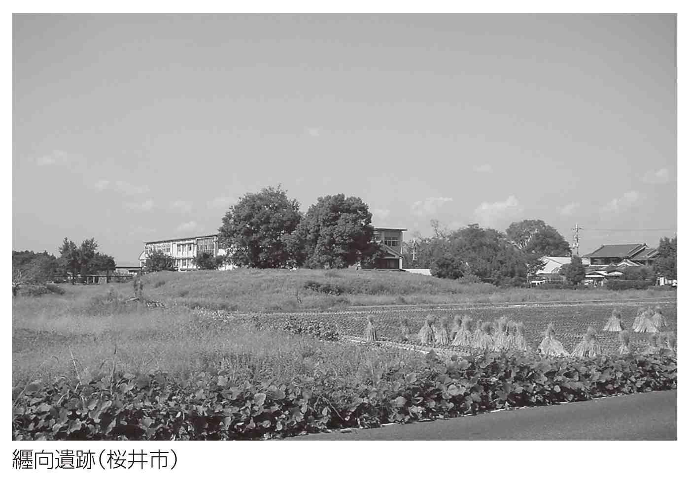

| 創られた英雄 創られた英雄 ヤマトタケルの正体 | |
| 関 裕二 | |
| (2017) | |

創られた英雄
ヤマトタケルの正体
関 裕二
古代史にひとりの怪物がいる。
ヤマトへの帰還を夢見ながら、病魔に冒され、悲劇的な最期を遂げたことから、誰もがその名を知っている。もちろんそれが、ヤマトタケル（日本武尊、倭建命）である。
ヤマトタケルは、天皇家の輝かしい歴史の一ページと信じられてきた。だからかつては、尋常小学校の教科書に、神武天皇等と共に大きく取りあげられ、その活躍が喧伝されもした。逆に戦後の史学界は、軍国主義に利用された古代史の英雄を、「取るに足らないお伽話」と切り捨てたのである。
だが、冷静にこの人物の足跡を追っていくと、多くの疑問に行き着く。八世紀の『日本書紀』の編者が、天皇家の歴史を輝かせるために創作したにしては、あまりにも不自然な行動が目立つからである。
たとえば、ヤマトタケルの前半生は、「すがすがしい好青年」のそれではない。バラバラ殺人をしでかし、恐れをなした景行天皇は、放逐するように遠征に差し向けたというのが、本当の話なのである。
「父は私に死ねといっているのだろうか」
とヤマトタケルは嘆いてみせるが、その原因を作り出したのは、ヤマトタケルの凶暴な性格であった。遠征先でも、ヤマトタケルは、卑怯な行動を繰り返している。地方の首長を、だまし討ちにしているからである。
これが、天皇家の歴史を飾り立てるための創作なのだろうか。
もうひとつ、大きな謎がある。
それは、歴代天皇の葬儀に際し、ヤマトタケルの死を悼む歌が、歌われ続けたことで、この伝統は明治時代まで守られた。いったい、ヤマトタケルとは何者なのか、なぜ天皇家は、ヤマトタケルを忘れることができなかったのだろう。
この人物が単なる「創作」であったと片づけておいて良いのだろうか。
今回、ヤマトタケルを追ってみて、はっきりしてきたことがある。それは、「ヤマトタケル」は、ヤマトの歴史そのものであり、ヤマトを巡るありとあらゆる謎が、ヤマトタケルを通じて、一本の線でつながっていたことなのである。
知られざるヤマトタケルの正体を、探っていきたい。
ヤマトタケルの正体＊目次
装丁――多田和博
写真――Libra
ヤマトタケルという名前は、人を喰っている。
なにしろ、ヤマト（大和）の「ヤマトタケル」は南部九州に赴き、熊襲の首魁「クマソタケル」を成敗し、その帰り道、出雲に立ち寄り、出雲の首長「イズモタケル」を懲らしめてきたというからである。
つまりこの話、「ヤマトの勇者（ヤマトタケル）」が、南部九州の「クマソの勇者（クマソタケル）」や日本海側の「イズモの勇者（イズモタケル）」らを成敗してきたという伝説なのだった。
この単純な「名」を見る限り、とてもではないが「ヤマトタケル」が実在したと考えるわけにはいかないのである。
ヤマトタケルが神話の世界の英雄なら、「ヤマトタケル」という命名も、分からぬではない。しかし、第十二代景行天皇の御子なのだから、どうにもいただけない。なぜ『日本書紀』や『古事記』は、歴史時代に神話じみた説話を挿入する必要があったのだろう。
もっとも、少し歴史に詳しい方なら、「干支のはっきり分かるのは第十四代仲哀天皇以降なのだから、ヤマトタケルが神話の域を出ないのも、仕方のないことではないか」と思われるかもしれない。
だが少なくとも、『日本書紀』や『古事記』は、初代神武天皇の東征以降を「歴史」として記述している。また、六世紀以前の『日本書紀』の記述はあてにならないともいうが、第十代崇神天皇が、実在したヤマトの初代王ではないかという考えは、定説化している。
その後、第十一代垂仁天皇の時代に、田道間守なる人物が常世国に赴き、非時香菓をとってくるといった神話じみた説話をそこかしこに差し挟んでいるとはいえ、建前上は、ヤマトタケルは歴史時代の人なのである。
まじめな歴史の中に、突然、「ヤマトタケル神話」が挿入されていることに、違和感を禁じ得ないのである。
しかも、ヤマトタケル説話は、単純な神話ではないから不可解なのだ。
たとえば、ヤマトタケルは「西征」と「東征」では、別人のような活躍をしている。
すでに触れたように、西に向かったヤマトタケルは、クマソタケルやイズモタケルを卑怯な手口でだまし討ちにしている。ところが東に向かったヤマトタケルは、豹変する。むしろ騙され、おとしめられ、悲劇のヒーローとなっていくのである。
今日でも、ヤマトタケル人気が東国で顕著なのは、このような説話の設定と無縁ではあるまい。
ではなぜ、西と東で、ヤマトタケルは別の顔を持っていたのだろう。
ヤマトタケルを巡る謎は、いくらでも出てくる。そこで、話を進める前に、まずヤマトタケルを巡る系譜を追ってみよう。
『古事記』によれば、ヤマトタケルは「纏向の日代宮の大帯日子淤斯呂和気天皇（第十二代景行天皇）」の子とある。母は吉備臣等の祖・若建吉備津日子の娘の針間の伊那毘能大郎女で、五人兄弟である。上から順に、櫛角別王、大碓命、小碓命、倭根子命、神櫛王で、真ん中の小碓命の別名が倭男具那命で、これがヤマトタケルである。
ちなみに「ヤマトタケル」という名は、クマソ征討ののちにつけられたもので、その理由については、この後の説話に出てくる。『古事記』に描かれたヤマトタケル説話を中心に、この人物の生涯を追ってみよう。
さて、ヤマトタケルは、誰もが思い描くような古代史の英雄ではないことは、クマソ征討の様子をみれば明らかだ。
ヤマトタケルがクマソ征討に向かうきっかけは、やや複雑な話になっている。ヤマトタケルは手がつけられない悪童であったようなのだ。
景行天皇は、美濃の国造の祖・大根王の二人の娘が美しいことを知って、大碓命を差し向け、召し上げさせた。ところが大碓命は、二人の娘を娶り、父親には別人を偽って献上したのだった。
景行天皇は、二人の乙女が大根王の娘でないことを知って、閨をともにすることもなかったという。
そんなある日、景行天皇は小碓命（ヤマトタケル）に、
「なぜお前の兄は、朝夕の大御食（食膳）に参上しないのだ。ねんごろに教え諭してきなさい」
と命じた。
その後五日たっても、大碓命は出仕しなかった。不審に思った景行天皇は、
「なぜお前の兄は、なかなか出仕しようとはしないのだ。まだ教え諭していないのか」
と小碓命に尋ねてみた。すると小碓命は、
「すでにねんごろに教え諭して参りました」
という。そこで景行天皇は、
「どのようにねんごろに教え諭してきたのか」
と問いただした。するとヤマトタケルは、
「厠で待ち伏せし、明け方やってきたところを捕らえ、押しつぶし、手足をもぎ取り、薦に包んで投げ捨てました」
と、何食わぬ顔で述べたのだった。
なぜこのようなことになってしまったのかというと、景行天皇の「ねんごろに教え諭せ」が原文では、「ねぎ教へ覚せ（泥疑教覚）」となっていて、「ねぎ」「ねぎす」は「ねぎらう」「いたわる」の意で、ヤマトタケルは、「ねぎらう」の意味をはき違えたことになる。
いずれにせよ、景行天皇はこのような小碓命の荒々しい心を恐れたのである。そこで、次のように命じている。
「西の方角に兄弟のクマソタケル（熊曾建）がいる。彼らはヤマトに服従しようとしない。だから、このものどもを討ち取ってこい」
こうして小碓命は、九州に遣わされたのである。
古代史最大の英雄と信じられてきたヤマトタケルが、実際には「手のつけられない暴れん坊」であったという説話の設定は、いったい何を意味しているのだろう。
「化け物のようなやつだ」
と恐れられ、「それならばクマソ征伐に向かわせよう」と、小碓命は半ば放逐されるかのように、九州に派遣されたのである。
ここからいよいよ、クマソ征伐が始まる。
小碓命は、伊勢の叔母・倭比売命の御衣と御裳をもらい受け、剣を懐に入れて九州に向かった。
クマソタケルの家を、兵士らが三重に囲み、守っていた。クマソタケルは家を建て、その中にいた。ちょうど新築の祝宴を開こうと、食べ物を用意している最中である。
祝宴当日、小碓命は額に結っていた髪を梳り垂らし、叔母の御衣、御裳を着て童女の姿となり、女人たちの中に紛れ込み、室の中に入っていった。するとクマソタケルの兄弟は、童女（小碓命）を気に入って、招き寄せ、二人の間に座らせた。宴もたけなわになった頃、ヤマトタケルは懐から剣を抜き、兄のクマソタケルの衿をつかみ、剣を刺し貫いた。弟は恐れて逃げだしたので、小碓命はこれを追い、背中をつかみ、尻から剣を刺し入れた。
クマソタケルは、
「剣を動かさないでください」
と懇願し、「申し上げたいことがあります」というので、小碓命がそのまま押し伏せていると、クマソタケルは小碓命の名を尋ねた。すると小碓命は、「倭男具那王」と答え、まつろわぬ者どもを成敗するためにやってきたことを告げた。
するとクマソタケルは、
「西の方には、私たち二人よりも強いものはおりません。けれども、大倭国（ヤマト）には、強い方がいらっしゃったのですね」
こう述べたクマソタケルは、小碓命に、「倭建御子と名乗られますように」と申し上げたのだった。
じつをいうと、ヤマトタケルの名が生まれたのは、この瞬間だ。そしてヤマトタケルは、熟した瓜を切り刻むように、クマソタケルを殺したのである。
『日本書紀』には書かれていないが、『古事記』には、九州からの帰り道、ヤマトタケルは出雲に立ち寄ったとある。
イズモタケルを殺そうと考えたヤマトタケルは、騙すために友誼を結んだ。そして密かに、ニセの大刀を作った。そうしておいて、ともに肥河で水浴びをした。ヤマトタケルは先に川からあがり、「大刀を交換しよう」といい、イズモタケルの大刀を身につけたのだった。イズモタケルは川からあがってヤマトタケルの大刀を身につけると、ヤマトタケルは、「いざ、大刀をあわせよう」といった。イズモタケルが大刀を抜こうとしたが抜けない。その隙に、ヤマトタケルはイズモタケルを斬り殺したのだった。
このように、ヤマトタケルは出雲でも、卑怯な手口で敵を倒していたのである。
ではなぜ、ヤマトタケルは英雄となって後世に名を残したのだろう。
根強い人気を博すのは、その悲劇性ゆえである。
父景行天皇の命令で西国を平定し、ヤマトに帰還後、すぐさま東国征討を命じられた。
「父は私に死ねといっているのだろうか」
と嘆き、ヤマトタケルは東国に赴いたという。
この瞬間、ヤマトタケルは西征の時と、まったく別人に変身する。騙す立場から、か弱き被害者となっていくのである。
もっとも分かりやすい例は、『古事記』の次の場面であろう。
ヤマトタケルは伊勢の倭比売命から剣と御嚢を貰い受ける。倭比売命は、
「もし火急の折は、この御嚢の口を解きなさい」
と教えた。こうしてヤマトタケルは東国に向かう。途中、尾張のミヤズヒメに出会い、結婚の約束をして、さらに東に向かった。
『古事記』には、このとき、
悉く山河の荒ぶる神と伏はぬ人等とを言向け和し平げき
とあり、ヤマトタケルは東国の人々のみならず、土着の神の服従も求めていたのである。
相武国（相模）に着くと、国造はヤマトタケルを欺き、次のように告げた。
「この野の中に大きな沼がございます。沼に住む神は、はなはだ道速振る神（荒々しい神）です」
そこでヤマトタケルは、その神を見てみようと、野に分け入った。
すると国造は、野に火を放った。欺かれたことを知ったヤマトタケルは、倭比売命から貰い受けた御嚢の口を解きあけてみた。すると中に火打ち石が入っていた。そこで、やはり倭比売命から授かった剣で草を刈り、払い、火打ち石で草に火をつけ、迫りくる火を退けて、ようやく危機を脱したのだった。
前半生で、人々を騙しつづけてきたヤマトタケルが、東国ではなぜか、騙される人に入れ替わったのである。
ヤマトタケルの悲劇性は、その死でピークを迎える。
東国を「言向け和した」ヤマトタケルであったが、尾張に戻り、ミヤズヒメのもとに草薙剣を預け、伊吹山に向かう。ところが伊吹山の神の怒りに触れ、衰弱し、有名な次の歌、
倭は 国のまほろば たたなづく 青垣 山隠れる 倭しうるはし
を残し、能煩野（三重県亀山市）で亡くなるのである。
ヤマトタケルは最後の最後まで、ヤマトを思い続け、この世を去った。
ヤマトに残された后や御子たちは、能煩野を訪れ、御陵を造って、水が張られた田を這い回り泣き、ヤマトタケルを偲ぶ歌を歌った。
するとヤマトタケルは「八尋の白ち鳥」となった。「白ち鳥」とは、「千鳥」とも「白鳥」とも考えられている。
それはともかく、ヤマトタケルは空高く飛び立ち、浜の方角に飛び去った。后や御子たちは、小竹（篠）の切り株で足を傷つけても、痛みを忘れ、泣いて追ったといい、このとき歌った歌が、そのままヤマトタケルの葬儀で歌われ、また、今に至るまで、天皇の大御葬に歌われている、というのである。
ところで、八尋の白ち鳥は、そのあと、河内国の志幾（大阪府柏原市）に留まったため、そこに御陵を造り、鎮座させた。そこで、この御陵の名は、白鳥御陵という。ただ、八尋の白ち鳥は、さらにここから天高く飛んでいってしまったという。
このように見てくると、ヤマトタケルは、やはり「神話」なのである。
朝廷の難敵、クマソタケルを「童男」であったヤマトタケルが、あっさり討ち果たしてしまったという。これは、現実ではないことは当然のことだ。
野火に囲まれたヤマトタケルは、倭比売命から授かった御嚢の口を開け、火打ち石で、窮地を脱したという。これも、現実の話ではない。
亡くなられたヤマトタケルの魂は八尋の白ち鳥となって、西に向かって飛んでいったという。そして、河内国に留まったので御陵を造ったという。これも現実の話ではない。
ではいったい、なぜ歴史時代の人物の説話が、神話じみた記述に溢れているのだろう。
では、謎に満ちたヤマトタケルを、これまで、どのように考えてきたのだろう。
戦前に国家の弾圧を受け、戦後史学界に多大な影響を及ぼした津田左右吉は、ヤマトタケルにまつわる『日本書紀』や『古事記』の記事は、史実ではないと、切り捨てている。その証拠を、いくつもの例を引き合いに出して説明している。
たとえば、『古事記』は、南部九州のまつろわぬ者＝クマソタケルを二人の兄弟だったと設定しているが、これは、神武東征説話などにみられる「反逆者を二人組にする」という「古い物語の通例」と指摘する。
また、ヤマトタケルは女装をしてクマソタケルをだまし討ちにしている。もし南部九州にそれなりの勢力が存在して、ヤマト朝廷がてこずったという歴史があったとしても、女装してだまし討ちにするなどという子供じみた方法で打ち破ることができるはずがない、と指摘する。さらに、女装しておきながら、「その容姿は巨大で背丈は一丈（三メートル）もあった」という記事が残され、これは「シナ風の勇士の形容語を無意味につけ加へたのみのこと」（『津田左右吉全集 第一巻』岩波書店）とし、こういう英雄の話は、何かしらの歴史的事件があったとしても、それはいくつかの事件をひとりの英雄の行動に託したに違いない、とするのである。
さらに、ヤマトタケルが成敗するのはクマソタケルやイズモタケルなのだが、「ヤマト」「クマソ」「イズモ」といった地名をそのまま登場人物の名にしたことは明らかで、実在の人物とは考えられないと指摘し、次のように結んでいる。
ヤマトタケルの命のクマソ征討の物語が歴史的事実でないことは、明かであるが、しかし朝廷に服従しなかつたクマソといふ勢力があり、或る時代にいくらかの兵力を以てそれを平定せられたことは、事実らしい。さうしてそれは、漠然たる記憶もしくは伝説としてヤマト朝廷の間に存在したのであろう。ヤマトタケルの命の物語は、それを一英雄の行動として作つた話と考へられる（前掲書）。
ヤマトタケルだけではない。『古事記』の仲哀天皇よりも新しい時代の巻は、歌物語や恋物語ばかりなこと、逆に、それ以前の方がかえって政治的意義を持つ記事に満ちていることは、不自然であり、それは、後人の述作であることに疑いはない、というのである。
『記・紀』以前の六世紀中頃に編まれた『帝紀』『旧辞』は、すでに当時の朝廷の思想によって、皇室の由来と権威の発展を述べようとしたもので、八世紀にいたる間に何度も潤色や改編を受け、『日本書紀』や『古事記』となったのだから、その記事を歴史的事実として認めるわけにはいかない、と主張するわけである。
もっとも分かりやすい例は、ヤマトタケルに先立って敢行された、景行天皇のクマソ征討である。
津田左右吉は、『日本書紀』に描かれた景行天皇の親征は、事実としてみるべきではないという。その理由として、次の五点を掲げている。
第一に、景行天皇の親征記事には、地理上の錯誤が多いこと、第二に、説話の大半は巡行の道筋の地名を説明するために費やされていること、これらを除くと、物語の大部分が空虚になるとする。第三に、登場する人名に、地名がそのまま用いられていて、彼らが実在したとは到底考えられないこと。第四に、話の中に「支那思想」を用いた粉飾がみられること、第五に、景行天皇が日向でヤマトを懐かしんで詠んだ歌が、『古事記』では、ヤマトタケルの歌として記録されていること、しかもそれは、遠方にいてヤマトを偲んだとは思えないことから、本来無関係だった歌を、無理矢理景行天皇やヤマトタケルに結びつけられたものと指摘している。
この結果、景行天皇の征討は事実とは認められないと指摘し、ヤマトタケルの説話のあとにつくられたとする。
さらに、『記・紀』のヤマトタケルの説話には、「ヒムカ（日向）」の地名が一切出てこないこと、「クマソ」がどこなのか、明確にされていないことに注目した津田左右吉は、クマソ征伐という単純な概念をもとにして物語はつくられたのだろうと指摘している。また、景行天皇がクマソを征服したという話が差し挟まれたために、『日本書紀』のヤマトタケルのクマソ征討の説話が、比較的軽い内容になってしまったとするのである。
ヤマトタケルが創作に過ぎないという津田左右吉の考えは、基本的に今日まで継承されているように思われる。
ただし、戦後になると、このような津田左右吉の、「記紀を徹底的に批判する」という姿勢から一歩脱却しようとする試みが、提出されるようになった。その中のひとつが、「英雄時代論」と呼ばれるものだ。
石母田正は、津田左右吉の研究が、ヤマトタケルに代表される「英雄」の実在性を否定することのみに全精力を使い果たしたという。ただしそれは、戦前戦中の過酷な学問環境を「みじめで野蛮だった」からだと述べ、その制約との戦いであったと弁護する。その上で、津田左右吉の一歩先に進もうと考え、英雄時代のヤマトタケルについて、考察を進めたのである。
では、英雄時代とは何だろう。
ヤマトタケルを、「英雄時代の叙事詩」とする考えは、ヤマトタケル研究の一つの大きな柱になっている。
英雄時代とは、原始的な社会から、階級や法秩序が形成され、国家が生まれる過渡期を指している。混沌とした原始社会のなかで、英雄は人間離れした能力を発揮する半神であり、英雄自身が「法」や「秩序」そのものなのだった。そして、英雄の活躍によって、やがて社会は発展していくということになる。その英雄の歴史や伝承を書きとどめたものが、叙事詩である。
石母田正は、なぜ英雄時代が編み出したのか、その理由を次のように述べている。
混沌と激動の時代ののち、それらの困難を克服し「楽しい記憶」となったとき、峠に立っているという意識のもとに、自分たちの歩みを認識し、後世に書き残そうという欲求にかられたのだというのである（『石母田正著作集 第十巻 古代貴族の英雄時代』岩波書店）。
また、ヤマトタケルがそうであるように、人々は英雄時代に、悲劇性や郷愁を感じるのである。曖昧模糊とし、また、人間味溢れる伝承だけに、現代人も英雄時代にロマンを感じるわけである。
もちろん、英雄たちが、実在したかというと、むしろ否定的な見方が一般的である。
特にヤマトタケルのような存在は、天皇家の歴史を飾るために創作されたと考えられているのである。
これは、戦前の皇国史観に対する反発も手伝ってのことだった。
戦前の歴史の教科書をみれば、英雄時代に活躍した人々が、教育に利用されていたことは、一目瞭然である。
尋常小学校の教科書のなかで、神話に続いて登場するのは、神武天皇で、このあとヤマトタケル、神功皇后と話は続く。他に多くの人物が『日本書紀』や『古事記』に記録されているにもかかわらず、この三人がクローズアップされているのは、彼らが武功を挙げ、華々しい活躍をし、王権の強化に寄与しているからだろう。
神武天皇は南部九州から軍団を率いてヤマトに攻め寄せ、逆らう人々を一蹴している（実際には呪術によって打ち負かしたのだが）。ヤマトタケルはクマソタケルを討ち、東国を平定している。神功皇后は、北部九州から海を渡り、新羅を屈服させている。
どれもこれも神話じみた話ばかりで、戦後の史学界は、これらの説話のことごとくを、歴史から排除したのである。
石母田正は、『日本書紀』に描かれたヤマトタケルと『古事記』のそれでは、大きな違いがあると指摘している。
まず、四～五世紀のヤマト朝廷の様子を、各地に展開される巨大古墳の存在からみて、王家ひとりが強大な権力を持っていたわけではないと指摘し、「王のもとにおける統一された秩序ではなくして、むしろ溌剌たる無政府」と捉え、次のように考える。
最大の豪族であるこの時代の天皇は、独立的諸豪族の割拠と、対立闘争の中に身を置いていたと述べ、
大和国家はこのように対立と争闘にみちた混沌たる国家であったからこそ、それは生活力に溢れ、闘争心に燃え、外部の大小の国家を征服し、その制覇をとげることが出来たのであろう。（前掲書）
とするのである。またその一方で、これら闘争の主体は、神武天皇やヤマトタケル、そして雄略天皇のような『日本書紀』に記された王家の活躍ではなく、各地の古墳に葬られた首長層の手によるものであり、ここに、古典的な叙事詩的英雄の姿をみることができるというのである。
さらに石母田は、『日本書紀』の神武東征を「理念の化石」と酷評し、神武のような「貧困な形象」だけでは満足できなかった八世紀の歴史編纂者が、芸術的意義において対立的なヤマトタケルを創作したという。
もっとも、ヤマトタケルの物語にも、神武的な「貧困さ」が隠されているという。ヤマトタケルのクマソ征伐を記した『日本書紀』は、ヤマトタケルの征伐の記事が小さく、それ以前に父親の景行天皇の詳細なクマソ征伐の記事を載せていること、そこには歴史的にも芸術的にも真実の一かけらすらないことがはっきりとしていると述べ、その理由を、辺境の蛮族を天皇の権威によって征服する思想を肉付けするために編み出された説話だからとするのである。
『日本書紀』の中におけるヤマトタケルは、「死んだ拙劣な物語」であり、景行天皇の分身に過ぎないともいうのである。
その一方で、『古事記』のヤマトタケルは、強固な個性的独立性を獲得し、国土の天皇統治の政治的理念から解放されているとする。
『古事記』には、三つの型の英雄が隠されていて、そのひとつが、神武天皇という散文的英雄であり、第二には、神武東征物語にちりばめられた歌謡群に残された叙事詩的英雄、そして第三が、ヤマトタケルの浪漫的英雄とする。
これら『古事記』の英雄時代は芸術的世界であり、政治的理念に彩られた『日本書紀』のそれとは切り離して考えるべきであるとする。『古事記』のヤマトタケルが浪漫的というのはこのためだ。
では、『古事記』におけるヤマトタケル説話のテーマはどこにあったのだろう。石母田氏の考えをまとめると、つぎのようになる。
古代人にとっての「神（自然）」は無限の存在であり、生産力による神々との闘争も果てしなく続く。
けれども、神々は決して消し去ることのできない超越的な力を残す。そこで人々は、神々に譲歩し、妥協し、また、神々を祭壇に祭らねばならない。つまり、古代人は「運命との和解を必要とした」のであり、この古代人の姿が、ヤマトタケル説話に反映されているとする。
それは休息することのない神々との闘争であり、したがってそれは遍歴であり、神々は無限であり克服しがたいがゆえに、尊の運命は悲劇的でなければならなかった（前掲書）。
と結ぶのである。
いかにも合理的な結論である。だが、問題点がないわけではない。
このような英雄時代論について、米沢康は、懐疑の念を抱いている。
「英雄時代論」は、ヤマトタケルを象徴的な人物とみなし、『日本書紀』や『古事記』の説話が、事実であったかなかったかという視点のみで語られてきた嫌いがある、とするのである。
つまり、合理的な考察に思える「英雄時代論」だが、古代と現代の合理性の基準が異なることを、見逃しているといい、
矛盾点を二者択一的に取り扱い、簡単に一半を否定するようなことは、かえって伝承の古代的生命を断つことともなるであろうし、伝承の重層的性格への配慮を忘れた考察は、その本質的な理解に欠ける（『日本古代の神話と歴史』吉川弘文館）。
とするのである。そのとおりだろう。ヤマトタケル伝承は、ひとつのパターンでくくれるほど、単純な内容ではないからだ。
吉井巌は、次のような興味深い推理を働かせている。『古事記』や『日本書紀』が、成立した頃の現実的要請によって書かれている以上、それは天皇治政の由来記であり、「そこにはうそが含まれている可能性が大きい」と、まず釘をさす。そして、「大王は神にし坐せば」と称えられた現人神としての天皇の原理が、七世紀後半の天武朝に画期を迎え、天武の手によって歴史書が編纂されたことを重視している。
その上で、ヤマトタケルに対する疑問を、次のように掲げる。すなわち、東西平定の物語は大切なものであり、支配者の系統をすり替え、主人公の人物像に潤色を加えることはあったとしても、ヤマトタケルのように、主役を「皇子」の身分に落としたり、「孤独死」という運命を与えたりするはずはない、とする。
ではなぜ、このような説話が生まれたのかといえば、「支配の基盤となっていた原理に変更がおこったということである」（『ヤマトタケル』学生社）と考えたのである。
つまり、七世紀のヤマト朝廷は、アマテラスから続く天皇家の系譜を完成させ、この原理が完成した以上、武力による平定を基盤にした平定王者の物語は必要が無くなったのであり、だからこそ、天皇の戦いは、天皇支配の原理を敵に納得させ、これに従わないものに対しては、誅伐するという説話が生まれたのだとする。ヤマトタケルの「言向け和す」がこれである。
ヤマトタケル伝説が、後世の政治的な要因によって編み出されたといっている点は、説得力を持つ。『日本書紀』編纂時の政治情勢が、ヤマトタケル伝説に影響を与えたのは、当然のことと思われる。
ただし、天武天皇の意思（あるいは遺志）が『日本書紀』編纂に影響を与えたという考えは、間違っていると思われる。『日本書紀』編纂の中心には、むしろ「天武の政敵」が立っていて、ヤマトタケル伝承を構築したのは、彼らではないかと思われる節がある。けれどもこの件については、のちに詳述する。
門脇禎二は、ヤマトタケルの物語は、多くの歴史的要素が合わさり、ヤマト朝廷の大王や貴族の知識を核に、創作されたものだと指摘している（『ヤマトタケル 第二回春日井シンポジウム』森浩一、門脇禎二編、大巧社）。
そして、具体的に、どのような英雄像が念頭におかれ、いつごろヤマトタケルが出現したのかといえば、それは、五世紀から六世紀前半のことではないか、とする。それはなぜかといえば、
日本列島にはこの時期、いくつかの地域王国が並列したことがあり、そういう地域王国どうしの競合、競り合いの段階が後の互いに戦うタケル像とダブっていったのだと理解しております（前掲書）。
と結ぶのである。
しかしそれなら、なぜ西征と東征では、ヤマトタケルの「性格」が入れ替わってしまうのか、なぜ前半生のヤマトタケルが強暴なのか、物語をそのように設定する理由がどこにあったのか、ヤマトタケルの本質を解明することはできないように思えるのである。
比較神話学の吉田敦彦は、なぜヤマトタケルが乱暴な人物として描かれるのか、その答えを、比較神話学の手法で解き明かそうとした。
比較神話学とは、世界中に広まっている神話とそれぞれの地域の神話を比べてみて、共通するところ、一致しないところを割り出し、神話の伝播や構造を明らかにしようとする試みである。
不思議なことに、日本固有の神話と思われてきた記紀神話も、東アジアのみならず、インドや地中海との接点が見いだせるのである。
では、ヤマトタケル説話はどうかというと、インド・ヨーロッパ語族の神話と共通点が見いだせるという。
代表的武神もしくは人間の勇士が、その輝かしい履歴を三つの重大な罪によって汚すことをテーマとする、「戦士の三つの罪」型と呼び得るものがある。（中略）ヤマトタケルの尊の伝説が『古事記』に物語られている形においては、この印欧神話の話形をほぼ正確に踏襲して組み立てられている（後略）（『ヤマトタケルと大国主』みすず書房）。
とするのである。
では、ヤマトタケルの犯した三つの罪とは何だろう。吉田はそれらひとつひとつを、印欧神話で語られる三つの罪のパターンに当てはめている。
まずヤマトタケルは、双子の兄を、残虐な方法で殺している。しかも『日本書紀』には、二人の出生の様子を、次のように記録している。
大碓皇子・小碓尊は、一日に同じ胞にして双に生れませり
このように、同じ胞の中から生まれた兄弟であったにもかかわらず、ヤマトタケルは兄をなぶり殺しにしたと『古事記』にある。これは、「宗教的禁忌に抵触する犯罪」だという。
もうひとつの罪は、東征の終盤、ヤマトタケルが伊吹山に赴き、山の神の毒気に当たって亡くなる直前の話だ。
『古事記』には、つぎのようにある。
ヤマトタケルは尾張の国に戻ってくると、約束どおりミヤズヒメ（美夜受比売）を訪ねた。
ミヤズヒメが食事をさし上げたときのこと、大きな杯をヤマトタケルに献上すると、ミヤズヒメの衣の裾に月経の血をつけていた。だが、お互いに歌を交わして、結ばれたという。
これを「異常な状態での交情」と指摘する吉田は、この直後、ヤマトタケルが草薙剣をミヤズヒメのもとに預け伊服岐能山に赴き、山の神の毒気に当たり、不治の病に冒されるのは、「月の障り」を無視した「交情」が、原因であったとする。そして、やはり印欧神話にも、同様の話が残され、「愛欲に溺れた性的犯罪と病死」という共通点を持つとするのである。
最後の罪は、すでに触れておいた西征におけるヤマトタケルのだまし討ちである。
やはり印欧神話にも、友誼を信じ切って油断した相手を殺すという話があって、この罪を犯したのち、ヤマトタケルが東征を強要されたという話も、やはり印欧神話に、似た話が残されているという。
吉田は、このほかにも、印欧神話とヤマトタケル、印欧神話と記紀神話の類似点を指摘したうえで、次のように述べている。
記紀の神話伝説中にインド・ヨーロッパ語族の伝承との類似が、しばしば偶然の所為とはみなし難いほど複雑な全体を成し、数多く見出されるのは、印欧文化圏からの神話の強い影響が、ユーラシアのステップ地帯の遊牧民に媒介され、朝鮮を経由して、古墳時代のわが国まで及んだ結果であろうと考えている（前掲書）。
なるほど、こうしてみてくると、ヤマトタケルはまさに「神話」であり、しかも、海外から伝わった「パターン」を踏襲していたことが確かめられる。そうなると、実在のモデルが存在したとは思えなくなってくるのである。
しかし、このような比較神話学だけをもってヤマトタケルの正体を見極めることには無理がある。
たしかに、『日本書紀』や『古事記』の神話やヤマトタケル伝承に、海の外からもたらされた文物が影響を与えたであろうことは、想像に難くない。だが、歴史書は権力者によって書かれたものであり、強い政治性を帯びている。ただ単に、伝来の神話をモデルに構築されたわけではないだろう。
そこには、政権の正統性を証明するためのカラクリや捏造が含まれているはずで、「ヤマトの英雄」としてのヤマトタケルが、まったく政治性を帯びていないと考えることはできないのである。
これらの視点とはまったく異なる方法で、ヤマトタケルを論じたのは、ヤマトタケルと金属冶金集団の活躍を結びつける谷川健一である。
ヤマトタケルは、「鉱毒」で体をやられたのではないか、というのである。
ヤマトタケルが神の毒気に当たって衰弱するのは、伊吹山（伊服岐能山）での出来事だった。『古事記』によれば、ヤマトタケルは伊吹山の神を素手で殺そうと、草薙剣をミヤズヒメのもとに置いて伊吹山に向かう。途中、牛のような大きさの白猪と出会う。『日本書紀』には大蛇とあり、白猪も大蛇も、伊吹山の神の化身だったが、ヤマトタケルはただの神の使いと思い込み、帰り道で殺そうと、言挙げした。このため、ヤマトタケルは氷雨と霧に包まれ、正気を失い、滅亡の道を歩むことになる。
では、伊吹山の神とは何者なのだろう。
蛇は古来、「剣」や「雷神」と同一視されてきたものだ。草薙剣が八岐大蛇の尾から出てきたという話も、蛇と剣、蛇と金属冶金の関係を暗示している。
伊吹山の神も、どうやら「金属冶金」と関わりのある神らしい。
伊吹山の周辺には、「伊吹の弥三郎」の伝説が残されていて、全身が鉄で覆われていたという。今でも伊吹山の山頂の小さな湧き水には、「弥三郎泉水」という名がつけられている。いわば、伊吹山の主のような男だったわけである。
伊吹山の神も主も、「鉄」や「剣」と関わりがあったのは、偶然ではないようだ。
古代の伊吹山には、伊福部氏がいて、銅の製錬に携わっていたという。彼らが奉祭する伊福部神は、『常陸国風土記』逸文に登場する伊福部岳の神で、正体は雷神であり、ようするに蛇であり、剣そのものを意味している。
また、伊吹山の金属冶金集団の中には、鉱毒によって体をこわし落命するものが多かったとする話が残される。
ただし、谷川健一は、伊吹山で銅が採れたことには疑問を呈し、その一方で、周辺一帯に製鉄遺跡が見つかっていることから、
要するに伊吹山が古代の金属精錬に従事していた伊福部氏の尊崇する山であり、そこに伊福部の神である雷＝蛇神がまつられていたことを認めるだけで充分である。（『青銅の神の足跡』集英社）
と述べ、伊吹山を巡るヤマトタケルの説話は、ヤマトタケルが金属冶金に関わり、「鉱毒」によって衰弱したことを表現したものではないか、と推理するのである。
このことは、伊吹山を下ったヤマトタケルの、最後の行動からも読み取れると、谷川は指摘している。
『古事記』によれば、ヤマトタケルは尾津の前（伊勢国桑名郡尾津郷の岬）から三重村（三重県四日市市）を通って能煩野に至るが、三重村で、「吾が足は、三重に勾れるが如くして、甚だ疲れたり」と述べている。
谷川健一は「三重村」を、四日市市の水沢付近と考え、ヤマトタケルを祀る式内社足見田神社の「あしみた」に注目した。『和名抄』は、水沢のかつての地名・三重郡芦田郷をアシミタと読ませていて、それはなぜかというと、ヤマトタケルが足を傷めたことと関わりがあるというのだ。
『万葉集』巻十二─三一二六に次の歌がある。
巻向の穴師（原文には病足）の山に雲居つつ雨は降れども濡れつつそ来し
（大意）巻向の穴師の山に雲がかかり、雨は降っていますが、濡れながらやって来ました。（『新日本古典文学大系 萬葉集三』岩波書店）
ここにある「病足」は地名の「穴師」（奈良県桜井市穴師）のことで、『万葉集』には、このほかにも、巻七の、痛足川があり、『今昔物語集』の巻二十には、和泉の痛脚村という地名が出てくる。
なぜ「アナシ（穴師）」を「病の足」「痛い足（脚）」と書くのだろう。
桜井市穴師の近くには、古代たたら製錬に関わりのある遺跡が見つかっていて、穴師の兵主神社では、中国の金属の精錬と関わりの深い蚩尤を祀っているところからも、「穴師」と金属精錬は、強い因果を持つという。
金属精錬をする者たちが、「穴師」に住み、しかも「痛足」や「痛脚」と当て字するのは、彼らが鉱毒に侵されることと関連がありそうだ。
そこで話を、ヤマトタケルの三重にもどそう。
谷川健一は、水沢村の西方の鎌ヶ岳（冠山）の一帯でかつて良質の水銀が採れていたことを重視する。すなわち、ヤマトタケルがこの地で「三重に勾れる」と苦しんだのは、水銀中毒にやられたからではないかと、推理する。
水銀中毒になると、腎臓が侵され、足が腫れ上がるのだといい、次のように述べている。
ヤマトタケルの最後の足あとを印した土地は、ことごとく銅や鉄や水銀などの精錬に関連をもつ。こうしてみると、ヤマトタケルの最晩年の悲劇、それは古代の金属精錬集団の悲劇の反映にほかならなかった（前掲書）。
なるほど、民俗学的な観点からみて、ヤマトタケルが「ひとりの特定の人物」ではなく、また、各地のヤマトタケル伝承が金属冶金伝承に彩られていることも、事実であろう。
ヤマトタケルと金属冶金のつながりが、大きな意味を持ってくることも、たしかなことである。しかし、それはヤマトタケルの「側面」であって、「本質」ではない。
森浩一は、大宝二年（七〇二）八月八日の『続日本紀』の記事に注目する。
そこには次のようにある。
倭建命の墓に震す。使を遣して祭らしむ。
倭建命の古墳が、鳴動したのだろうか。あるいは地震か落雷があったのだろうか。いずれにせよ、ヤマトタケルの墓と伝えられている古墳で何かしらの変事が起きたようだ。そして、使者を遣わし、ヤマトタケルの霊をなぐさめたわけである。
森浩一は、この記事について、すでに『日本書紀』が完成する以前にヤマトタケルの墓があったことを重視する。
だからよくいわれる後の時代に架空の人物をつくったというのとはかなり違うと思います（『ヤマトタケル 第二回春日井シンポジウム』森浩一、門脇禎二編、大巧社）。
と指摘している。
また森浩一は、考古学者らしく、使者が遣わされたのは、墓を修繕するためと理解するが、「祭る」の二文字を軽視することはできない。また、この後中世に至るまで「墓の鳴動」は繰り返されるが、和田萃は、次のように指摘している。
国家の大事に関わることが起きたときに陵墓の鳴動がありました。この倭建命の墓の事例はその嚆矢でもあり、そういう点でも注目されます。（前掲書）
和田萃の指摘を無視することはできない。陵墓の鳴動があって、そこで朝廷があわてて祭ったというのだから、ヤマトタケルは、恐れられていたということになる。もしヤマトタケルが、架空の存在であるとしたら、このようなことが起こっていただろうか。
ヤマトタケルを、「下らない絵空事」と捨て置くわけにはいかない。この人物が単純な「天皇家の正統性・正当性を証明するために造られた英雄」と考えていては、古代史の謎そのものを迷宮入りさせてしまうことになりかねない。
まだまだ、ヤマトタケルには、解き明かされていない大きな謎が隠されているはずである。
そこで次章では、いよいよヤマトタケルの正体を追っていこう。
まず注目すべきは、ヤマトタケルと異界とのつながりである。
なぜかヤマトタケルは、鬼とみなされていたようなのだ。
疑うべきは、これまでの常識である。
ヤマトタケルはヤマト朝廷の英雄であり、天皇家の権威を高めるための創作であったという考えが、史学界を支配してきた。
そして、ヤマトタケルは実在しなかったことを証明するために、多くの時間が割かれてきたのである。
だが、われわれは大きな勘違いをしてきたのではあるまいか......。
大宝二年（七〇二）、ヤマトタケルの陵墓が鳴動し、朝廷が畏怖した事件を見逃すわけにはいかない。「ヤマトタケル」という名の人物が存在しなかったとしても、この名は「隠語」であり、「あの方」といえば、誰もが震え上がる、恐ろしい鬼のような人物が、古代人の心の奥底に棲み続けていたのではあるまいか。
なぜこのようなことを言い出すかというと、『日本書紀』や『古事記』のヤマトタケルが、どこから見ても鬼だからである。
もっとも、ここにいう鬼とは、現代人の知る鬼とはやや異なる。
そこで、ヤマトタケルと鬼のつながりについて述べる前に、古代人にとっての「鬼」とはどのような存在だったのか、少し説明をしておかなければならない。
平安時代以降、「鬼」は「オニ」と読むようになったが、それ以前は「モノ」と呼ばれていた。「もののけ姫」の「もの」が、これだ。「物の怪」の「物」が、「鬼」や「霊魂」を意味していたのである。
なぜ「モノ（物）」が鬼なのだろう。
理由は、万物に精霊が宿ると信じたアニミズム信仰に求められる。「物質（モノ）」に宿った「霊」が「モノ」だったのである。
アニミズム信仰はやがて、多神教に発展していくが、多神教の神々は一神教の唯一絶対の神とは違い、「時には悪さもする神々」であった。
たとえば、出雲神スサノオが高天原で大暴れしたように、多神教の神は、けっして正義の味方というわけではない。ではなぜ「神」と呼ばれるのかというと、それは、日本人にとって（あるいは多神教の世界において）神は「大自然そのもの」だからである。
大自然は災害を人々にもたらす恐ろしい存在である。だが、その一方で大自然は人々に恵みをもたらす。つまり、「神」とは、時には祟る鬼であり、また、時には恵みをもたらすありがたい神にもなったわけである。
この二面性こそ日本の神の本質であり、神は鬼そのものでもあったことになる。
また、鬼を子供（童子）が退治するという昔話の設定にも、深い意味が隠されている。「童子（童女）」は生と死の境界に近く、驚異的な成長を遂げる。したがって童子は神聖な存在であり、「鬼」と同等の力を持つ「鬼（神）」とみなされるようになったのである。
このように、古代人にとって、「神」と「鬼」は、一神教の「神」と「悪魔」や「正」と「悪」という関係ではなかったということになる。
ただし、八世紀以降、鬼には「邪しき者」というレッテルが貼られていく。その理由についてはここでは割愛するが、問題は、『日本書紀』が、「鬼を蔑み始めている」ということで、ヤマトタケルが鬼と接点を持っていたという話を、少し用心して見つめなければならない。
では、ヤマトタケルと「鬼」が、どこでつながっているのだろう。
まず、ヤマトタケルは「童男」と呼ばれている。これは実際にまだ若かったのに、クマソ征討に向かわされていたからかもしれない。けれども『古事記』が、「御髪を額に結ひたまひき」と、髪型にわざわざ言及しているのには、わけがある。
すでに他の拙著の中で繰り返し述べてきたように、『日本書紀』は物部守屋征討軍に加わった聖徳太子の髪型を、「束髪於額」と特記している。崇神天皇即位前紀に、「昔の風俗」として「束髪於額」を取りあげ、それは年若い者の髪型だったと指摘している。つまり、聖徳太子は童子であり、大人が束になってかかってもかなわない強敵・物部守屋の軍勢を、ひとりの童子の験力によって打ち負かすことができたといっていることになる。
ヤマトタケルが「童男」であるにもかかわらず活躍できたのは不自然な設定だが、それは現代人の感覚なのであって、童子の鬼退治は、昔話の定番である。
そのヤマトタケルは、出雲神話のスサノオともよく似ている。
スサノオは天照大神の弟だ。高天原で乱暴狼藉を働き、追放される。ところが、地上界に舞い降りたスサノオは、まるで人が変わったかのように、出雲建国に精進していくのである。
この、「最初は乱暴者、後半生は建国の功労者」という図式は、ヤマトタケルのそれに、そっくりである。
『日本書紀』神代上第七段一書第三には、次のような説話が載っている。それによれば、高天原で「悪事」を止めようとしないスサノオに対し、日神（天照大神）はけっして怒ることはなかったが、天石窟に籠もってしまわれたのだった。そこで多くの神々が相談して、日神を表に出したのだが、スサノオは高天原から追放されることとなった。長雨が降っていて、スサノオは青草を束ねて笠と蓑を作り、神々に宿を乞うたが、この地の神々は口々に、スサノオの行動を「濁悪しい」と罵り、家に入れてくれなかった。
また、追放されたスサノオは、もう一度姉にお目にかかっておきたいと、天上を目指したが、この時、天と地は鳴動したという話も載る。
このように、スサノオは「蓑笠」を着る男として描かれるが、「蓑笠」は異形の者のシンボルであり、その正体は「鬼」である。その証拠に、神代上第六段本文にも、スサノオが天に昇る時、大海原は大きく震え、山は鳴り吠えたという。これは雷神のイメージであり、スサノオは荒々しい祟る神である。
ヤマトタケルの陵墓が鳴動したという話も、このようなスサノオのイメージと重なるのである。
やはりヤマトタケルは鬼であり、祟る人である。
ヤマトタケルが似ているのは、スサノオだけではない。聖徳太子ともそっくりなのだ。
『日本書紀』の景行二年三月の条には、小碓命の誕生にまつわる話が載せられている。
それによれば、小碓命は兄の大碓命と、同じ胞衣に包まれて誕生した双子だったとある。景行天皇は、これを怪しみ、「碓」に向かって雄叫びをしたという。二人の御子に「碓」の名がつけられたのは、このためだった。
ちなみに、この碓に向かって雄叫びを上げたという行動の意味は、よく分かっていない。
それはともかく、これに続いて『日本書紀』は、ヤマトタケルについて、「幼い時から雄々しい性格で、成人して立派な体躯となり、大きな釜（鼎）を持ち上げられるほどの強力だった」と記している。
どちらも、幼い頃のヤマトタケルの「人と異なるところ」を強調しているところがミソである。
一方聖徳太子はどうだろう。『日本書紀』は普通の偉人ではないことを、いくつもの例を引いて証明しようとしている。
推古元年（五九三）夏四月の条には、母の穴穂部間人皇后が、出産予定日に宮を巡り、馬屋の戸にあたった拍子に聖徳太子を難なく産み落としたという有名な話がある。
聖徳太子は生まれ落ちた直後から、聖の智があったといい、成長するにおよび、十人の訴えを聞き漏らさなかったとも、また予知能力が備わっていたとも記す。
聖徳太子の神童ぶりが遺憾なく発揮されるのは、用明二年（五八七）秋七月の物部守屋征討であろう。
排仏派の物部守屋の暗躍に業を煮やした蘇我馬子は、ついに朝廷の主だった者たちを率いて、河内国渋川郡の物部守屋を討伐した。
物部守屋は激しく抵抗し、なかなか破ることができなかった。このとき聖徳太子は、後方から戦況を見守っていたが、
「これでは守屋を破ることはできないだろう。願掛けをしなければ成しがたい」
といい、霊木（白膠木）を伐り、四天王像を彫り、誓いを立ててみた。すると、物部守屋の軍勢は、総崩れになったという。
問題は、このときの聖徳太子の髪型を『日本書紀』が特記していることで、そこには「束髪於額」とある。
これは童子の髪型であり、手に負えない鬼のような物部守屋を、童子姿の聖徳太子が退治してみせたというのが、説話のテーマだったことになる。
また、聖徳太子は「童子の髪型だった」ことを強調されたが、すでに触れたように、ヤマトタケルも、クマソタケル征伐の時、「童子の髪型」だった。
奇妙なことなのだが、聖徳太子は多くの寺院で、童子の姿で祭られている。これも、聖徳太子をめぐる謎のひとつとされているが、「聖徳太子は鬼」という信仰があったと考えれば、謎は霧散する。
聖徳太子の伝承をかき集めた『上宮聖徳法王帝説』には、奇妙な記事が載っている。そこには、聖徳太子の母を指して「鬼前皇后」と呼ぶ場面がある。なぜ太子の母が「鬼前」なのかというと、この女性が「神前宮」に関わりがあったからだと説明する。
「神前」が「鬼前」にすり替えられているのは、「神と鬼は同一」という発想から納得できる。しかし、『上宮聖徳法王帝説』が書かれたのは『日本書紀』編纂の後のことであり、『日本書紀』は神話の中で、「神と鬼」を「聖と邪」に峻別しているのだから、聖徳太子の母の名「神前」を「鬼前」にすり替えたのは、意図的であり、一つの暗示が込められていよう。すなわち、「鬼（母）の子は鬼」ということである。
では、なぜ朝廷の聖者としてたたえられる聖徳太子が、鬼（童子）の姿で祭られ、「鬼の子」とみなされたのかといえば、その理由は、この後触れる。
それよりも、ここで大切なことは、ヤマトタケルと聖徳太子が、よく似ているということである。
「鬼」だけではなく、ヤマトタケルと聖徳太子は、いくつもの接点を持っている。
聖徳太子は朝廷の聖者である。旧態依然とした社会制度に風穴を開けようとした改革者でもある。ところが晩年、聖徳太子は都の飛鳥から遠く離れた斑鳩宮に住まいを移している。これは、聖徳太子の改革事業を蘇我氏が邪魔だてし、孤立した聖徳太子が、隠棲したからではないかとする説が根強い。もしこれが本当なら、聖徳太子は、政権から捨てられたことになる。
ヤマトのために東奔西走し、最後にはヤマトに帰ることのできなかったヤマトタケルの悲劇とどこか通じるところがある。
二人の姿が似通っているのは偶然なのだろうか。
古代史を代表する二人の英雄が、揃いも揃って童子の姿で活躍していたという「設定」の裏側に隠されていた真意とは、いったい何だろう。
じつは、ヤマトタケルと聖徳太子の似通いの謎を追って行くにつれ、ヤマトタケルに秘められた古代史の巨大な闇が浮かびあがってくるのである。
平安時代以降今日に至るまで、天皇は即位すると、即位儀礼に用いた服を、京都太秦の広隆寺の本尊聖徳太子三十三歳像に贈り続けた。今上天皇も例外ではない。
ここにある聖徳太子は、『日本書紀』に描かれた「英雄としての聖徳太子」ではないだろう。朝廷のために活躍し、聖者として死んでいったのが聖徳太子なら、天皇家は聖徳太子を恐れ続ける必要はなかったからだ。
ではなぜ、歴代天皇は、天皇家の聖者・聖徳太子に気を遣い続けてきたのだろう。
この謎を解くひとつの鍵を握っているのが、ヤマトタケルではあるまいか。
聖徳太子とヤマトタケルは「鬼」というキーワードでつながっていたが、もうひとつの共通点をもっているからだ。それは、朝廷が二人の偉人を恐れ続けていた、という事実である。
その好例が、天皇家の葬儀で、ヤマトタケルの死を悼む歌が歌い続けられてきたことである。
ヤマトタケルはヤマト朝廷のために東奔西走し、蛮族を打ち破り、「言向け和した」。だが、即位することなく、世を去っていた。
たしかに、ヤマトタケルの死は悲劇的であった。だが、ヤマトの王家が、ヤマトタケルを殺したわけではないし、朝廷のために働いて、つらい思いをした歴史上の人間は、ヤマトタケルだけではない。
それにもかかわらず、なぜ天皇家は、ヤマトタケルを忘れることができなかったのだろう。なぜ天皇家は、ヤマトタケルの死を悼む歌を歌い続けたのだろう。
そこでまず、歌の内容を知っておく必要がある。『古事記』に載る四首の歌を、次に記しておこう。
なづきの田の 稲幹に 稲幹に 匍ひ廻ろふ 野老蔓
浅小竹原 腰なづむ 空は行かず 足よ行くな
海処行けば 腰なづむ 大河原の 植ゑ草 海処はいさよふ
浜つ千鳥 浜よは行かず 磯伝ふ
これまでの解釈は、次のようなものだった。
「浅小竹原」は、叢をかき分けて遊ぶ子供たちの姿であるという。「浜つ千鳥」や「海処行けば」は、浜辺を走り回り、また、千鳥を追う子供たちの様子を歌ったもので、古代農村の童謡にほかならないとする考えがひとつ。
また、「なづきの田の」は、万葉歌や民謡に、植物に蔓草がからまる姿から、男女の恋を比喩している例の多いこと、その他の歌も、男が女のもとに通うときの歌とする考えがある。
このような説を紹介したうえで、守屋俊彦は『ヤマトタケル伝承序説』（和泉選書）の中で異論をはさんでいる。『古事記』に「天皇の大御葬に歌う」と記されていることから、童謡や恋の歌を、なぜ天皇の葬儀に歌わなければならないのか、素朴な疑問を抱いたのである。
まず、「なづき田の」の歌について、「古代の人々は、急速に成長する蔓草には強い生命力があると信じ、それを歌い込むことによって、生命の再生を計ろうとした」といい、残る三つの歌は、「死者の国の方へ行こうとする魂を、その魂が通る道筋の境目境目で、それを捕えることのもどかしさを歌うことによって、逆に魂を呼び戻そうとする気持を歌った呪歌」とする。死ぬと魂は、山を越え川を渡り、海辺から海の彼方の死者の国に飛んでいくと信じられていたこと、これらの歌は、それらの境目で歌われた「魂呼びの歌」と推理するのである。
この背景には、いくつもの根拠が示されている。『万葉集』巻二─二〇二には、次のような歌がある。
哭沢の神社に神酒すゑ祷祈れどもわご王は高日知らしぬ
右一首、類聚歌林に曰はく、檜隈女王の、泣沢神社を怨むる歌といへり。日本紀を案ふるに云はく、十年丙申の秋七月辛丑の朔の庚戌、後皇子尊薨りましぬといへり。
この歌は、天武天皇の長子・高市皇子（後皇子尊）が亡くなるとき、檜隈女王（高市皇子の娘とされている）が哭沢神社に神酒を供え、この世に留まることを祈願したが亡くなってしまい、嘆き悲しんだ歌と解釈されている。
だが守屋氏は、このような解釈は、古代の人々の感覚（死生観）とずれていると指摘している。注に記された「怨む」と「嘆き悲しむ」には、大きな差があるというのである。
守屋氏は、ここで注目しておかなければならないことは、古代人が、肉体から魂を離れた状態を「死」と考えていたことで、ふたたび魂が肉体にもどれば、生き返ると信じていたこと、歌の舞台が、「哭沢」だったところにあるという。
ところで、哭沢神社は天の香具山の西麓に位置する。高市皇子の宮にほど近い場所にあったと考えられる。祭神は哭沢女神である。
この哭沢女神について、『古事記』には、つぎのようにある。
イザナミは火の神を生んで亡くなった。するとイザナギはイザナミの枕元に腹ばいになり、「御足方に匍匐ひて哭きし時に、成れる神」が、天の香具山の畝尾の木本に祀られる哭沢女神であったという。
つまり、哭沢女神は、イザナギが泣き、その涙から生まれ落ちたという。このとき、イザナギは「匍匐」し、「哭」いているが、この所作は、「魂呼び」「再生」の儀礼なのである。
哭女が魂呼びの儀礼で中心的な役割を担っていくのは、「哭く」という呪術が重視されていたからだろう。したがって、哭女が神格化され哭沢女神に変化していったのではないかと、守屋氏は指摘する。
哭沢女神が涙から生まれたという話にも意味がある。「水」「沢」「泉」「井戸」には、生命再生の呪力があると信じられていたからだ。
哭沢神社の御神体は「井戸」で、やはり「水」を祀る神社であることが分かる。
アマテラスとスサノオは、高天原の天真名井で誓約をし、これは、水辺の神婚神話とされているが、守屋氏は、このとき神々が天真名井ですすいだ剣や瓊（玉）から化生していることに注目し、
それは聖なる泉から神々が誕生したということである。地上の聖なる泉を天上の世界に投射したのが天の真名井であろう（前掲書）。
と述べ、ここでふたたびヤマトタケルの死を悼む歌に立ち返れば、「聖なる水辺」で、「匍匐」し「哭」き、「遊ぶ（神事を執り行うこと）」のは、ヤマトタケルの魂を呼びもどそうとする呪術だったのではないかと結ぶのである。
ヤマトタケルの死を悼む歌が「呪術」であったという指摘は、たしかに説得力がある。だが、それがなぜ、「ヤマトタケル」という個人に結びつけられたのかが分からなければ、その謎を解いたことにはならない。
もちろん、「ヤマトタケルは架空の人物」と考えるならば、このような詮索は無用ということになる。だが、どうにも不思議でならないのは、現実に天皇家がヤマトタケルを恐れていたからなのである。
もし一般に考えられているとおり、ヤマトタケルが「創作上の人物」とすると、自らでっち上げた偶像に、なぜ恐怖を感じるのか、その理由が分からなくなるのである。
そこで話は、先述した『続日本紀』大宝二年（七〇二）八月八日の記事にもどる。ヤマトタケルの墓が鳴動したという問題の一節である。
国家に変事が起きる前兆として、高貴な人物の陵墓が鳴動するという話は、このヤマトタケルの話の後、平安時代に至るまで、史料に登場してくる。
ならば、ヤマトタケルの陵墓の鳴動とともに、何か変事が起きていたのだろうか。
まず、時代背景を明らかにしておこう。
「大宝」といえば、真っ先に思い浮かべるのは、大宝元年（七○一）に成立した大宝律令のことである。日本で最初の本格的な律令の完成であり、六世紀来のヤマト朝廷の執念が、ようやく実ったのである。
『続日本紀』大宝元年正月には、次のような記事が残されている。
文物の儀、是に備れり
すなわち、この大宝律令の誕生によって、学問や芸術の文化、法律などの制度は完成したといっているのである。
大宝律令編纂の最高責任者は、天武天皇の子の刑部親王（忍壁皇子）だが、実質的に指揮を執り実務を担当していたのは、藤原不比等である。
大宝律令が完成したこの年、藤原不比等にとって、もうひとつ大きな出来事があった。それが、首皇子（のちの聖武天皇）の誕生である。
首皇子は、藤原不比等の「悲願」でもあった。
壬申の乱でいったん没落した藤原不比等は、天武天皇の崩御の後、持統天皇に見いだされ、急速に台頭し、律令の策定に携わることになる。
律令を支配することで、ほぼ権力を手中にした藤原不比等が指した次の一手は、天皇の外戚となって、揺るぎない地位を確立することにあった。そして、娘の宮子を文武天皇にあてがい、生まれ落ちた最初の藤原腹の子が、首皇子だったのである。
つまり、藤原不比等の設計図通りに「藤原体制」がほぼ整ったのが、大宝元年であり、その直後に、ヤマトタケルの陵墓が鳴動したということになる。
藤原体制の確立と陵墓鳴動は、何か因果を帯びているのだろうか。
これは、変事ではないが、大宝二年の九月二十三日というから、鳴動のすぐあとのこと、「大赦」の処置がとられている。
しかも、理由のない大赦であり、ヤマトタケルの陵墓の鳴動を意識していた可能性が高い。
八世紀の朝廷は、ヤマトタケルの何に怯えたというのだろう。ヤマトタケルが祟るという認識が、なぜ八世紀の朝廷にあったのか。どういう理由で、朝廷はヤマトタケルを恐れたのだろう。
興味を引くのは、やはりこの年の十月十日、太上天皇が東国行幸に出立し、行幸先の田租を免除したことである。
『続日本紀』のいうところの太上天皇とは、持統（ 野讃良皇女）で、参河（三河）、尾張、美濃、伊勢、伊賀を経て、都に戻ってきている。
野讃良皇女）で、参河（三河）、尾張、美濃、伊勢、伊賀を経て、都に戻ってきている。
この東国行幸は、じつに謎めく。
なぜなら、持統太上天皇は、この直後の十二月に亡くなるからだ。死期を悟った持統が、余った命と引き替えに、東国に向かわなければならない切羽詰まった理由があったとしか思えない。しかも、ヤマトタケルに縁の深い尾張や、ヤマトタケル終焉の地をなぞるような経路を選択したのはなぜだろう。はたしてこれは、偶然なのだろうか。
持統が東国に向かった四日後の十月十四日には、「律令を天下の諸国に頒ち下す」という記事があって、完成した大宝律令を、全国に頒布したという。
持統太上天皇が、律令の定着を願って、東国に赴いたということであろうか。しかし、なぜ東国を重視したのか、判然としない。日本全国に律令は頒布されていったのであり、東国だけに特別な配慮を示す理由がよく分からない。しかも東国といっても、東海地方であり、くどいようだが、ヤマトタケルとの間に濃厚な因果を結んだ地域であったことは、無視できないのである。
持統太上天皇は、すでに最晩年である。東国行幸を強行したのは、この人物の執念としか思えない。問題は、持統太上天皇と「祟るヤマトタケル」が、どういう脈絡でつながるのか、あるいはつながらないのか、である。
そこで再確認しておきたいのは、持統太上天皇は何者なのか、ということである。
持統太上天皇は、藤原不比等を大抜擢し、その藤原不比等は、『日本書紀』編纂の中心メンバーとなったと考えられる。そうなると、「ヤマトタケルを恐れた持統太上天皇」と、「ヤマトタケルの物語を構築した藤原不比等」のコンビこそ、ヤマトタケルの秘密を握っていた疑いがある。
したがって、持統太上天皇の生涯の中に、「ヤマトタケルの祟りを恐れる理由」が隠されていたはずなのである。
ヤマトタケルの謎をひもとく鍵は、まさにここにある。
ただし、持統天皇の正体を解き明かすために、少し遠回りをしておかなければならない。
「持統太上天皇」を生み出した七世紀の政争の真相を、まずはっきりとさせておかなければ、この人物とヤマトタケルの本当の関係がつかめてこないからである。
そこで、改めて注目しておかなければならないのは、聖徳太子である。
なぜ聖徳太子は、ヤマトタケルとそっくりなのだろう。なぜ聖徳太子は鬼の姿で描かれ、悲劇的な最期を遂げたのだろう。
さて、これまで描かれてきた聖徳太子像は、おおよそ次のようなものだった。
聖徳太子は、六世紀の旧態依然とした社会の悪弊を取り除き、中国の隋や唐で完成しつつあった律令制度の導入を模索した。
ところが、これを邪魔だてする者がいた。もちろんそれが、蘇我氏であり、彼らは、既得権益を守るために、聖徳太子を排除したのではないかと疑われている。このため、聖徳太子は都の飛鳥から遠く離れた斑鳩の地で、晩年を過ごしたというのが一般的な解釈だ。
『日本書紀』にしたがえば、聖徳太子の薨去、推古天皇の崩御後、皇位継承問題がこじれ、太子の子の山背大兄王は推古女帝の遺詔を根拠に、即位に意欲を見せていたことになる。だが、蘇我本宗家は受け付けず、田村皇子（舒明天皇）擁立を強行した。
この後、皇極天皇（後に重祚して斉明天皇）が即位したのち、蘇我本宗家は蘇我系の古人大兄皇子擁立のチャンスをうかがっていた。そのため、山背大兄王が邪魔になったらしい。
山背大兄王とその一族は、蘇我入鹿の差し向けた兵に囲まれ、斑鳩で全滅したと『日本書紀』はいう。
ただし、このことが原因となって、中大兄皇子と中臣鎌足の手で、蘇我本宗家も、滅亡するに至る。これがいわゆる乙巳の変であり、この後の行政改革が、大化改新である。
もちろん、聖徳太子一族を追いつめ、乙巳の変で滅びた蘇我入鹿や蘇我蝦夷らは、天皇家をないがしろにした大悪人として、歴史に名を留められたわけである。
ただしこの、「改革事業を押し進めた聖徳太子」「聖徳太子の改革事業を邪魔だてした蘇我氏」という単純な図式、明確な勧善懲悪は、次第に疑われつつある。というのも、六世紀後半から七世紀前半にかけての社会システムの改編は、実際には蘇我氏が主導していた可能性が浮かびあがってきたからである。
なぜそのようなことがいえるのか、少し説明をしておこう。
まず、律令制度の先駆けとなった社会制度は屯倉制で、早い話、天皇家の直轄領を増やすことで、中央集権化を計ろうとした事業だった。弱い王からの脱却を計ったわけだ。
神武東征説話と江上波夫の騎馬民族王朝征服説の影響からか、ヤマト建国時の王家は征服者というイメージが残っている。しかし、のちに触れるように、考古学はヤマト建国時の強い王の存在を否定している。つまり、三世紀に誕生した「ヤマト」は、多くの首長層の寄せ集めであり、王は共立されていたと考えられ、ヤマトの王に強い権限は与えられていなかった。ヤマトを動かしていたのは、首長層であり、その首長層は、領土と私有民によって、発言力を高めていたわけである。
この体制は、「合議制」であり、長所といえば、独裁権力を生み出さないというところにあるけれども、国家の強い意志、迅速な判断が発揮できないという短所も合わせ持っていた。したがって、流動化する半島情勢を前に、五世紀後半ごろからヤマト朝廷は、次第に中央集権化への道を歩み始めたのである。
また、首長層が領土を拡充し、争いが絶えなくなり、地位と権力の世襲化が進み、硬直した社会が生まれつつあった。これらの諸問題を解決するためにも制度改革が求められていく。
したがって当然のことながら、強いリーダーシップも必要となる。具体的には、王家の直轄地を増やすことで、相対的に中央の権威を高めようとする運動がはじまった。これが屯倉制である。
じつはこの制度、蘇我氏の主導のもとに押し進められていた可能性が高いのである。
『日本書紀』によれば、聖徳太子の押し進めた改革事業を邪魔だてしたのが蘇我氏だったということになり、これまで通説は、この『日本書紀』の主張をほぼそのまま受け入れてきたものだ。
だが、『日本書紀』は八世紀の「藤原政権」のもとで記された歴史書であり、蘇我本宗家を潰しにかかったのが、中臣（藤原）鎌足なのだから、これは勝者の一方的な主張に過ぎないのである。
興味深いのは、古代史の大悪人・蘇我入鹿が、祟って出ていた疑いが強いことである。蘇我入鹿が「悪」だからおぞましい姿になって現れたのではない。蘇我入鹿が罪なくして殺されたから、祟って出たのである。
斉明元年（六五五）夏五月、大空を竜に乗った者が飛んだと、『日本書紀』に奇妙な記事が載る。身なりは異形の者で、斉明七年（六六一）にも、斉明天皇の身辺に、奇怪な事件が相次ぎ、鬼火（人魂か）や鬼が出没し、近侍の者がばたばたと亡くなり、ついには斉明天皇も亡くなったのだと記事はつづく。
斉明天皇といえば、乙巳の変の蘇我入鹿暗殺の事件現場に居合わせた女帝（皇極天皇）だ。
『日本書紀』は、斉明天皇にまとわりつく異形の者や鬼の正体を明かさないが、『扶桑略記』は、「これは豊浦大臣」と指摘している。豊浦大臣は蘇我蝦夷か蘇我入鹿のどちらかなのだが、斉明天皇が断末魔の声を聞いた蘇我入鹿と考えた方が分かりやすい。
今日的で科学的にいえば、「祟り」をまじめに考えるべきではないかもしれない。しかし、古代人にとって祟りは現実であり、また、祟られる側にやましい心がなければ成立しない現象でもある。
この、「祟る人物は罪なくして殺された」という図式は、平安時代の菅原道真を当てはめると、よく理解できるはずだ。菅原道真は社会システムの弊害を取り除くべく邁進し、あと一歩のところまで漕ぎつけながら、藤原氏の陰謀によって左遷、幽閉され、九州大宰府で憤死する。その後、道真追い落としに関わっていた人々が、次々と変死するにおよび、都人は、「菅原道真の祟り」と震え上がったのである。
そうなると、蘇我入鹿が天皇家をないがしろにし、律令制度の導入に反発していたから殺されたのだというこれまでの常識は、一度疑ってかかる必要が出てくる。
実際、屯倉制に続く律令制度導入も、蘇我本宗家が奔走していた可能性が高くなって来ているのである。
その証拠が、乙巳の変の後の大化改新なのである。
この、中大兄皇子や中臣鎌足の業績と信じ込まれてきた行政改革が、本当は蘇我氏の業績であった疑いが出てきたのである。
なぜこのようなことがいえるのか、大化改新の真相に迫ってみよう。
蘇我本宗家滅亡後、皇極天皇が譲位し、弟の軽皇子が即位した。これが孝徳天皇で、この人物は、矢継ぎ早に新政策を繰り出している。もちろん通説は、これらの事業は、蘇我本宗家を打ち倒した中大兄皇子や中臣鎌足の尽力によって押し進められたものと解釈している。
だが、これは疑わしい。そう思う根拠は、クーデター成功後の早い段階で難波への遷都が行われたことである。
難波遷都にまつわる疑念は二つある。
まず第一に、難波は防衛上の欠点を抱えていたことだ。難波を見下ろす生駒や城の山並みで、「親蘇我派」の残党が決起すれば、発足間もない新政権は、足下をすくわれる可能性があった。
このような防衛上の欠陥を抱える難波に、クーデター政権がなぜあわてて遷ったのか、ということである。
クーデター政権であるならば、まずヤマトの安定を見定め、親蘇我派の残党を駆逐した後に、満を持して遷都を実行したに違いない。それにもかかわらず、乱のほとぼりもさめやらぬ状態での遷都は、暴挙といっても差しつかえない。
そこで『日本書紀』に目を移すと、興味深い記事にたどり着く。孝徳天皇の難波遷都について、人々は、
「そういえば、ネズミが難波に向けて移動していたが、あれは遷都の前兆だったのだ」
と語りあっていたという。
問題は「ネズミ」が移動していた時期で、それが、蘇我入鹿暗殺直前のことだった。つまり、「ネズミの移動」とは、「難波遷都の計画が、すでに蘇我氏の手で立てられていた」ことを暗示しているのである。
近年、乙巳の変の黒幕は孝徳天皇だったのではないかとする新説がいくつも登場しているが、これには同意できない。孝徳天皇が蘇我氏と手を組んでいたと考えると、多くの謎が解けてくるからだ。
たとえば、孝徳天皇の御陵は、二上山の西方の磯長谷に存在するが、この地は蘇我系の王家の墓として名高い。『扶桑略記』には、蘇我入鹿の山背大兄王襲撃事件に、軽皇子（孝徳天皇）が加勢していたという記事が残される。火のないところに、煙は立つまい。『日本書紀』にも、山背大兄王襲撃事件を指揮した巨勢臣徳陀古が孝徳朝の左大臣になったと記されている。
孝徳天皇の姉の皇極天皇も、舒明天皇に嫁ぐ以前、蘇我系の高向王に嫁いでいた。皇極天皇が蘇我全盛期に擁立されたのは、蘇我氏と親しかったからだろう。
それはともかく、孝徳天皇は、難波に移ったあと、新都の建設（前期難波宮）に邁進するが、せっかく完成した難波宮を、「こんな宮は捨てて、飛鳥にもどりましょう」と進言したのは、中大兄皇子だった。
孝徳天皇が拒否すると、中大兄皇子らは、多くの役人たちを引き連れ、飛鳥にもどっていく。孝徳天皇は、ひとり寂しく難波宮で憤死するが、この中大兄皇子の行動も、理解できない。
というのも、難波宮の発掘が進み、この都が、後の藤原京や平城京と同等の規模を持った宮城であったことがはっきりとしてきたからだ。
つまり、この宮を造成した目的が、律令制度の基礎固めの第一歩だった可能性が高くなってきたのである。
出土した木簡からも、律令制度の萌芽が感じ取られる。とすれば、「律令整備のための難波宮」を捨てた中大兄皇子の方が、むしろ改革潰しに走っていたのではないかと思えてくるのである。
ここに、あらためて『日本書紀』という史料の性格を考えてみたい。
これまで、『日本書紀』は七世紀後半の天武天皇の肝いりで編纂されたと考えられてきた。これは当然のことで、『日本書紀』には、天武天皇が歴史書の編纂を命じたと記録され、『古事記』序文には、やはりこの歴史書も、天武天皇が編纂の開始に関わっていたと記しているからである。
なぜ天武天皇が歴史書の編纂に固執したかというと、壬申の乱（六七二）によって、甥を殺して天下を取ったという負い目から、乱の正当性を裏付ける必要があったからだとする考えがある。
だが、このような、
「『日本書紀』は天武天皇のために編纂された」
とする動かしがたい常識は、古代史解明の大きな足かせとなっている。
問題は、『日本書紀』編纂は、天武天皇崩御の後三十数年を経ていること、この時の政権が、天武天皇の遺志を継承していたかどうか、どうにも怪しいことなのである。
たとえば、西暦七二〇年の『日本書紀』編纂時の政界を牛耳っていたのは、藤原不比等である。通説は、藤原不比等が『日本書紀』に及ぼした影響を重くみようとしない。しかし、平城京遷都は西暦七一〇年で、その平城京の一等地の高台を藤原氏が占領していたことからも、藤原氏の実力がはっきりとする。平城京は「藤原の都」であり、『日本書紀』が、この藤原の都で編まれた事実を軽視できない。
そして、藤原不比等の父親は、乙巳の変、大化改新の英雄中臣鎌足である。
壬申の乱の直前、中臣鎌足は天武（大海人皇子）の即位を願っていなかったらしい。『懐風藻』からは、中臣鎌足が天武を「大友皇子から皇位を横取りする大悪人」と考えていたと読みとることができる。
中臣鎌足の死後、壬申の乱が勃発し、大友皇子は滅び、天武が即位したのだが、このとき天武を密かに後押ししていたのが「蘇我」の一族であったところに、中臣鎌足の「天武嫌い」の根拠が隠されていたように思われる。のちにふたたび触れるように、天武天皇は「親蘇我派」の皇族であった可能性が高い。
この後、中臣鎌足の子の藤原不比等は、しばらく姿をくらまし、天武天皇の崩御の後、忽然と頭角を現すのである。
不可解なのは、天武天皇亡き後、皇后の野讃良皇女が皇位を継承すると（持統天皇）、藤原不比等を大抜擢したことで、このコンビは、「天智（中大兄皇子）＋中臣鎌足」にそっくりなのだ。というのも、持統天皇は天智天皇の娘であり、「天智→持統＋中臣鎌足→藤原不比等」という図式が成立する。これは、「反蘇我政権＝天智朝」の再現であり、壬申の乱体制が崩壊していた疑いが強くなるわけである。
そうなると、『日本書紀』は、天武朝のためではなく、「持統＋藤原朝の正当性を述べるために記された歴史書」であったと察しがつく。そして、藤原不比等は父親の中臣鎌足の業績を顕彰するために、「蘇我」の改革事業の手柄を横取りしてしまったのではないかという疑念が湧いてくるのである。
これは余談ながら、天武天皇というと、皇親政治を押し進めた人物としても知られている。皇親政治とは、壬申の乱の圧勝によって巨大な力を得た天武が、諸豪族を排し、身内の皇族だけで政権を運営しようとする「独裁体制」であったと考えられている。そして、天武天皇の崩御後、藤原不比等はこの「弊害」を取り除こうと骨を折ったとするのが、ほぼ通説の考えといっていい。
だが、これも大きな誤解である。天武天皇が独裁制を敷いたのは、律令制度導入のための方便に過ぎない。
律令制度には土地改革も含まれる。私地私民を原則禁止し、領土と地位の世襲を断ち切ろうとしたのだ。そのために、豪族層からいったん土地を吸い上げ、戸籍を造り、百姓たちに土地を公平に分配する困難な作業が残されていた。もちろん、土地を手放す豪族たちには、その見返りに、官位や俸禄、役職を用意したのである。
土地を手放したくないと考える豪族たちも少なからず存在したであろう。律令制度の導入に蘇我氏が反発したと考えられてきたのも、この制度改革が、豪族たちの既得権益を脅かすものだったからである。
また、土地を手放したあとの、「人事」に不満を持つ者も現れたに違いない。もしこの作業を、朝堂の合議に委ねていたら、諸豪族は互いを牽制し、利を求め、不満は増幅されたに違いないのである。
そこで、誰もが信頼する人物が、大鉈を振るい、独断で人事と論功行賞を決定する必要があったということだろう。つまり、律令体制整備の最終段階が、天武天皇の時代にやってきたということである。
ただし、このあたりの事情はやや複雑なため、あまり深入りをしたくない。詳細は拙著『日本を不幸にした藤原一族の謎』（ＰＨＰ研究所）を参照していただきたい。
それよりも大きな問題は、律令制度整備の主役は、いったい誰だったのか、ということである。
かつては、聖徳太子が律令制度の先鞭をつけ、蘇我本宗家が邪魔だてしたと考えられていた。つまり、中大兄皇子と中臣鎌足が、「改革潰しの蘇我」を討ち滅ぼすことによって、大化改新が実現し、さらに天武天皇の崩御の後、藤原不比等らの手によって、ようやく律令制度は完成したと考えられてきたのである。
だが、ここに大きな疑問が浮かぶ。
くどいようだが、『日本書紀』編纂の中心に立っていたのは、藤原不比等である。不比等の父は中臣鎌足で、『日本書紀』は、「中臣鎌足は天皇家の危機を救っただけではなく、改革事業の先頭を走っていた」と顕彰する。だがこれは、「息子が父親の自慢話をした」にすぎない。
一方、改革事業の始まった孝徳朝で、中臣鎌足はほとんど活躍らしい活躍をしていない。中臣鎌足の推した中大兄皇子も、孝徳天皇の築いた難波宮を、なぜか捨てている。孝徳天皇崩御後、中大兄皇子は母を即位させ（斉明天皇）、そのもとで実権を獲得したが、律令制度の整備には無頓着で、ひたすら百済遠征の準備を始めている。これが、いわゆる白村江の戦いにつながっていく。
本来なら、「改革派」の中大兄皇子と中臣鎌足のコンビが律令制度を完成させなければならなかったのに、彼らはこれといった業績を残していない。
「いやいや、日本最初の法典・近江令があるではないか」
と思われるかもしれない。しかしこれは、藤原不比等の孫の藤原仲麻呂（恵美押勝）が記した中臣鎌足の伝記『大織冠伝』（『藤氏家伝』）だけに登場しているものだ。正史『日本書紀』が書き漏らし、その後『大織冠伝』がこれを補う形で記録しているのだから、どうにも信用できない。
改革に燃えて蘇我本宗家打倒を目論んだ中大兄皇子と中臣鎌足なら、なぜ律令整備に無頓着だったのだろう。なぜ勝つ見込みのない無謀な百済救援に猪突したのだろう。
中大兄皇子と中臣鎌足は、本当に改革派だったのだろうか。
本当の図式は、まったく逆だったのではあるまいか。中大兄皇子と中臣鎌足は、むしろ改革潰しに走っていたのではあるまいか。
ヤマトタケルの謎を追うために、七世紀の歴史にこだわっているのは、持統天皇がヤマトタケルに恐怖したからである。また、八世紀前半に歴史書が編纂され、ヤマトタケルは誕生したが、その背景をはっきりとさせておきたいからなのである。
したがって、もう少し、『日本書紀』編纂直前の歴史を、掘り下げておかなければならない。
ここでふたたび、壬申の乱と「蘇我」の関係に注目が集まる。
壬申の乱は吉野に逃れ隠棲した大海人皇子（後の天武）が、裸一貫で東国に逃れ、奇跡の大逆転劇を演じた事件だ。
近江朝を敵に回した大海人皇子が、なぜ東国に逃れただけで勝利したのか、大きな謎が残る。
大海人皇子が吉野を脱出し、東国に入ったという情報が近江にもたらされただけで、近江朝は浮き足立ち、逃亡する兵士があとを絶たなかったと『日本書紀』にはある。なぜ「数」で圧倒していたはずの近江朝の軍勢が、散りじりに逃げまどったというのだろう。
大海人皇子の東国入りを、東海の雄族尾張氏は暖かく出迎え、行宮と軍資を提供している。この時点で尾張氏は、大海人皇子を捕縛することも可能だったし、朝廷に大海人皇子の身柄を引き渡せば、褒賞を得られるに違いなかった。それにもかかわらず、なぜ尾張氏は大海人皇子に加勢したのだろう。
もっと謎めくのは『日本書紀』の記事である。
『日本書紀』は、壬申の乱最大の功労者＝尾張氏の乱における行動を、まったく記事にしていない。尾張氏といえば、ヤマトタケルと大いに関わりのある一族であり、この事態を無視することはできない。
壬申の乱のもうひとつの謎が、「蘇我」である。
壬申の乱の大海人皇子を勝利に導いた功労者は、「尾張」と「蘇我」である。
蘇我氏やその同族は、壬申の乱の直前の近江朝の重職を席巻していたが、乱勃発の前後、なぜかこぞって大海人皇子に密かに心を寄せ、大海人皇子が東国に無事逃れると、近江朝を裏切り、身命を賭して、大海人皇子に勝利を捧げている。
大海人皇子も、よほど「蘇我」を信頼していたのだろう。乱を制すると、その足で「蘇我の地盤＝飛鳥」にもどり、都を置いたのである。
ちなみに、なぜ大海人皇子が「尾張」や「蘇我」と接点を持っていたかというと、他の拙著の中で繰り返し述べてきたので、簡単に説明しておく。
まず、大海人皇子の「大海」は、尾張系の大海氏と関わりがある。
天武天皇の崩御の後の殯で、大海氏が壬生の誄を奉っていることから、尾張系の豪族が、天武の養育係を務めていた可能性が高い。
では、天武と蘇我の関係はなぜかといえば、母親の皇極天皇（斉明天皇）が、「蘇我人脈」を持っていたことと、強い因果がありそうだ。皇極天皇は、舒明天皇に嫁ぐ以前、蘇我系の高向王と結ばれていて、漢皇子を産み落としている。
皇極が蘇我本宗家の全盛期に、皇位に押し上げられたのは、このような事情と関係があるだろう。したがって皇極天皇は「親蘇我派」の皇族とみなすことができる。
また、天武は、「親蘇我派」の母の薫陶を受けたと考えられる。
もっとも、このような推理に抵抗を感じられる方も少なくないだろう。だがそれは、「蘇我＝悪」というこれまでの常識に縛られているからである。
それはともかく、『日本書紀』の中で天武天皇の前半生が空白なのは、蘇我氏との関わりが深かったからだろう。乙巳の変の蘇我入鹿暗殺現場に大海人皇子の姿が見えないのは、中大兄皇子と大海人皇子という兄弟の間に、大きな思惑の違いがあったとしか考えられないのである。
この兄弟の亀裂の原因は、「親蘇我派」「反蘇我派」の、修復不可能な関係と想定せざるをえない。
ではなぜ、中大兄皇子は即位したのち、大海人皇子を皇太子に指名したのかといえば、白村江の敗戦を招いた天智が、かつての仇敵「蘇我」を無視できず、妥協しないかぎり政権を維持できなかったからだろう。
つまり、「親蘇我派」の大海人皇子を皇太子につけることで、「蘇我」を懐柔したのだと察しが付く。だからこそ、天智天皇が「大海人皇子ではなく大友皇子を即位させたい」と願った瞬間、近江朝の「蘇我」は、大海人皇子を陰から支え、大友皇子を裏切るということになる。
それはともかく、ここに、不思議な人間模様が浮かびあがってくる。
すでに触れたように、「蘇我」も「大海人皇子（天武）」も、中臣鎌足の敵であった。そして、「蘇我」と「大海人皇子」の共通点といえば、改革事業を押し進めた人々なのである。
もちろん、「蘇我＝悪」「蘇我＝改革潰し」というこれまでの常識を当てはめれば、このような図式を描くことはできない。だが、なぜ「蘇我」が、壬申の乱の陰の立役者になったのだろう。そして、大海人皇子を後押しし、最後の光芒を放ったあと、なぜ「蘇我」は歴史から姿を消していったのか。その理由を突きつめていけば、「蘇我は大海人皇子に改革事業を託した」としか考えられないのである。
もし私見が正しければ、七世紀の改革事業を押し進めていたのは「蘇我」であったことになる。そして、改革潰しの首魁が、中大兄皇子と中臣鎌足であり、中大兄皇子が即位して天智天皇となり、旧政権を懐柔するために大海人皇子を皇太子に冊立した。しかし天智天皇は弟・大海人皇子と、そりが合わず、たびたび衝突していた。両者は、異なる政策を掲げて、争ったのだろう。
結局天智天皇は、これといった実績を残せずに、崩御した疑いが強い。正史『日本書紀』に「近江令」の記事が載らず、藤原氏の私的な文書『大織冠伝』にこっそり記録されていたことからも、真相は読み取ることができる。だからこそ、民衆は大海人皇子を支持したのであって、近江朝の敗北は、天智と大海人皇子の「人気の差」に求めることができる。大海人皇子の「改革への強い意志」が、壬申の乱勝利の原動力であろう。
そうなると、『日本書紀』の中で「改革の先頭を走っていた」と礼賛される中臣鎌足も、実際には、われわれが想像するほどの活躍もなかった可能性がある。
そもそも、中臣鎌足の出自そのものが怪しい。通説もこのことは認めていて、中臣鎌足＝鹿嶋（茨城県）出身説が根強い。私見は、中臣鎌足＝百済王子豊璋説をとるが、中臣鎌足出現以来千年の繁栄を誇る一族の、偉大なる祖・中臣鎌足の父母の名が『日本書紀』に記されないのは大問題である。
中臣鎌足が鹿嶋からやってきたのか百済からやってきたのか、ここでは大きな問題ではない。藤原氏の出自が卑しいからこそ、藤原不比等は中臣鎌足の業績を大きく見せる必要があったのだろう。この「藤原の事情」を見落としてきたから、これまで古代史の謎を解くことができなかったといっても過言ではない。
それにしても、なぜわれわれは中大兄皇子（天智）と中臣鎌足を古代史の英雄と信じてきたのだろう。それは『日本書紀』の記事をそのまま鵜呑みにしてきたからにほかならない。
繰り返すが、『日本書紀』の中臣鎌足讃美は、『日本書紀』の編纂に中臣鎌足の子の藤原不比等が関わっていたことに起因する。そうなると、藤原不比等は、いくつものカラクリを用意し、「事実を裏返した」可能性が出てくる。
つまり、歴史改竄であり、歴史の捏造である。
では、どうすれば「本当は改革事業に乗り出していた蘇我」を、「改革潰しの首魁」にすり替えることが可能だっただろう。
そこで、気になってくるのが、聖徳太子の存在である。
『日本書紀』は、聖徳太子の改革事業を潰しにかかったのが「蘇我」だったと主張している。
聖徳太子は、蘇我馬子の全盛期、摂政として活躍しながら、飛鳥から遠く離れた斑鳩宮に隠棲する。これは、蘇我馬子から遠ざけられたとするのが、ひとつの考えとして、通用してきた。
また、聖徳太子の子の山背大兄王一族は、蘇我入鹿の手で滅亡に追い込まれたと『日本書紀』は記録する。
改革事業に乗り出した聖者・聖徳太子とその一族は、私利私欲にとりつかれた蘇我本宗家によって潰されたということになる。
だがこれは、『日本書紀』の一方的な主張であり、藤原の弁明に過ぎない。
その一方で、六世紀の天皇家の直轄領・屯倉は、蘇我氏によって整えられていた。また、律令制度の基礎となる難波宮造営も、蘇我入鹿存命中に計画が持ち上がっていた可能性は高い。
そうなると、これまで信じられてきた「蘇我＝悪」「蘇我＝抵抗勢力」という図式は、あっけなく崩れ去る。蘇我本宗家が悪人ではなかったというだけではない。本来ならば、礼賛されるべき「蘇我」が、「大悪人」に入れ替わっていたことになる。歴史の大逆転であり、そこには、なにかしらのカラクリが用意されていたはずである。
聖徳太子に注目したのは、この人物こそ、われわれの目を欺いたカラクリだったからである。
蘇我入鹿暗殺の大義名分は、入鹿が山背大兄王一族を滅亡に追い込んだことであった。「聖者の子を殺した入鹿は極悪非道」という構図が、『日本書紀』の描いたドラマのメインテーマである。
ところが、他の拙著の中で繰り返し述べてきたように、山背大兄王と聖徳太子の親子関係を、『日本書紀』は証明していない。また、平安時代、山背大兄王が聖徳太子の子供ではなかったと、まことしやかに語り継がれていたのである。
不思議なことはいくらでもある。
山背大兄王と一族は斑鳩の地で滅亡したが、事件の現場である法隆寺周辺に、一族を葬った墓が見つかっていない。しかも、事件の目撃者である法隆寺が、平安時代に至るまで、山背大兄王を積極的に祀った気配がない。
なぜ悲劇的な事件が起きた現場に、何の痕跡も残っていないのだろう。山背大兄王は、架空の人物ではあるまいか。山背大兄王という「支点」が存在することによって、聖徳太子が聖者であればあるほど、蘇我入鹿が悪人になっていくという図式が構築されたのだと、はたと気づくのである。
聖徳太子がこの上ない聖者と持ち上げられながら、じつは鬼だったと『日本書紀』が匂わし、後の文書が、「聖徳太子だけではなく、聖徳太子の母も鬼だった」と語り出したのは、聖徳太子が、『日本書紀』の作り出した偶像だったからだろう。
『日本書紀』にすれば、聖徳太子も「蘇我系の皇族」であり、本来ならば、礼賛する必要はなかったのである。だが、蘇我本宗家の改革事業の実績を、すべて「聖徳太子」という天皇家側の偶像に一度預け、その聖者の一族を蘇我入鹿に抹殺させ、中大兄皇子や中臣鎌足の暗殺劇に正当性を持たせたのだろう。さらに蘇我本宗家の手柄を横取りすることに成功したのである。
このような七世紀の政争の真相が明らかになったところで、ようやく話は、持統天皇の時代にもどってくる。
天武天皇の崩御の後、天武と持統の間の子で皇太子の草壁皇子は、即位することなく病没する。この後を受けて即位したのが、持統天皇である。
『日本書紀』は、天武と持統は仲睦まじかったといい、持統天皇の即位は当然の事態であったかのように記す。通説も、この『日本書紀』の記事を信頼し、天武天皇の遺志を持統天皇が引き継いだと考え、疑問を提出していない。
だが、持統天皇が天智天皇の娘であったことに、もう少し留意すべきであった。なにしろ、天武天皇は天智天皇の王家を潰すことによって政権を奪取したからだ。まして、持統天皇は即位後中臣鎌足の遺児・藤原不比等を大抜擢しているのだから、持統政権は天智政権のコピーなのである。
壬申の乱の功臣があまた残る中、なぜ近江朝の亡霊・持統天皇は即位できたというのであろう。
共同研究者の梅澤恵美子は、『竹取物語と中将姫伝説』（三一書房）の中で、『万葉集』の持統天皇の有名な天の香具山の歌に注目し、持統天皇の即位は、静かなクーデターだったのではないかと指摘している。
春過ぎて夏来るらし白栲の衣乾したり天の香具山
天の香具山に白い衣が乾してあるという、何の変哲もない歌である。けれども、天の香具山はヤマトを代表する霊山であり、そこに洗濯物が干してあるという光景は、普通ならありえないとし、「これは天の羽衣伝承」と喝破した。
丹後半島に伝わる天の羽衣伝承は、沐浴していた豊饒の女神・豊受大神が、老翁に羽衣を奪われ、天に帰れなくなったという話だ。この後豊受大神は老翁のために万病に効く薬を作り、老翁の家を豊かにする。ところが増長した老翁は、豊受大神を追い出してしまった、というものである。
なぜこの伝説が問題になるかというと、まず第一に、豊受大神が、後に伊勢神宮の外宮の祭神となること、『日本書紀』が、伊勢の大切な祭神の名をまったく無視しているからである。
第二に、七世紀の蘇我系の王家は、「トヨ（豊）」の名を冠した「トヨの王家」だったことである。
たとえば、推古天皇は豊御食炊屋姫、聖徳太子は豊聡耳皇子、蘇我蝦夷（あるいは入鹿）は、豊浦大臣で、ことごとく「トヨ」と縁を結んでいる。ちなみに、皇極天皇も天豊財重日足姫天皇、孝徳天皇も天万豊日天皇で、トヨの王であり、蘇我入鹿を殺した天智天皇は、「トヨの女王（皇極天皇＝天豊財重日足姫天皇）の息子」だが、天命開別天皇と、諡号からトヨの名が抜け落ちている。
ではなぜ、飛鳥の蘇我の王家が「トヨ」なのかといえば、豊受大神との強いつながりがあったからだろう。このあたりの事情については、後にふたたび触れる。
そこで天の香具山の歌に話を戻せば、この歌は、豊受大神が優雅に沐浴をしている、と詠っていたことが分かる。あの羽衣を奪えば、「トヨの王家は滅びる」とほくそ笑んでいるのが、歌の真意だったと察しが付く。そのトヨの王家＝蘇我派の人々に支えられていたのが、天武天皇なのだから、持統天皇は政権交替を目論んでいたということになる。
だが、くどいようだが、壬申の乱の功臣があまた残る中、持統天皇が簡単に即位できたとは思えない。
事実、『扶桑略記』には、持統天皇は藤原不比等の「私邸」を宮にしていたという記事があり、持統天皇の即位が、異常な形で行われていた疑いを強めている。
もっとも、持統天皇がいかなる手段を駆使して、皇位をもぎ取ったのか、『日本書紀』は黙して語らないから、詳細を再現することは不可能だ。
ただし、先帝・天武天皇の崩御の直後、有力な皇位継承候補のひとりだった大津皇子を、謀殺してしまっていることからも、持統のなりふり構わぬ行動は、推察可能なのである。
つまり、持統天皇の出現、これに続く藤原不比等の台頭は、天武天皇が壬申の乱の勝利によって確立した「蘇我体制」の崩壊を意味していたのである。また、ヤマトタケルの陵墓が鳴動した大宝二年（七〇二）は、「持統・藤原体制」が、ようやく基礎固めを終えるその瞬間だったのである。
そうなると、なぜこのとき、持統天皇はあわてて東国行幸に出かけたのだろう。
ここに、これまで語られることのなかったヤマトタケルの新たな謎が浮上してくることは間違いない。
ヤマトタケルとは、いったい何者なのだろう。なぜ持統は、ヤマトタケルの亡霊に震え上がったというのだろう。
ひとつ気になることがある。
というのも、ヤマトタケルが尾張に置いてきた草薙剣と、天武天皇の最期が、深い因縁で結ばれていたからである。
『日本書紀』によれば、天智天皇が即位した天智七年（六六八）、尾張の熱田神宮に祀られていた草薙剣が、新羅の沙門・道行によって盗まれ、その後取り戻された剣は、宮中に戻されたという。ところが、天武天皇の崩御の直前、草薙剣が祟っているという占いが出て、熱田神宮に戻されたという。
草薙剣を手放した瞬間、天武天皇は亡くなる。しかも、この直前、『日本書紀』には奇妙な記事が載っている。それは、病の床に伏せっていた天武天皇の体から、異臭が放たれたというのである。
なにやら、オカルトじみた話である。だが、草薙剣を手放し、「鉱毒」によって死んでいったヤマトタケルと天武天皇は、ダブルイメージである。
これはいったい何だろう。なぜ七～八世紀の政争とヤマトタケルが奇妙なつながりを持ってくるのだろう。
七世紀とヤマトタケルは、奇妙な縁で結ばれているように思えてならない。たとえばそれは、『日本書紀』に記された、天智と天武の母・斉明天皇の悲劇的な話の中にも隠されている。斉明天皇の孫に「タケル」がいたという話である。
斉明四年（六五八）五月の条に、次のようにある。
斉明天皇の孫・建王（建皇子）が八歳の若さで亡くなり、今城谷（奈良県大淀町今木）の上に殯を造って納めた。建王は不具（唖）だったので、斉明天皇はとりわけ愛情を込めていたという。だから、孫の死をひどく悼み、群臣には、もし自分が死んだら、同じ陵に埋葬するように命じたという。
ここで興味を引かれるのは、「唖の子」が「タケル」の名を冠していることである。これは果たして偶然なのであろうか。のちに述べるように、垂仁天皇紀には「唖の誉津別王」の話があって、これが鉱毒と関わってくるからである。
また、斉明天皇の息子天武天皇が「草薙剣を手放した直後に天武は亡くなられた」という話も無視できなくなる。
そこで指摘しておかなければならないのは、「タケル王（建皇子）」が、実在の人物ではなかった疑いが強いことである。
なぜそのようなことがいえるのかというと、『日本書紀』の記述に問題があるからだ。
『日本書紀』天智七年（六六八）二月の条には、天智天皇と蘇我系の遠智娘の間に生まれた子供について、次のように記してある。
まず、長女・大田皇女、次女・野讃良皇女（後の持統天皇）、末子に建皇子が生まれたとする。
ところが『日本書紀』は、これに異伝を差し挟む。最初に生まれたのは建皇子で、そのあとに大田皇女、野讃良皇女が続いたという。ところが、これにも異伝があって、天智天皇と遠智娘の間の子は、大田皇女と娑羅羅皇女（野讃良皇女）だけだったとしている。
なぜこのような不自然きわまりない記事が生まれたのか、通説はほとんど興味を示していない。
どうにもよく分からないのは、野讃良皇女＝持統天皇の兄弟関係がはっきりとしていないことだ。『日本書紀』にとって、持統天皇はほぼ同時代史であり、持統天皇の寵愛した藤原不比等が編纂の中心に立っていた可能性が高いのだから、「持統の弟がいたかどうかわからない」とする『日本書紀』の態度は、不自然である。
『日本書紀』は、何かを隠すために、とぼけているに違いないのである。それが何かといえば、かつて筆者は、「天武天皇の正体を抹殺するためのカラクリが建王」と推理したことがある。
ヤマトタケルとはまったく関係がないと思っていたこの話も、ここに来て、妙に気になってきた。それはもちろん、建王が「タケル」の名を持ち、「鉱毒でやられたかのように唖」で、「草薙剣を失ったことで死んだ人物がヤマトタケルと天武天皇で、その天武天皇と建王が、接点を持っていた」からである。
すでに触れたように、天武天皇は草薙剣を手放した直後に崩御している。この話がヤマトタケルと似ていると指摘しておいたが、天武天皇の「天武」の「武」も「タケル」なのは果たして偶然なのだろうか。一方の建王も「建」で「タケル」であり、両者は「タケル」という隠号を通じてつながっているのである。
もちろん、「天武」という諡号は、『日本書紀』の命名ではない。八世紀の淡海三船が名付け親である。けれども、この命名には深い意味が隠されているように思えてならない。歴代天皇の中に「武」の名を冠した人物をリストアップすれば、「神武」「武烈」「天武」「文武」「聖武」「桓武」となるが、彼らそれぞれの「武」とヤマトタケルは、強く結ばれていた可能性がある。なぜそのようなことがいえるのかは、最終章で詳述するが、淡海三船の頭の中には、ヤマトタケルの正体がはっきりと浮かびあがっていて、「武の名の天皇」を歴史上の天皇にあてがい、後世に謎解きのヒントを残しておいたのではないかと思えてならないのである。
「武」の名のつく王といえば、武力によって周囲を圧倒したかのような印象を受ける。たとえば、神武天皇はヤマトを征服した王というイメージがある。だが神武は「軍事力」という点では、実際には脆弱で、なぜヤマトの王に立ったかというと、「呪術」「呪い」に秀でていたからだ。その「神武」に「武」の文字が与えられたのは、なにかしらほかの理由がなければおかしい。
五世紀末の武烈天皇にしても、酒池肉林を繰り広げ、暴虐な人物として『日本書紀』に描かれるが、だからといって武力を行使して周囲を圧倒した人物だったわけではないのである。
ではなぜ彼らが「武の王」なのかといえば、ここに、ヤマトタケルをめぐる歴史の大きな謎が隠されていたのではないかと思えてならないのである。
天武天皇は、たしかに壬申の乱を制して天下を掌握した。だが、天武の孫の文武や曾孫の聖武天皇は、病弱で凡庸な王というイメージがある。ふたりはけっして武力によって他を圧倒したわけではない。ただその一方で、聖武天皇の場合、天武天皇の壬申の乱の足跡をなぞるように、関東行幸を行い、尾張や美濃を巡っている。聖武天皇の「武」とは、「ヤマトタケルの故地を巡った王」だからつけられたのではないかと想像してみたくなる。それ以外に、聖武天皇に「武」の一文字があてがわれた意味が見つからないからである。
まだこの時点で、ヤマトタケルの正体が分かっていないのだから、何をいわんとしているか、大いに悩まれるかもしれない。また、第十二代景行天皇の時代の話と七世紀の天武天皇がなぜつながってくるのか、不思議に思われよう。だが、『日本書紀』は、天武天皇の正体を抹殺するために、いくつものカラクリを用意していて、その中のひとつが、ヤマトタケルだったのではないかと、筆者は考えているのである。
そこで話はやや脱線するが、建王が、なぜ『日本書紀』の中で正体不明なのか、少し説明をしておかなければならない。
まずここで再確認しておきたいのは、天武天皇の立っていた「位置」についてである。
すでに触れたように、天智と天武の兄と弟は、「反蘇我派」と「親蘇我派」の立場にあった。舒明天皇を父にもち、同じ斉明天皇の腹から生まれた兄弟が、なぜ正反対の陣営に属していたのだろう。
『日本書紀』の記述とは裏腹に、中世文書の多くが、天智と天武の年齢を逆転して記している。このことから、「天武は天智の兄だったのではないか」とする推理が提出されている。
たとえば大和岩雄は、斉明天皇が初婚の相手、高向王との間に漢皇子を生んでいることに注目し、「天武が天智の兄とすれば、当てはまるのは漢皇子」と指摘している（『天武天皇論』大和書房）。
通説は、「『日本書紀』と中世文書の記述の間に食い違いがあった場合、『日本書紀』の記述を信頼するのが常識」として、このような発想を根底から否定してかかる。
つまり、『日本書紀』と中世文書を比べれば、朝廷の正史であり天武天皇や天智天皇の生きていた時代に近い『日本書紀』の記述を採用するのが当然、ということになる。
だが、『日本書紀』が「事件の当事者」だった場合、「近くにいたからこそ嘘をつく」可能性が残されていることを、無視してはならないはずだ。
もし、『日本書紀』が天武天皇の正体を抹殺したいと考えていたとすれば、いくつものカラクリを用意していたはずではないか......？
たとえば、『日本書紀』は壬申の乱の最大の功労者・尾張氏の姿を、ばっさりと切り落としている。通説がいうように、もし『日本書紀』が天武天皇の発案によって編纂され、天武天皇の都合のよいように記されていたとすれば、これは、大きな謎である。
それでなくとも、『日本書紀』は天武天皇の前半生を無視している。そうなると、これまでの「『日本書紀』の記事に全幅の信頼を寄せる」という態度は、改めるべきではあるまいか。
そこで大和岩雄の指摘に注目すれば、斉明天皇の初婚の相手が蘇我系皇族であり、「高向」も「漢」も、どちらも蘇我氏と縁の深い名であることに気づかされる。蘇我氏の枝族に「高向臣」があって、また蘇我氏の懐刀に「東漢直」がいた。高向王も漢皇子も、蘇我的な要素に満ちているのである。
この斉明天皇の「蘇我人脈」を念頭におくと、天武と蘇我のつながりの意味がはっきりとしてくる。
では、建王をどう考えればよいのだろう。
『日本書紀』は、建王を「斉明の孫」と記している。その一方で、「建王がこの世にいたのかどうか、定かではない」ととぼけて見せた。
くどいようだが、斉明天皇は天智天皇の母で、建王は天智天皇の子であり、天智天皇に近侍していた中臣鎌足の子が藤原不比等だった。『日本書紀』の編纂の中心に藤原不比等が立っていたとすれば、このような記述は、理解不能なのである。
そこで注目されるのが、斉明天皇が建王を偲んで歌った次の二首である。
今城なる 小丘が上に 雲だにも 著くし立たば 何か歎かむ
山越えて 海渡るとも おもしろき 今城の中は 忘らゆましじ
最初の歌は、次のような意味だ。建王の葬られる今城の上に雲が立ち上がれば、何を嘆くことがあろうというもの。次の歌は、斉明天皇が紀温湯に行幸したときの歌で、山を越えて海を渡ってこうして旅をしていても、建王がいたあの今城は忘れることができない、と一般には解釈されている。
だが、この訳はおかしい。「おもしろき＝おもしろかった、楽しかった」のは墓のある今城であり、建王が葬られた今城が「楽しかった思い出の地」と考えることはできない。そこで通説は、「今城は建王とゆかりの深い場所だったのではないか」と意訳するが、この歌のあとに、次の歌が続けられていることはどうにも不自然である。
愛しき 吾が若き子を 置きてか行かむ
ここには、「生きている我が子と離ればなれになる悲しみ」を感じずにはいられないのである。
そしてもうひとつ気になるのは、「イマキ（今城）」が、もう一か所存在することだ。古くは飛鳥周辺を「今来」と呼んでいたからだ。
正確にいうと「今城」と「今来」では、「キ」の「甲乙」の音が異なる。だが、『日本書紀』編者にすれば、「今来（飛鳥）」と書き残すことができず、「今城」に書きかえた可能性が出てくるのである。
問題は、例の歌の「今城」を「飛鳥」にすり替えて読むと、俄然リアリティを増すことである。つまり、斉明天皇は、生き別れになった「我が若き子」を、遠くから眺めるしかなかったことを嘆いていたように思えてならないのである。しかもそれは、飛鳥の上空に雲が湧く光景である。
斉明二年（六五六）是歳の条には、奇妙な記事が残される。それによれば、斉明天皇が飛鳥の岡本に宮を造り、移り住んだという。『日本書紀』を引用する。
号けて後飛鳥岡本宮と曰ふ。田身嶺に、冠らしむるに周れる垣を以てす。田身は山の名なり。此をば大務と云ふ。
謎めく一節である。後飛鳥岡本宮が、田身嶺（多武峰）の周囲の垣の中にあったとも読める内容である。
もちろん通説は、後飛鳥岡本宮が多武峰にあったとは考えていない。
『日本書紀』舒明二年（六三〇）の記事に、斉明天皇の夫・舒明天皇が、「飛鳥岡の傍」の岡本宮にいたとある。では、「飛鳥の岡」とはどこかというと、古くは岡寺周辺ではないかと考えられていた。すなわち、飛鳥の東側の丘陵地帯である。
これは、岡寺をめぐる伝承の中に、岡寺＝岡宮とあり、岡宮＝岡本宮と言い伝えられていることに起因する。また、岡寺といえば、持統天皇の子・草壁皇子と強い縁で結ばれているのだが、草壁皇子は、斉明天皇の孫に当たる。
後飛鳥岡本宮は、舒明天皇の岡本宮の地を斉明天皇が再利用したというのが『日本書紀』の説明なのだから、旧説に従えば、これは岡寺の地ということになる。
ところが今日の通説は、「岡本宮」を飛鳥川東岸の雷岡（標高一〇五メートル）周辺ではないかと考えている。それはなぜかというと、飛鳥の東の端の岡寺は、宮を置く地として相応しくないからだろう。実際に訪ねてみれば分かるが、岡寺に至る坂道は、とても自転車を漕いで登れるような生やさしい傾斜ではない。
だが、ここが歴史の盲点である。先の後飛鳥岡本宮を説明する『日本書紀』の文面を思い出していただきたい。後飛鳥岡本宮は、多武峰の垣の中にあったと読み取れる。多武峰と岡寺は、まさに「山頂と山腹」の関係にある。そうなると、件の記事が、かえってリアリティをもってくる。後飛鳥岡本宮は岡寺周辺にあって、だからこそ、多武峰と関わりがあったということになる。
問題は、多武峰が中臣鎌足や藤原氏と強いつながりがあることで、現在では中臣鎌足を祀る談山神社が鎮座する。また『日本書紀』の件の「多武峰の垣と後飛鳥岡本宮」の記事のあとに、多武峰の上に高殿を築いたという一節があり、飛鳥の「蘇我」と対立していた中臣鎌足が、この地に防衛拠点を持っていたのではないかと思えてくる。
ここにひとつの疑念が湧くのである。
孝徳天皇亡き後の斉明天皇が過ごしたのは後飛鳥岡本宮であり、それが飛鳥の中心部ではなく、飛鳥を見下ろす高台＝岡寺であったとすれば、斉明天皇は「飛鳥＝イマキ」の建王と引き離されてしまったのではないかという疑いである。だからこそ、斉明天皇は建王を思い出し、涙したのではあるまいか。
「岡」の地が『日本書紀』にとって「喉に刺さった骨」だったのは、草壁皇子が岡本宮で過ごしていたことを、秘匿していたことからも知られる。
天武天皇崩御ののち、草壁皇子は即位することができず、三年の空しい時を過ごし、病没するのだが、このとき草壁皇子がどこで過ごしていたか、『日本書紀』は黙して語らない。ところが天平宝字二年（七五八）、朝廷が草壁皇子に、「岡宮御宇天皇」の称号を与えくれたおかげで、草壁皇子が岡宮（岡寺）で過ごしていたことが分かるのである。
なぜ草壁皇子は即位できないまま、岡宮に逼塞するような形になってしまったのだろう。それは、持統が大津皇子を殺したことで、孤立し、「飛鳥の親蘇我派勢力」と敵対し、岡宮で再起をかけていたからではあるまいか。そう考えると、「多武峰の藤原」と持統天皇のつながり、藤原不比等大抜擢の意味がはっきりとしてくる。
斉明天皇も、「飛鳥から引き離された女帝」であり、建王との離別を、歌にしたと考えられる。
なぜこのような瑣末なことにこだわるのかというと、『日本書紀』が建王について、「いたのかいなかったのかもよく分からない」ととぼけ、不審な態度をとったこと、斉明天皇の生涯に、多くの謎が残されているからである。
斉明天皇の二人の息子、天智と天武は、異なる思惑を秘め、対立した。この兄弟の反目は、そのまま母・斉明天皇の立場を映し出したものではないかと思えてくる。なぜなら、斉明天皇は対立する二つの勢力のはざまで揺れ動いていたように思われるからである。
すでに触れたように、斉明は最初蘇我系皇族・高向王と結ばれ、蘇我本宗家全盛時代に皇位に担ぎ上げられていた（皇極天皇）。蘇我本宗家滅亡後皇位を弟に譲り、孝徳改新政府が立ち上がった。
なぜ孝徳天皇が即位したかというと、孝徳天皇が蘇我氏の遺志を継承しようと考え、これを皇極があと押ししたからだろう。ところがこののち、反蘇我派の中大兄皇子は難波宮を捨て、孝徳天皇を追い落とし実権を握ると、母を擁立している。
中大兄皇子本人がこの時点で即位しなかったのはなぜだろう。それは、孝徳天皇を追いつめ、主導権を奪取したとはいえ、母を楯にしなければ、親蘇我派の皇族や豪族たちの反撃に太刀打ちできないという読みがあったからだろう。
このことは、この後の中大兄皇子の行動からも読み取れる。中大兄皇子は、母親を楯にしただけではない。むしろそれは、「人質」といった方が正確なのではあるまいか。つまり、「親蘇我派の女帝」を、「反蘇我派の中大兄皇子」がつかんでいるために、親蘇我派は身動きが取れなくなってしまったと考えると、分かりやすい。
そのもっとも分かりやすい例は、白村江の戦いである。
斉明六年（六六〇）十二月、『日本書紀』には、このとき斉明天皇が難波宮に向かい、百済救援のための軍備を整えたと記されている。翌斉明七年（六六一）五月には、朝倉橘広庭宮（福岡県朝倉市）に遷った。
それにしても、朝鮮半島に援軍を送るに際し、斉明天皇自ら九州に赴く必要がどこにあったのだろう。斉明天皇は七月に病死している。体調を壊す中、なぜ親征を強行したのだろう。
従軍した女性は斉明天皇だけではない。大海人皇子の妃で後に天智天皇のもとに嫁ぐ額田王や、大津皇子の母で大海人皇子の妃の大田皇女らも九州に向かっていたことは、『日本書紀』や『万葉集』の記事から明らかである。
いったい、なぜ、多くの女性が九州に向かう必要があったのだろう。
この戦いは、唐と新羅の連合軍が、百済を挟み撃ちにして潰しにかかったもので、もはや百済に勝つ見込みはなかった。いわば無謀な遠征であり、敗北した場合、一気に唐の大軍が北部九州目指して襲いかかることも、想定可能だった。それならば一層のこと、女性たちを北部九州に連れ出したのは、危険きわまりない。
敗戦後中大兄皇子は、唐と新羅の連合軍の来襲を恐れ、それこそ狂気といっていいほどの数の山城を西日本に構築しているが、それならば最初から、多くの高貴な女性たちを、ヤマトの地に据え置くべきではなかったか。
鍵を握るのは、大海人皇子（天武天皇）である。不思議なことに、この遠征に、大海人皇子がどこにいたか、まったく記録がない。
その一方で、従軍したことが確実な女性たちの「人脈」を検証すれば、奇妙な事実に気づかされる。それは、「大海人皇子の縁者」ということである。
斉明天皇は大海人皇子の母、額田王は大海人皇子の妻、大田皇女も、大海人皇子の妻である。
くどいようだが、この遠征に、大海人皇子が参加していたかどうか、はっきりと分からない。ひょっとして、大海人皇子は飛鳥に残り、この女性たちは「人質」として連れてこられたということではなかったか。

つまりこういうことだ。七世紀の政争を、「親蘇我派」と「反蘇我派」に色分けすれば、多くの謎が解けてくるのである。
斉明天皇は、もともと親蘇我派の皇族であった。だからこそ、蘇我本宗家全盛時代に、擁立されたということになる。この政策を継承したのが孝徳天皇で、中大兄皇子や中臣鎌足といった「反蘇我派」は、蘇我入鹿暗殺、孝徳天皇（難波宮）潰しによって、ようやく主導権を獲得し、無謀な百済救援に走ったのである。だが、その一方で、「親蘇我派」ら改革派は、中大兄皇子らに対抗しようとしたに違いない。そしてその旗印に立てられたのが、斉明天皇の子・若き日の大海人皇子ではなかったか。
この動きを封じ込めるために中大兄皇子らが執った行動が、「人質作戦」である......。
この中大兄皇子と大海人皇子の「反蘇我派」「親蘇我派」の抗争と対立の図式は、そのまま壬申の乱までもつれ込むのだが、この間の状況を冷静に見つめ直せば、構図はなお一層明確になる。
白村江の戦ののち、中大兄皇子が即位して天智天皇となり、その時点で敵対する大海人皇子を皇太子に指名せざるを得なかったのは、中大兄皇子の「無謀な百済救援政策」が破綻していたからだろう。『日本書紀』によれば、天智天皇の政策に多くの人々が非難の声を上げ、宮はたびたび不審火に包まれたという。この事態を収拾するために、天智天皇は都を「飛鳥の蘇我」から遠く離れた近江に遷す一方で、「蘇我」の息のかかった大海人皇子を皇太子にすること、さらには「蘇我」を重臣に取り立てることで、懐柔を計ったにちがいない。
天智天皇が弟の大海人皇子に、異常な数の娘を嫁がせたのは、大海人皇子を恐れ、警戒していたからである。
なぜこのような七世紀の歴史に固執するのかといえば、「建王」の正体を暴きたかったからである。
斉明天皇が「置いていった子」、「今城（飛鳥）の子」「タケル王」は、大海人皇子ではないかと思えてならないからである。
こうして七世紀半ばから後半の政局のうねりの真相がつかめてきたことによって、ヤマトタケルを巡るひとつの謎に行き着く。それは、ヤマトタケルと「親蘇我派の皇族」が、奇妙な縁でつながっているということである。
それは具体的にいうと、草薙剣を失った直後亡くなった天武天皇（大海人皇子）のことを指している。天武の王家を静かなクーデターで乗っ取ったのは持統天皇と藤原不比等であり、その持統天皇は、ヤマトタケルの陵墓の鳴動に恐怖している。
ここに、「祟るヤマトタケル」「祟る草薙剣」を巡る大きなヒントを得たのである。
問題は、大海人皇子＝天武天皇が「蘇我」と強い縁でつながっていたとしても、なぜヤマトタケルともつながってくるのか、ということである。
天武天皇の死とヤマトタケルの死の似通い......。そしてヤマトタケルに怯える持統天皇......。
これまで、ほとんど注目されてこなかったが、これらの事実を無視することはできない。なぜなら、ヤマトタケル伝説は、八世紀の歴史書に登場する話であり、正史『日本書紀』は、持統天皇や藤原不比等のために書かれた代物だからだ。それは天武天皇の「敵」によってしたためられていた歴史書なのだから、天武天皇とヤマトタケルの死の謎、持統天皇の不審な行動を軽視するわけにはいかない。
ついでまでに書いておくと、天武天皇崩御の直後、大津皇子が密かに東国に向かい、伊勢斎宮の姉・大来皇女と会い、飛鳥にもどってきて捕縛され、刑死する。この大津皇子の不審な動きも、草薙剣や尾張氏となにかしらの関係があったのではないかと思えてくるのである。
ヤマトタケルは伊勢斎宮の倭姫命から草薙剣を貰い受けているが、この草薙剣は天皇家の三種の神器のひとつとなった。かたや大津皇子は、皇位継承をめぐる渾沌の中で、伊勢斎宮を訪れている。ここに草薙剣をめぐる秘密が隠されているのではないかと思えてくるのである。
そこであらためて注目されるのが、草薙剣である。
そもそも草薙剣とは何だろう。
『日本書紀』神話によれば、草薙剣は次のように登場してくる。
それは天照大神の弟のスサノオが、高天原を追放された直後の話で、いわゆる八岐大蛇退治の話である。
スサノオは出雲国の簸の川の上流に舞い降りた。そして、嘆き悲しむ国神の脚摩乳と手摩乳と出会う。事情を聞けば、八人の娘がいたが、毎年八岐大蛇に呑まれてしまい、最後に残った奇稲田姫が、今まさに、八岐大蛇に呑まれてしまうのだという。
この話を聞いたスサノオは、奇稲田姫を献上しないかともちかける。そのうえで、奇稲田姫を湯津爪櫛に化身させて、それをスサノオは髻に挿した。そして八つの酒の桶に酒を満たすと、頭と尾がそれぞれ八本の八岐大蛇はやってきた。
八岐大蛇は酒を飲むと酔い、眠ってしまった。その隙にスサノオは十握剣で八岐大蛇を切り裂いたのだった。尾を斬ったとき、固いものに当たり、十握剣の刃がこぼれたという。さらに尾を裂いてみると、一本の剣が出てきた。これが、草薙剣だった。別名を天叢雲剣ともいい、ヤマトタケルの時代に、草薙剣という名に改められたともいう。ヤマトタケルが野火を消すために、草を薙いだことが、その名のおこりということになる。
それはともかく、スサノオは霊剣の出現に喜び、「これは私物にはできない」といい、天神（天照大神）に献上したのである。
草薙剣は、のちに、天孫降臨神話に登場している。神代下第九段一書第一には、天照大神が孫の天津彦彦火瓊瓊杵尊に、八坂瓊曲玉と八咫鏡、草薙剣を授け、地上界に降臨させたという。この三つの神宝が、いわゆる三種の神器で、八咫鏡と草薙剣は、こののち伊勢に移し祀られ、ヤマトタケルが倭姫命から草薙剣を貰い受けることになったわけである。
こののち草薙剣は、尾張に留め置かれる。では、この後、草薙剣はそのまま尾張で祀られ続けたのだろうか。
天智天皇が即位した天智七年（六六八）是歳の条に、奇妙な記事が残されている。新羅の沙門・道行が、草薙剣を盗み新羅に向かったが、海が荒れ、たどり着けずもどってきたという。このため、草薙剣は宮中に祀られることとなった。
そして、天武天皇の話につながっていく。
朱鳥元年（六八六）五月、天武天皇は熱を出し、体調を崩す。すぐさま朝廷は、諸寺の堂塔を掃き清めさせ、大赦を行った。六月、天武の病の原因を調べようと占ってみると、「草薙剣の祟り」と分かった。そこで、即日、草薙剣は尾張国の熱田社（愛知県名古屋市熱田区の熱田神宮）に送られたのだった。
この直後、天武天皇は、飛鳥寺（法興寺。奈良県高市郡明日香村）に使者を遣わし、僧侶に勅している。
近者、朕が身不和む
つまり、体が匂うと述べ、三宝（仏法僧）の力を借りて回復を図りたいというのである。
だが、この年の九月、天武天皇は崩御し、十月に大津皇子の謀反（冤罪だが）が発覚するのである。
まずここで指摘しておかなくてはならないことは、草薙剣が最初、出雲神スサノオの手に渡っていることである。
なぜこのことに注目するかというと、理由は二つある。
まず第一に、よく似た代物が、もうひとつあるからだ。それが、出雲神大己貴神の「矛（槍）」である。
『日本書紀』神代下第九段本文には、次のような一節がある。
出雲の国譲りの強要に、事代主神がしたがい幽界に去ったあと、大己貴神は、天神が遣わした武甕槌神と経津主神に対し、国土を平定した時に用いた広矛を差し出した。
「私はこの矛をもって、国を平定する功をあげました。天孫が、もしこの矛を用いられれば、難なく平安は訪れるでしょう」
このように告げ、大己貴神も幽界に去っていったというのである。
広矛＝神宝の献上は、出雲の統治権の禅譲であり、出雲神の敗北を意味している。とすると、スサノオが天照大神に草薙剣を譲ったという話も、これと何か関わりがあるのだろうか。
出雲神と草薙剣は、どこか似ているように思えてならない。
第二に、草薙剣が祟ったと『日本書紀』に記録され、「出雲」も祟るからである。単に祟るだけではない。どちらも、ヤマト朝廷にとって脅威だったから問題なのである。
そして、ここが大きな謎なのだが、「祟る草薙剣」が、なぜ天皇家の三種の神器のひとつとして重視されたのだろう。なぜヤマトタケルは、祟る草薙剣で身を守り、手放した瞬間、神の毒気に当たってしまったのだろう。
ここに、草薙剣の秘密が隠されているように思えてならないのである。
そこでまず、「祟る出雲神」の謎から片づけておこう。なぜ出雲神は、祟る神と考えられていたのだろう。
『日本書紀』や『古事記』には、出雲神が祟ったという話がいくつも登場している。
まず、神話の中で、出雲神たちは、天神の無理難題を呑み込み、屈辱的な国譲りを強要されている。当然、出雲神が天神や天皇家を怨んでいたことは、想像に難くない。
『古事記』の出雲の国譲りの最終段階で、大国主神（大己貴神）は天神に、次のように要求している。すなわち、
この葦原中国は、要求どおりお渡ししましょう。ただし、私の住処は、天神の御子が住まわれる天の住居のように、底津石根に宮柱を太く建て、高天原にたかだかと千木をそびえさせ、祀ってください。そうすればこの地・出雲に隠れておりましょう。
というのだ。これは恭順の言葉だが、裏返せば、「もし丁重に祀らなければ、言う事を聞かない」といっているのであって、「言う事を聞かない」どころか、「暴れ回ってやる」といっているのである。
かつて出雲神話は、「単なる創作」と片づけられてきたものだ。それはなぜかというと、理由は二つある。まず第一に「神話そのものが、天皇家の正統性を証明するための物語」にすぎないと考えられていたこと、そして第二に、つい二十年ほど前まで、山陰地方からは、これといってめぼしい発掘がなかったからである。こうして、出雲は「絵空事」と烙印を押されたまま、捨て置かれてきたのである。
だが、荒神谷遺跡の発掘以来、弥生時代後期に出雲が勃興し、しかも三世紀のヤマト建国に参画したことが分かってきた。しかもその後、なぜか出雲が没落していたことも明らかになってきたのである。
この出雲の姿、神話の「出雲の国譲り」によく似ている。そうなってくると、「出雲神話」を、「お伽話」と切り捨てておくことはできなくなってきたのである。
たとえば、第十代崇神天皇と第十一代垂仁天皇の時代、ヤマト朝廷は出雲に使者を遣わし、神宝の検校を行ったとあって、このあと、軍勢も差し向けられ、出雲の首長が殺されたと『日本書紀』には記録されている。
第十代崇神天皇というのは、実在したヤマトの初代王ではないかと考えられているから、この話はヤマト建国直後の話ということになる。「神宝の検校」というのは、祭祀権を奪うことを意味しているから、ヤマト建国後の「ヤマトの出雲いじめ」、「出雲の衰弱」も、『日本書紀』が記事としてしっかり残していた可能性が高いのである。
そうなると、三世紀のヤマト建国の前後、「せっかくヤマト建国に貢献していたのに、ヤマトに裏切られた出雲」という推理が可能となる。
そして、「出雲の恨みを恐れるヤマト」が現実であった疑いが出てくるのである。
祟る出雲神は、この先、頻繁に歴史に登場してくる。
崇神天皇の五年の話というから、ヤマト建国直後のことになろう。国内に疫病がはやり、大半の人々が亡くなるという壮絶な事態に直面した。翌年になると、百姓たちは流浪し、背く者も現れたという。不穏な空気が満ちあふれ、天皇の徳をもってしても、これをおさえることはできない有り様だった。
これより先のことになるが、天皇は天照大神と倭大国魂神（ヤマトの国土を守る神）を御殿で祀っていたが、神の「威」を恐れ、天照大神を豊鍬入姫命に、倭大国魂神を渟名城入姫命に託して祀らせることにした。ところが、渟名城入姫命は髪が抜け落ち、やせ細ってしまい、神を祀ることができなくなってしまったという。
この一節から、疫病蔓延の原因のひとつが、倭大国魂神であったことが分かる。倭大国魂神は、大和神社（奈良県天理市新泉町）の祭神で、ヤマトの国を守る神の意味である。
出雲の大己貴神の別名に、大国魂命があって、このことから、倭大国魂神は大己貴神の荒魂と考えられている。また、この神を祀るのは大倭直なのだが、この一族については、後に触れる。
ここでの問題は、この後の経過である。
崇神七年春二月。いよいよ困り果てた崇神天皇は、
「朕が代になって、災難に苦しめられているのは、朝廷に善政が無く、天神地 の咎を受けているのではあるまいか」
の咎を受けているのではあるまいか」
と考え、亀の占い（甲羅を焼いて卜う亀卜とはちがって、神亀の甲羅の紋様で吉凶を占う）を行おうと、神浅茅原（奈良県桜井市茅原）に出向いた。八十万の神々を集めて占いをしてみると、神が倭迹迹日百襲姫命に憑依し、次のように語った。
「なぜ国のうまく治まらないことを憂えるのか。もし私を敬い祀れば、必ず平穏がもどるだろう」
崇神天皇が名を問うと、
「私は倭国の国の中にいる神で、名を大物主神という」
と答えた。そこで崇神天皇は、いわれるままに大物主神を祀ってみたが、いっこうに効果が上がらなかった。
そこで崇神天皇は沐浴斎戒して床にはいると、夢の中に貴人が現れ、大物主神を名乗り、
「国が治まらないのは、私の意志なのだ。もし私の子の大田田根子に私を祀らせれば、たちどころに災難は取り除かれ、海の外の国も帰伏してくるだろう」
というのである。
また同様の夢をみた者の報告もあった。大物主神を大田田根子に祀らせること、もうひとつ、市磯長尾市なる人物に、倭大国魂神を祀らせれば、必ず天下太平となる、ということだった。
大田田根子は茅渟県の陶邑（大阪府堺市付近）でみつかり、ヤマトに連れてこられた。父は大物主神で、母は活玉依媛ということだった。
こうしてヤマトに平和が訪れたのである。
ただし、この話、まだ続きがある。
崇神天皇の子・第十一代垂仁天皇の時代のことだ。
垂仁二十五年三月、豊鍬入姫命の祀っていた天照大神を、倭姫命に託し、伊勢に遷し祀ったという。これが伊勢神宮の祭祀の始まりであり、この倭姫命こそ、ヤマトタケルに草薙剣を手渡した人物である。
これには「一に云はく」と異伝があって、次のような話が載る。
垂仁天皇は倭姫命を御杖（憑代）として天照大神に差し出した。そして、天照大神を伊勢に遷し祀った。すると倭大神（倭大国魂神）が穂積臣の祖に神がかりして、次のように告げた。簡潔にいうと、つぎのようになる。
「崇神天皇の行った祭祀は、根源まで分かった上ではなかった。だから崇神天皇は短命だったのだ。祭祀を改めて祀れば、天下太平となるだろう」
そこで垂仁天皇は、誰に祀らせるかを占い、渟名城入姫命を指名した。ところが、先に触れたように、渟名城入姫命は痩せ衰え、神を祀ることができなかったという。そこで大倭直の祖・長尾市宿 に祀らせるようになったという。
に祀らせるようになったという。
ここに登場する長尾市宿は、崇神紀に登場した市磯長尾市のことで、大倭直は、神武東征に現れる人物として知られている。
九州南部の日向を出立した神武一行が、速吸之門（豊予海峡）に至ったところで、ひとりの船に乗った漁人と出会う。神武が招き、名を問うた。すると、国神であることを告げ、名は珍彦だという。釣りをしていたところ、天神の御子がいらっしゃるということをうかがい、こうしてお迎えに参上した、という。神武は珍彦に先導役を命じ、椎根津彦の名を与えた。この人物は、倭直部（大倭直）の始祖であるという。また椎根津彦は、倭国造の祖先である。
この珍彦、『古事記』の中では少し異様な身なりで登場している。「亀の甲羅に乗って釣りをしながら手を羽根のように翻してやってきた」とある。
亀に乗って釣りをする男といえば、浦島太郎を思い浮かべるが、この奇妙な説話も、後にヤマトタケルと関係を持ってくるので、覚えておいていただきたい。
「祟る出雲神」を天皇家は無視できなかった。それどころか、崇神天皇は大物主神を、「ヤマトを造成した神」と称え、霊山三輪山で、丁重に祀ったのである。
草薙剣もまた、祟る神器であった。天武天皇の死に至る病は、草薙剣の祟りと恐れられ、宮中から遠ざけられたというのである。
「祟る草薙剣」は、もともとは出雲の神宝である。神話の中でスサノオは、「私物にすることはできない」と天照大神に献上したことになっているが、崇神天皇と垂仁天皇の時代、ヤマトは出雲の神宝を検校したとあり、現実的には、このときヤマトが出雲の地から奪ってきた可能性も出てくる。いずれにせよ、「祟る草薙剣」は、もともとは出雲のものである。
じつは、ヤマトタケルも、出雲とは少なからざる因縁を帯びている。
ヤマトタケルがイズモタケルをだまし討ちにした話はすでにしたが、ヤマトタケルと出雲を結びつける次のような話が、『日本書紀』垂仁二十三年秋九月の条に残されている。
垂仁天皇は、息子の誉津別王に関して、群卿に詔して次のように述べた。
「誉津別王はすでに齢三十になり、髯も生えているのにいまだに赤児のように泣きやまず、言葉を発しないのはなぜだろう。皆で考えてほしい」
その年の十月、垂仁天皇が大殿の前に立ち、誉津別皇子が近くに従われた。その時、鳴鵠（白鳥）が大空を飛んでいった。すると皇子が鳴鵠を仰ぎ見て、
「あれは何か」
と言葉を発した。喜んだ垂仁天皇は、鳴鵠を捕まえてくるように命じた。そして、追っていくと、出雲で捕まえたといい、あるいは但馬国で捕まえたともいう。
十一月、鳴鵠が誉津別皇子に献上された。鳴鵠と遊び、皇子は話ができるようになったという。
『古事記』には、この話に、少し別の要素が組み込まれている。
垂仁天皇は誉津別皇子（『古事記』では本牟智和気王）が言葉を話さないことを憂えた。そこで占ってみると、
「この祟りは、出雲の大神の御心」
であることが分かったという。
なぜ出雲神は祟ったのだろう。そしてなぜ、御子は言葉を発することが出来なかったのだろう。
誉津別王の説話に登場する「白鳥」と「唖」が、ヤマトタケルと出雲の接点となってくる。
たとえば「唖の誉津別王」とよく似た話が、『出雲国風土記』仁多郡三沢郷の条に残されている。
大神・大穴持命（大国主神）の御子・阿遅須枳高日子命は髯が八握に生えるまで、日夜泣き続け、言葉を発しなかったという。そこで大穴持命は、御子を船に乗せて、八十嶋をめぐったが、泣きやまなかった。そこで、なぜ泣くのか、夢の中で神意を求めた。すると、御子が言葉を話す夢をみた。醒めて問えば、「御沢」と一言述べた。そこで、「御沢」とはどこなのかを尋ねると、御子は石川を渡り坂の上にたどり着き、「ここぞ」といった。沢の水が湧き出ていて、禊をした、という話である。
こちらは、出雲神そのものが言葉を発することができなかったという話になっている。この現象、出雲と関わりがあるらしい。
谷川健一は、『風土記』の中でこの出雲の仁多郡が、有数の鉄の産地と記述されていること、話の中に、「妊婦は三沢の稲を食べない」とあって、これは「鉱毒による不具者が暗示されている」（『青銅の神の足跡』集英社）と述べている。
谷川健一は、この話の中に、「白鳥」が登場していることも、金属冶金と関わりがあるとする。奥州に残されたヤマトタケル伝説の中で、白鳥の飛び立つ場所は、たたら製鉄と関わりがあるからである。
白鳥や金属冶金といえば、ヤマトタケルを連想する。このように、誉津別王とヤマトタケル説話に奇妙な共通項が見いだせる。
また、出雲神の祟りが原因だったという設定も、「祟る出雲の草薙剣」を想定すると、無視できなくなってくる。
また、すでに触れた斉明天皇の孫の建王の話が、祟る出雲神と誉津別王の話にどこか似ていることも無視できない。
なぜ出雲神は祟ったのだろう。そして、それがヤマトタケルや七世紀の政争とつながってきてしまうのはなぜだろう。
やはり、出雲とヤマトタケルのつながりはひっかかる。
『日本書紀』の中で、「出雲」はすでに神話時代に滅び去ったと記されていた。しかし、ヤマト朝廷はなぜか出雲を無視できなかったのである。たとえば、ヤマトの王権は三世紀の三輪山山麓の纒向に誕生するが、この三輪山は出雲神大物主神を祀る霊山である。
すでに触れたように、ヤマト黎明期の大王は、出雲の祟りに怯えていた。ここに、「出雲」の謎が横たわる。
八世紀の天皇家が創作した概念が「出雲」なら、なぜ現実の世界で自ら編み出した偶像に怯えていたのだろう。
一九八三年（昭和五八）、広域農道建設に伴う発掘調査で、荒神谷遺跡（島根県簸川郡斐川町大字神庭）が発見されて以降、出雲に対する見方ががらりと変わってしまったのである。
荒神谷遺跡の重要性は、それまで全国から出土していた青銅の剣の総数を、この遺跡だけで上まわってしまったことからも明らかである。
荒神谷遺跡だけではない。すぐ近くの加茂岩倉遺跡（島根県雲南市）からも大量の青銅器が出現し、「出雲などどこにもなかった」と高をくくっていた史学者や考古学者たちを唖然とさせたのである。
また、弥生時代後期には、出雲で発達した四隅突出型墳丘墓が北陸地方にまで伝播し、出雲が日本海の流通の要衝として発展していたことがはっきりとしてきたのである。
出雲の興味深い点はもうひとつある。それは、奈良県桜井市の纒向遺跡の発掘調査によって、ヤマト建国に出雲が参画していたこと、しかもその直後、出雲の地はなぜか衰弱していたことも分かってきたのである。
そうなってくると、出雲神話を「お伽話」と切り捨てておくことはできなくなる。出雲神たちは、国土の造成に活躍しながら、天皇家の祖神たちに、「国譲り」を強要されていたと、神話には記されているからである。
また、「祟る出雲」も、このようなヤマト建国にまつわる出雲の不思議な命運と深く関わっていた可能性も出てくる。大己貴神が天神に対し、「巨大な宮を造らなければおとなしくしていない」と迫ったのも、ヤマト建国と出雲の没落という「事実」を組み合わせれば、リアリティが湧いてくるのである。
ならば、ヤマト建国と出雲の悲劇を歴史として再現することはできるのだろうか。出雲が祟り、ヤマトが恐れる理由も、はっきりするのだろうか。そして、出雲の悲劇が、ヤマトタケルとどのようにつながっていたのだろう。
すでに他の拙著の中で、出雲の国譲りの真相を、解き明かしてきた。このあたりの事情を、以下、簡潔にまとめておこう。
出雲の歴史は、ヤマト建国の歴史でもある。
ヤマト建国のいきさつは、奈良県桜井市の纒向遺跡の発見によって、かなり克明に再現できるようになってきている。
纒向遺跡とは、三世紀初頭に三輪山山麓の扇状地に出現した前代未聞の巨大な計画的な都市で、それまで何もなかった土地に、忽然と出現していたのである。
纒向遺跡がヤマト建国の基礎になったと考えられるようになった要因は、いくつもある。
まず、都市そのものが、政治と宗教に特化された代物であったこと。東海、北陸、山陰、瀬戸内海各地の土器が流入し、首長層が寄り添うようにしてヤマトに新たな潮流を作り出していたこと、前方後円墳が纒向に出現したことなどからである。
この中でも、前方後円墳が大きな意味を持っている。というのも、前方後円墳は纒向に集まった土器同様、各地の埋葬文化を寄せ集めて造った墳墓だった疑いが強いからだ。しかも、四世紀になると、南は南部九州、北は東北南部にいたる地域に、前方後円墳が伝播していった。各地の首長が、ヤマトに生まれた埋葬文化を受け入れ、ゆるやかな紐帯が生まれたのである。
ただし、なぜヤマトが都に選ばれたのか、大きな謎が残された。
普通に考えれば、当時の日本のほぼ中央に位置するヤマトの盆地に、巨大な勢力が生まれたのは当然のように思われるかもしれない。ところが、ヤマトに纒向遺跡が出現する直前まで、ヤマトはむしろ後進地帯だったのだ。具体的には、「鉄」の過疎地帯だった。そのヤマトに、なぜ突発的に多くの首長が集まってきたのだろう。
ヒントは弥生時代後期の西日本の動向に隠されている。
弥生時代を通じて、日本列島でもっとも栄えた地域は、北部九州の沿岸地帯から筑紫平野にかけての一帯だった。
理由は簡単なことで、朝鮮半島から最先端の文物が、北部九州に流れ込んだからである。博多湾という天然の良港、壱岐、対馬という、絶好の中継基地を持っていた北部九州は、青銅器や鉄器を大量に保有していた。また、先進の農業、土木技術を駆使し、他地域を圧倒していたわけである。

鉄器の量でいえば、弥生時代中期には、北部九州は独り勝ちの状態であった。ところが、ここから次第に、状況に変化が現れてくる。ヤマトは依然として鉄器の欠乏地帯のままであったが、出雲と吉備が、徐々に鉄器を保有するようになっていたのである。
なぜ、吉備や出雲には鉄が流れ、ヤマトには届かないという地域格差が生まれてしまったのだろう。
こういう考えがある。
鉄器の寡占状態を維持しようと考えた北部九州が、関門海峡を封鎖し、瀬戸内海に鉄を流さなくしてしまったのではないか、というのである。
「鉄」は、武器としての有効性が指摘されるが、それ以上に、農具、工具としての働きが大切である。それまで手のつけられなかった土地を開墾し、生産性が飛躍的に向上する。そうなると人口が増え、必然的に地域のパワーが増幅される。
この文明の利器のありがたさを知った人々は、他地域に鉄そのものを譲らないようなのだ。特に北部九州にとって、「ヤマトにだけは鉄を回したくない」という気持ちが強かったと考えられる。
それはなぜかといえば、ヤマトが天然の要害であったこと、ヤマトを押さえれば、瀬戸内海→淀川→琵琶湖→東海（北陸）へと続く流通の大動脈を支配できるからである。いったんヤマトに鉄が流れ込み、この一帯に強大な王国が誕生してしまえば、北部九州は手も足も出なくなるのである。
すでに触れたように、北部九州は「朝鮮半島に近い」という理由で発展した。ところが、いったんヤマトに同等の力を持った勢力が誕生すれば、独立を維持することはむずかしいという土地柄でもあった。

まず、ヤマトにすれば、朝鮮半島への流通ルート上にある北部九州を、そのまま生かし続けていくわけにはいかない。生死を賭けた争いが勃発するはずである。
そうなった場合、北部九州に勝ち目はなかった。なぜなら、この地域には、人の力ではいかんともしがたい防衛上のネックを抱えていたからである。
それが、他の拙著の中で繰り返し述べてきた大分県日田市である。
筑後川の上流の狭い谷壁を縫った先が日田盆地で、難攻不落の要塞である。その一方で、日田の地形は東側からの攻撃に脆弱だから、ヤマトがこの地をおさえてしまえば、北部九州の諸勢力は身動きが取れなくなるのである。
近世に至っても、日田の重要性は健在で、徳川幕府は日田を天領（直轄領）にして、北部九州に楔を打ち込んでいる。
実際、三世紀になって纒向に人々が集まった頃、日田の盆地を見下ろす高台に、政治と宗教の環濠集落が誕生していて、山陰とヤマトの土器が流れ込んでいる。これが小迫辻原遺跡で、この遺跡は纒向遺跡と連動するかのように発展している。まさに、「日田」は「ヤマト」のミニチュアのような場所なのだ。
つまり、小迫辻原遺跡こそ、ヤマトが日田を押さえた証拠であり、北部九州の「ヤマト封じ込め作戦」が破綻していた可能性を示しているのである。
北部九州は、弥生時代の繁栄をそのまま維持しようと、ヤマト潰しに走ったのだろう。そのために、関門海峡の流通を支配したが、日本海ルートによる鉄器の流出を止めることはできなかった。そこで出雲と手を結び、「出雲や吉備には鉄を回すが、ヤマトには送らない」という密約を結んだ可能性が高い。
これが弥生時代後期の西日本の状況である。ところが、三世紀初頭、異変が起きる。それが纒向遺跡なのだ。
ではなぜ、各地の首長層が、いっせいにヤマトに集まってきたのだろう。それは、「ヤマトに都を置けば、北部九州の一極支配の図式は崩れる」という共通の思いが、各地の首長たちの間に芽生え始めたからではなかろうか。
ここで注目されるのは、纒向に集まった土器である。この中で、もっとも量の多かったのが東海地方の土器だった。東海地方にすれば、瀬戸内海と日本海を北部九州に支配されたままでは、いつまでたっても鉄器が回ってこないことを憂え、ヤマト建国に貢献したということになるだろう。
ただし、このような東海地方の動きは、これまであまり評価されてこなかった。その理由はいくつもある。まず第一に、東海地方が、ヤマト建国の直前、ヤマトと対立していたのではないかと考えられているからだ。
それはなぜかというと、「魏志倭人伝」には卑弥呼の時代の倭国と狗奴国の戦いが記録されていて、邪馬台国畿内論者は、「狗奴国は東海地方」と考えているからである。
畿内論者は、「魏志倭人伝」の「邪馬台国は北部九州の南側にある」という記事の「南」を「東」に読み替えているため、「邪馬台国の南の狗奴国」も、「ヤマトの東」と読み直しているのである。
もうひとつの理由は、ヤマトに持ち込まれた土器の質の問題である。東海地方の土器は「生活用品」だったのに対し、吉備からもたらされた土器は、「宗教儀礼」に用いる代物だったからである。具体的には特殊器台形土器、特殊壺形土器なのだが、これらが前方後円墳に並べられ、首長霊祭祀に用いられたから、ヤマト建国の主導権を、吉備が握っていたと考えられるようになったのである。
たしかに、前方後円墳の原形は、吉備ですでに完成していた（楯築弥生墳丘墓）のだから、ヤマト建国の中心に吉備が立っていたことはたしかだろう。だが、東海地方の動きも、軽視することはできない。
五世紀以降の巨大前方後円墳の密集地帯は、弥生時代後期に大量に鉄器を保有していた地域から、次第にかつての鉄器の過疎地帯・東国に移っていった。この逆転劇こそ、ヤマト建国の謎であり、このような「西の没落」「東の勃興」という現象を無視することはできないのである。
ヤマトタケルを巡る謎解きも、じつは、このような「東海地方や東国の意外な活躍」が背景に隠されていると考えているのだが、そのことを述べるためには、まず「ヤマト建国とは何か」をはっきりとさせておく必要がある。
北部九州が「東には鉄を流さない」という政策を掲げたことが、ヤマト建国の端緒となったことは、間違いあるまい。当初北部九州が纒向参画に消極的だったのも、同様の理由からだろう。
では、考古学が突きつけたヤマト建国の歴史を、『日本書紀』から読み解くことはできるのだろうか。
ヤマト建国といえば、神武東征である。
けれども、『日本書紀』の記事をそのまま信じれば、神武東征は今から二千六百年以上も前の話となり、考古学的には、これを信じることはできない。ヤマトを中心とする国家が誕生していた証拠など見つかっていないからである。
そこで、実在の初代王は第十代崇神天皇ではないかと考えられるようになった。初代神武天皇と崇神天皇は、ひとりの話を二つに分けて語られている、とする推理である。どちらも「ハツクニシラス天皇（はじめて国を治めた天皇）」と称えられ、二人の記事をつなげると、ちょうどうまい具合に重なってくることなどからである。
ではなぜ、『日本書紀』は初代王を分解してしまったのだろう。それは、「天皇家の歴史をできるだけ古く見せかけ、権威を高めたかったから」というのが、これまでの考えだった。
また、津田左右吉が徹底的な『日本書紀』批判を展開してくれたおかげで、六世紀以前の『日本書紀』の記述はあてにならないという常識が史学界を支配してしまっている。だから、三世紀のヤマトの歴史を八世紀の歴史編纂者はほとんど知らなかったという考えが、一般的である。
たしかに、神武と崇神は同一人物である可能性は高い。だが、『日本書紀』の編纂者がヤマト建国の事情を知らなかったかというと、少し違うように思える。
『日本書紀』は、ヤマト建国の歴史を熟知していて、だからこそ都合の悪い部分を抹殺し、改竄する必要に迫られたのではないかと思える節がある。
なぜこのような考えを持つようになったかというと、ヤマト建国の考古学の指摘と、『日本書紀』の示したヤマト建国の様相には、いくつかの共通点が見いだせるからである。
『日本書紀』によれば、神武天皇が九州からやってくる以前に、すでにヤマトには物部氏の祖のニギハヤヒが舞い降りていたとある。ニギハヤヒは土着の首長・長髄彦の妹を娶り、ヤマトの主になっていた。さらに、出雲国譲りの直前、出雲神・大物主神は、ヤマトに遷し祀られたという。これが三輪山で、纒向遺跡のお膝元である。
そうなると、神武東征以前、すでにいくつかの地域の首長たちがヤマトに集まっていたこと、最後の最後に九州から王がやってきてヤマトが建国されたということになり、これは纒向の示すヤマト建国の図式をほぼ踏襲していることになる。
さらに崇神天皇の時代、各地に四道将軍が派遣されたが、東国に遣わされた二人の将軍は、福島県の会津若松市付近で落ち合っている。この一帯が、四世紀の前方後円墳の伝播地域のほぼ北限にあたるのだから、崇神天皇の治政も、ヤマト建国直後の考古学と、ほぼ重なっていることになる。
それだけではない。『日本書紀』によれば、第十代崇神天皇と第十一代垂仁天皇の時代、ヤマト朝廷は出雲の神宝を検校し、祭祀権を奪いに行き、抵抗する出雲の首長を討ち取ったと記す。この「ヤマト建国直後のヤマトによる出雲いじめ」は、考古学的にも整合性を持っている。
出雲がヤマト建国に参加していたことは、纒向から山陰系の土器が出土していることからはっきりとしている。ところが、その後、出雲ではヤマト建国の象徴である前方後円墳を拒否し（あるいは造ることを許されず）、かつての繁栄がウソであったかのように零落していくのである。
これら、『日本書紀』と考古学の符合は、いったい何を意味しているのだろう。
「『日本書紀』はひとりの初代王を、二人に分解した」というのが通説の推理だ。しかし私見は、「『日本書紀』はヤマト建国の時代の人物群を三つの時代に分けて記録した」と捉える。
初代神武天皇、第十代崇神天皇、第十五代応神天皇が、ヤマト建国に関わりを持った人々と考えるのである。
一般に、応神天皇は四世紀末から五世紀初頭に実在した人物と考えられている。第十代崇神天皇を、三世紀後半から四世紀前半の人物と考えれば、「順番」からいって、当然のことだ。
しかし、応神天皇が初代神武天皇の足跡をなぞるようにして九州からヤマト入りしている。また、『日本書紀』が応神天皇の母・神功皇后の時代に三世紀の「魏志倭人伝」の邪馬台国記事を載せている。この事実を無視することはできない。
さらに、神功皇后の行動をたどっていくと、この人物が、ヤマト建国に大いに貢献していた疑いが強まるのである。そして、神功皇后の夫・仲哀天皇がヤマトタケルの子という『日本書紀』の用意した設定が、妙にひっかかってくる。もし、神功皇后が三世紀の人物とすれば、ヤマトタケルも、「ヤマト建国の功労者」と捉え直すことが可能になるからである。
もっとも通説は、この「魏志倭人伝」記事の挿入は、神功皇后という女傑を、無理矢理邪馬台国の女王に結びつけたに過ぎないと断定する。というのも、神功皇后摂政五十五年条に、百済の肖古王の死亡記事が載っていて、この肖古王とよく似た人物が実在し、その名が「近肖古王」であること、その没年が西暦三七五年（四世紀後半）であるところから、神功皇后を巡る説話を、干支二運下げて見ると、ちょうどこの年代に重なることになるからである。
では、「魏志倭人伝」と近肖古王の没年の、どちらが神功皇后の時代だったのだろう。
そこでしばらく、神功皇后について、考えておかなければならない。
神功皇后とは何者なのだろう。『日本書紀』には、おおよそ次のような活躍が残っている。
仲哀二年二月、クマソが背いたため、仲哀天皇は瀬戸内海を西に、神功皇后は角鹿（福井県敦賀市）から日本海づたいに九州を目指した。途中豊浦宮（山口県下関市）で合流した二人は、この地にしばらく滞在し、仲哀八年春正月に、筑紫の橿日宮に遷る。このとき、沿岸地帯の首長たちは、こぞって恭順の意を示してきたという。
橿日宮からクマソ征討を目論む仲哀天皇であったが、ここでアクシデントが見舞う。神託が降り、クマソではなく、朝鮮半島の新羅を攻めろ、というのである。仲哀天皇はこれを無視し、クマソと戦火を交えるが、神の怒りに触れ、急死する。仲哀九年春二月のことだ。従軍していた武内宿は、天皇の喪を秘匿し、遺骸を密かに豊浦宮に移し、殯を行った。
三月、神功皇后は、武内宿に琴を弾かせ、神の名を問いただすと、住吉三神らが名乗り出た。これらの神を篤く祀り、クマソに兵を差し向けると、おのずから降伏してきたという。その後橿日宮から南下し、甘木付近の賊を破ると、山門県（福岡県柳川市）の土蜘蛛・田油津媛を討ち取ったという。
ここに神功皇后は反転し、新羅征討に向かった。この年の十二月に凱旋すると、筑紫の宇瀰（福岡県糟屋郡宇美町）で誉田別皇子（応神天皇）を産み落とし、翌年、ヤマトを目指して東進したのだった。
ところが、応神の腹違いの兄たちが、神功皇后らのヤマト入りを阻止しようと立ち上がった。
「今、皇后は子を産み、群臣たちは皆これに従っている。必ず共に謀り、幼い皇子を擁立するつもりだろう。なぜ兄が弟にしたがわなければならないのだ」
と、東国の兵を起こし軍備を整えたのである。
これに対し神功皇后は、武内宿に応神を守らせ、じわじわと包囲網を狭め、反乱軍を鎮圧したのである。
こうして神功皇后らはヤマトに舞い戻り、磐余に都を構え、応神は皇太子に冊立された。神功皇后摂政三年のことだ。
この後神功皇后は、六十九年間摂政として君臨し、その死後、応神天皇は即位する。
さて、このような神功皇后の活躍を、通説は事実とみなしていない。
六世紀から七世紀にかけての女帝たちをモデルに構築された架空の話に過ぎないと切り捨てるのである。
だが、どうにも気になって仕方ないことが二つある。
まず第一に、平安時代に至っても、神功皇后は「祟る女神」として恐れられていたことである。
『続日本後紀』の承和十年（八四三）四月の条、『三代実録』元慶元年（八七七）七月の条には、神功皇后が祟ったとあり、山陵に使者が遣わされたとある。
六～七世紀の女帝をモデルにして創作された人物が神功皇后なら、なぜ人々は恐怖したのだろう。
そして第二に、神功皇后は、なぜか「トヨの女神（海神）」と多くの接点を持っていたことである。
たとえば豊浦宮は、「トヨの浦（港）の宮」の意であり、多くの伝承の中で、神功皇后は「トヨ姫」と深い因果でつながっているのである。
七世紀の飛鳥の蘇我の王家が「トヨ」の名を冠することはすでに触れたが、蘇我系の推古女帝の宮は神功皇后と同じ「豊浦宮」で、神功皇后を補佐した武内宿の末裔である蘇我馬子が「トヨの女王＝推古天皇」の忠臣として活躍したことも、興味深い。神功皇后も蘇我の王家も、「トヨ」でつながってくるのである。
また、「トヨ」で思い出されるのが、邪馬台国の女王卑弥呼の宗女で、二代目の女王として君臨した「台与（壱与）」である。
もうひとつ興味深い事実がある。それは、神功皇后が邪馬台国北部九州説の最有力候補地・山門の女首長を殺していることである。ここに、ヤマトの台与による邪馬台国の卑弥呼殺しを想定してみたくなるのである。
つまり、神功皇后は、邪馬台国の台与であり、三世紀に実在した人物だったのではあるまいか。
ところで坂田隆は、二十年も前に、神功皇后や応神天皇が三世紀の人物だったと推理している（『卑弥呼と倭姫命』青弓社）。
たとえば『住吉大社神代記』には、神功皇后が塩筒老人（塩土老翁）に国見をさせたという記事が載る。
ここで問題となってくるのは、神話の世界の塩土老翁が、神功皇后の時代に登場していることで、このことから、神功皇后と塩土老翁の時代は、重なっていたのではないかと指摘する。
このような歴史時代に神話の神々がひょっこり顔を出すという例は、塩土老翁に限らず、出雲系の神にも見られるのだが、通説は無視する。
これに対し坂田は、独自の計算方法（数理統計学）を駆使して、倭姫命やヤマトタケルの時代を、導き出している。
即位年がはっきりしている六世紀の欽明天皇（即位は五三一）から数えて、ヤマトタケルの父・景行天皇は九世系譜がさかのぼる。そこで、「ある天皇の没年から九世の孫の天皇の即位年までの年数を調べる」と、その実例は六十あり、最小値は一四三年、最大値は二九九年となる。平均は二二〇年で、ここから逆算すると、ヤマトタケルの叔母の倭姫命の没年は、二三二年から三八八年となり、これは、邪馬台国の卑弥呼の没年三世紀の半ばを含んでいることになり（台与とすれば、さらに近づく）、倭姫命と卑弥呼は、同時代人だった可能性が出てくるとするのである。
坂田の推理は、忘れ去られた感があるが、評価されるべきだと思う。
じっさい、神功皇后の足跡を追っていくと、彼女を巡る説話が、ヤマト建国の様子を今に伝えているのではないかと思えてくるのである。
『日本書紀』に従えば、神功皇后の夫はヤマトタケルの子なのだから、神功皇后の活躍を無視することはできない。
そこで、神功皇后の行動を『日本書紀』から改めて拾い出してみよう。
まず、九州の熊襲が背いたとき、仲哀天皇は、瀬戸内海から、神功皇后は北陸から日本海づたいに西に向かっている。神功皇后が架空の存在なら、なぜ『日本書紀』は、このような設定を用意したのだろう。
神功皇后が豊浦宮に六年滞在し、様子をうかがったという設定も気になる。さらに、その後橿日宮に移るとき、北部九州沿岸地帯の首長たちが、こぞって恭順してきたという。
この話、ヤマト建国の考古学と照らし合わせると、ひとつのストーリーが構築できる。
まず、豊浦宮の話から片づけよう。
豊浦宮の長逗留は、関門海峡の制海権を獲得するためだったと察しが付く。ヤマト建国の最大の目的は、「鉄の流通ルートを確保すること」であり、北部九州勢力は関門海峡の支配権を握っていたからこそ、ヤマト潰しに走ることができたのである。裏返せば、ヤマトが誕生して繁栄を獲得するには、真っ先に関門海峡の制海権を握る必要があったのだ。
つまり、関門海峡は古代史の天王山であり、血みどろの争奪戦が展開されたに違いない。したがって、「豊浦宮の六年」は、「関門海峡の激闘」を暗示しているのである。
もちろん、神功皇后らのヤマト勢力が、勝利を収めたのだろう。神功皇后らが筑紫に進出しようとしたその時、北部九州沿岸地帯の首長層が恭順したのは、関門海峡を奪われ、大分県日田市に、ヤマトが拠点を築いたからに違いない。背後の憂いを抱えた沿岸地帯の首長層は、「もはや勝ち目はない」と判断したのだろう。
このとき、神功皇后らに靡いた者たちの分布が、また興味深い。というのも、三世紀前半から半ばにかけて、ヤマトの纒向には、後の前方後円墳の原形となる「纒向型前方後円墳」が誕生していたが（三世紀後半になると、定型化した前方後円墳が出現する）、この埋葬文化は、かなり早い段階で、北部九州に伝播していた。この、「纒向型前方後円墳」を受け入れた地域（沿岸地帯から筑後川北岸にかけての一帯）こそ、神功皇后に恭順してきた首長層の拠点と、ほぼ重なってくるのである。
そうなると、神功皇后の足跡は、そのまま「ヤマト建国後のヤマトと北部九州の闘争と和解の歴史」そのものと捉え直すことが可能となる。したがって、いよいよもって、山門県の女首長を神功皇后が滅ぼしたという話が、大きな意味を持ってくるのである。
山門県の女首長がなぜヤマトに逆らったかといえば、日田をヤマトに取られても、高良山という天然の要害を楯に、唯一抵抗が可能な地域だったからである。
つまりこういうことだ。北部九州は突然勃興したヤマトに対抗する必要があった。だが、地理条件の制約があったから、北部九州は守勢にまわったのだろう。その中で、朝鮮半島で大きな変化が起きていた。それは、中国の魏が、朝鮮半島に拠点を造り、影響力を強めたことである。北部九州のかつての繁栄を取り戻そうと考えた首長連合は、魏に使いを送り、朝貢したのだろう。親魏倭王の称号を獲得した卑弥呼は、正式に認められた倭国王であり、卑弥呼の敵は魏の敵という構図を作り上げたのに違いない。
そこでヤマトは、一気に邪馬台国を滅ぼすという手に出たのではあるまいか。そして差し向けられたのが、仲哀天皇と神功皇后であり、のちに神功皇后（トヨ）が、卑弥呼の宗女を名乗って、親魏倭王の称号を継承したはずである。
このような状況が見えてくると、今度は、神功皇后と仲哀天皇が、日本海と瀬戸内海に分かれて進軍した意味が分かってくる。彼らは、ヤマト建国の柱となっていた「出雲」と「吉備」それぞれの思惑を秘めて、豊浦宮に集結したということだろう。
問題はここからだ。
橿日宮で仲哀天皇は変死する。それは、神の忠告を無視したからというが、この話の設定には、なにかしらの歴史が隠されているのだろうか。
ここで、建国間もないヤマトの状況を考えてみよう。各地の首長層が集まって、纒向は建設された。その中の誰が王になるのか、誰が主導権を奪うのか、混沌とした状況が続いたに違いない。統一された意志は、まだ確立されていなかったと考えられる。
その中にあって、出雲と吉備は、北部九州制圧では協力しながら、互いの出方を牽制しあっていたのではなかったか。そして、仲哀天皇が変死したという話は、吉備と出雲が、反目していたことを意味しているのではあるまいか。
なぜこのような推理をはたらかせるのかというと、理由はいくつもある。
まず、神功皇后はこの後新羅征討を敢行し、大成功して帰国する。そして、筑紫で応神を産み落とすと、ヤマトの政敵を蹴散らしている。そうなると、神功皇后は歴史の勝者ということになる。
だが、すでに触れたように、神功皇后は平安時代に至っても「祟る女神」と恐れられていた。ここに、何か秘密の匂いを感じずにはいられない。出雲を代表する神功皇后は、「ヤマトの吉備」と袂を分かったのではあるまいか。
出雲と吉備が、反目するであろうことは、両者の地勢上の位置関係からも、必然の成り行きであったように思われる。
「ヤマトの吉備」にとっての生命線は、瀬戸内海と関門海峡である。ところが、出雲と北部九州が手を結び、関門海峡の制海権を奪えばどうなるか......。ヤマトの吉備にとって、最悪のシナリオが想定可能となる。弥生時代後期のヤマトがそうであったように、衰弱は必定であった。
もし仮に、出雲（あるいは神功皇后）にその気がなくとも、ヤマトの吉備は、疑心暗鬼になっていったに違いないのである。
その点興味深いのは、神功皇后の忠臣として活躍した武内宿を襲った不運な事件である。
応神九年夏四月、武内宿は筑紫に遣わされ、百姓の観察を命じられた。その時、武内宿の弟の甘美内宿が、兄を裏切り、天皇に讒言して次のように述べた。
「武内宿は常に天下を狙っております。今聞くところによりますと、筑紫で密かに謀をめぐらせ、筑紫を独立させ、三韓を従わせ、天下を取ろうと公言しているということです」
これを聞いた天皇は、使いを遣わし、武内宿を殺そうとしたという。だが、武内宿には二心がなかった。
武内宿にそっくりな壱伎直の祖の真根子という人物がいて、武内宿に次のように述べた。
「大臣が忠心をもって天皇にお仕えしていることは誰もが知っています」
こう述べると、真根子は身代りとなるために自ら命を絶ったという。
この話は応神天皇の時代に設定されているが、神功皇后と武内宿が北部九州に赴いているときの状況と酷似している。
神功皇后と武内宿は、山門県を討ち、北部九州を支配下に入れると、新羅征討を行い、朝鮮半島の周辺の国々も神功皇后に靡いたと『日本書紀』にはある。
朝鮮半島を本当に攻撃したのかどうか、はっきりとは分からない。しかし、ヤマトの吉備から見れば、山陰地方から北部九州に続く海の道を「出雲の神功皇后」が勝ち取り、朝鮮半島との交易ルートを確保したことは、脅威だったということになる。
「魏志倭人伝」によれば、邪馬台国の卑弥呼のあとを受けて、男王が立つも、国中服さず、戦乱が起き、やむなく卑弥呼の宗女・台与（壱与）が立てられたという。ところが、この台与の生涯がよく分からない。中国の魏が、早い段階で滅びてしまったために、記録がはっきりと残っていないのだ。
かろうじて、『晋書』倭国伝に台与らしき人物が現れるが、冷遇され、そのまま歴史から姿を消している。三世紀後半のことだ。いったい台与は、どこに消えてしまったのだろう。
三世紀後半といえば、ヤマトに定型化した前方後円墳が出現する頃であり、もし台与が「ヤマトの王」であったとすれば、輝かしい女傑として、「日本の歴史」に残っていてもよかった。それが、綺麗さっぱり忘れ去られてしまったのは、なぜだろう。
魏の滅亡によって、後ろ盾を失った台与は、ヤマトの吉備に裏切られたのではあるまいか。
ここでヤマト建国のいきさつを知るためのヒントを握っている一族を登場させよう。それが、物部氏である。
『日本書紀』によれば、物部氏の祖のニギハヤヒ（饒速日命）は、神武東征以前、すでにいずこからともなくヤマトに降臨していたという。土着の首長・長髄彦の妹を娶り、「君」としてヤマトを支配していたのである。
どうにも理解しがたいのは、南部九州から神武天皇がヤマトを目指したとき、長髄彦は激しく抵抗し、かたやニギハヤヒ（あるいは子の可美真手命）は、長髄彦を排除し、神武を迎え入れ、王権を禅譲してしまったことである。
神武一行は、生駒山（大阪府と奈良県の府県境）を背にした長髄彦の「手勢の抵抗」に敗れ、大きく紀伊半島を迂回し、熊野からのヤマト入りを試みていた。もしニギハヤヒがその気になれば、神武を一蹴することは赤児の手をひねるようなことだったはずだ。
ヤマト入りを目前に控えた神武は、ヤマトの抵抗勢力に勝てないことを悟り、神頼みをしている。そして、天の香具山の呪術によって、ようやく敵を倒すことができたのである。
すると、なぜニギハヤヒが、せっかく確立したヤマトの王権を、「強くもない神武」に譲ってしまったのか、大きな謎となってしまうのである。
ここで真っ先に解決しておかなければならないことは、物部氏の祖のニギハヤヒが、いったいどこからやってきたのか、ということである。
神社伝承から古代史を解き明かそうと考えた原田常治は、「物部＝出雲説」を唱え、一部の歴史愛好家の高い評価をえた。なぜ物部氏と出雲がつながるのかというと、ニギハヤヒの諡号「天照国照彦火明櫛玉饒速日命」と、各地の神社で祀られる出雲神大物主神の「別名」が、よく似ていることなどからである。
たしかに、原田説は、古代史の解明にひとつのヒントを与えた。筆者も大いに触発されたひとりだが、最近、疑問が湧きあがってきた。原田説と考古学が、うまく噛み合わないからである。
それは何かというと、すでに触れたように、出雲が弥生時代後期に勃興して、ヤマト建国後に没落していること、『日本書紀』によれば、その「ヤマトの出雲いじめ」の尖兵になっていたのが物部氏だったと記されていることである。
もうひとつ、気になることがある。「出雲」の正体のことである。
考古学の進展によって、ヤマト建国に関わった地域が明確になってくると、「記紀神話」にひとつの疑念が湧く。もし仮に八世紀の朝廷が、三世紀のヤマト建国の詳細を熟知していたのなら、なぜその様子を、「出雲の国譲り」と「天孫降臨」、そして「神武東征」と単純化してしまったのか、ということである。
ヤマト建国には、出雲や九州のみならず、吉備や東海、北陸も参画していたのに、なぜ「出雲」と「九州」と「ヤマト」だけが、神話の舞台になったのだろう。特に、ヤマト建国にもっとも貢献していたはずの「吉備」が、まったく無視されていることこそ、大問題である。
ここで注目されるのは、「神武東征以前のヤマトの姿」である。『日本書紀』は、ニギハヤヒが降臨してヤマトを支配していたとする。また、それよりも早く、出雲神・大物主神がヤマトに祀られていたといい、第十代崇神天皇は、大物主神を指して、「ヤマトを造成した神」と称えている。
そうなると、「出雲」と「物部」は、別の存在であり、ヤマト造成の二大勢力といえば、「出雲」と「吉備」なのだから、ニギハヤヒは吉備からやってきたということになるのではあるまいか。そしてこの事実を、『日本書紀』によって湮滅されてしまったのではあるまいか。
つまり、神話の中で「出雲」とひとくくりにされてしまったが、その「出雲」には、島根県東部の旧出雲国のみならず、「吉備」や「東海」「北陸」も含まれていたのではないかと思い至るのである。
ヤマト建国の真相を熟知していた八世紀の歴史編纂者が、歴史改竄をするために、これらの諸地域の活躍を「出雲神話」に押し込めてしまった可能性が高くなる。
ニギハヤヒと吉備のつながりを、考古学も後押ししているように思われる。
ニギハヤヒの末裔・物部氏といえば、六世紀の物部守屋を思い浮かべる。仏教導入の可否をめぐって蘇我馬子と争った人物だ。
物部守屋は大阪府八尾市で滅亡するが、この一帯（河内）は、古くから物部氏の勢力圏であった。その八尾市からは、三世紀の吉備の特殊器台形土器や、吉備系の土器が集中的に出土することで名高い。これはむしろ当然のことで、吉備からヤマトに向かう中継地である河内は、吉備にとって戦略上、必要不可欠な土地だったからである。
ヤマト建国後の出雲いじめの尖兵が「物部」であったのは、「物部」と「吉備」の利害が一致していたからだろう。もっと簡潔にいってしまえば、両者は同一であった疑いは強まる。
もちろん、三世紀にヤマト建国に携わった「吉備の首長」の末裔が、そのまま物部氏になったのかというと、これは速断できない。というのも、五世紀後半、吉備の地域は、いったん没落しているからである。
そしてこの直後、物部氏が勃興していることから、吉備から出現した新興勢力が、物部氏だった可能性が残され、また、「吉備」の枝族が物部氏だったと考えることも可能である。
そしてもうひとつ、付け加えておかなければならないのは、天皇家の祭祀に、「物部の強い影響が残った」ということである。
物部系の伝承『先代旧事本紀』によれば、神武東征後、宇摩志麻治命（ニギハヤヒの子の可美真手命）は、朝廷の祭祀様式や儀礼を整えたとある。たとえば、天皇家のための神道とされる伯家神道は、「一二三四五六七八九十布瑠部由良由良止布瑠部」という物部氏の呪文をほぼ踏襲している。
振り返れば、纒向に集まった土器の中で、吉備のそれは「宗教色の強い代物」であり、前方後円墳にずらりと並べられた特殊器台形土器、特殊壺形土器は、まさに吉備から持ち込まれたものである。
こうして考えてみると、物部と吉備は、多くの接点でつながってくるのである。
ここでひとつの疑問が浮かんでくる。
ヤマト建国にもっとも貢献したのが吉備であり、物部（ニギハヤヒ）であったとすると、なぜ物部は、神武天皇に王権を禅譲したのか、その意味が理解できないのである。そして、南部九州の日向からやってきた神武天皇とは何者なのか......。
ここで思い出していただきたいのは、「もうひとりの初代王＝崇神天皇」である。
崇神天皇と神武天皇は、同一人物である可能性が高い。だが正確にいうと、「同一人物」ではなく「同時代人」ではあるまいか。そして、登場する順番が逆なのではないかと私見は捉えている。
すでに触れたように、崇峻天皇の時代、疫病が蔓延し人口が半減するほどの災難に襲われたという。そこで占ってみると、出雲神大物主神の仕業だと分かり、大物主神の御子を捜し出して、ヤマトに連れてきたというのである。
連れてこられたのは、大田田根子なる人物で、大阪の堺市付近で見つかったのだという。だがこの「忘れ去られた出雲の御子」こそ、神武天皇だったのではあるまいか。
つまりこういうことだ。日本海側から進出し北部九州を制圧したトヨ（神功皇后）たちは、邪馬台国（山門）の卑弥呼の親魏倭王の称号を奪い取り、これを継承した。だが、中国の王朝が入れ替わったことで、虎の威を失い、ヤマトに裏切られたのであろう。北部九州の戦略上の最重要地点、久留米市の高良山付近から船を漕ぎだし、川を下れば、そのまま有明海に出られる。そこからひたすら南を目指せば、天孫降臨の第一歩、野間岬にたどり着くことができる。
北部九州を追われたトヨたちが安住の地に選んだのは、南部九州の日向であり、この「台与の敗北と逃亡」こそが、出雲の国譲りと天孫降臨神話の真相であろう。
天孫降臨ののち、神武天皇の祖父・彦火火出見尊（山幸彦）は、海の女神・豊玉姫と結ばれ、子をなす。これが彦波瀲武草葺不合尊で、この神もまた、海の女神を娶って子をなす。これが神武天皇である。
海の女神の多くが「トヨ」の名を冠している事実は無視できない。神武天皇には濃厚な「海の女神の血」「トヨの女神の血」が入っていたことになる。これらの神話がどこまで真相に近いのかは、はっきりとしないが、黎明期のヤマトの王家（天皇家）と「海の女神（トヨ）」の強い因果を感じさせる。それはなぜかといえば、「トヨ＝神功皇后」の濃厚な記憶が、八世紀まで残っていたからではあるまいか。
そして、ヤマトの為政者たちは、トヨを裏切ったことに後ろめたい気持ちがあり、だからこそ「トヨ」や「出雲の祟り」に震え上がり、やむなく「トヨの御子」をヤマトに連れてきた事件が、神武東征ではないかと考えられるのである。
『日本書紀』は、神武天皇と崇神天皇の順番を逆にしている......。崇神天皇を「トヨを裏切ったヤマトの吉備（物部）の王」と考えれば、分かりやすくなる。ニギハヤヒと子の可美真手命の二人を、まとめて崇神天皇と仮定してみればよいのだ。崇神天皇はヤマト建国の初代王である。この王は、「吉備の利益」を優先する人物であり、北部九州で親魏倭王の称号を獲得してしまったトヨが邪魔になったのだろう。
トヨを裏切ることによって、崇神天皇は広大な版図を持つヤマトの王に登りつめた。ところがその直後、思わぬしっぺ返しを受けたのだろう。それが、天変地異であり、疫病の蔓延である。
『日本書紀』はここで、出雲神の祟りを「それは大物主神の仕業」といい、「大田田根子を連れてきた」と記録するが、ひとつひっかかることがある。それは、大物主神が祀られる三輪山の山頂の高宮神社の話である。
高宮神社の祭神の名は大物主神ではない。なぜか、「日向御子」という。
三輪山が太陽信仰と関わりの深いことから、「日向御子」の「日向」は、太陽を仰ぎ見ることからつけられた名とされている。だが、それなら、なぜ「御子」なのだろう。
「御子」が強調されるのは、「日向御子＝童子」といっているのであって、すでに触れたように、童子は鬼と同意語である。祟る恐ろしい童子が、「日向御子」なのである。そうなると、これは太陽信仰とは分けて考える必要があるのではないだろうか。
ちなみに、大田田根子を祀る神社も、大神神社の脇に鎮座していて、そこは「若宮」と呼ばれている。この「若」は、「子」や「童子」と同じ意味で、祟る大物主神を祀るために呼び寄せられた大田田根子も、「祟る童子」であった可能性がある。
では、太陽信仰と関わりのない「日向御子」とは何者なのか......。
単純に考えればよいのではあるまいか。つまり、「日向御子」は、「日向の御子」であり、「日向からやってきた恐ろしい御子」なのである。だからこそ、日向御子は、ヤマト最大の聖地である三輪山の山頂に祀られたわけである。そしてもちろん、日向からやってきた恐ろしい御子とは、神武天皇のことである。
神武天皇が武力によってヤマトを奪い取ったわけではなかったことは、すでに触れた。具体的には、「とてもではないが勝てない相手」を目の前にして、この人物は神にすがりついている。すると神託が下って、天の香具山の土を取ってきて、土器を造り、天神地を祀り敵を呪えば、おのずから勝利が転がり込んでくるというのである。
この一節からも、神武天皇が恐ろしい呪術を駆使する司祭王であったことが分かる。
ヤマトの王が、実権のない司祭王から出発していたとすれば、その理由は、彼らが敗れ去った者たちだからだろう。そして、勝者が敗者を呼び寄せる必然性が、ヤマト建国の歴史に隠されていたということである。
では、なぜこのようなヤマト建国の歴史を追ってきたかというと、ヤマトタケルが応神天皇の祖父に当たるからである。
応神天皇は九州の地に生まれ、瀬戸内海を東に向かった。そのルートは、ほぼ神武天皇のそれをなぞっていた。とすると、トヨ＝神功皇后の忘れ形見が応神天皇であり、この御子の東征は、ようするに「日向御子の東征」であろう。つまり、神武と応神は、重なっていたと考えられる。
そして、このような『日本書紀』によって抹殺されたヤマト建国の真相がはっきりとしてくると、応神天皇の祖父にあたるヤマトタケルが、「ヤマト建国に貢献した人物」ではないかと思えてくるのである。
ならば、ヤマトタケルとはいったい何者なのか、その正体を、明らかにしなければならない。
ヤマトタケルの謎を解く鍵を握っているのは、七世紀の持統天皇であった。
この人物は、なぜかヤマトタケルの陵墓の鳴動に震え上がった。また、夫の天武天皇は、草薙剣を手放した瞬間崩御している。この人物は、まさにヤマトタケルそのものなのである。
天武天皇は、歴史の裏側で蘇我氏と結びついていた。その蘇我氏の築き上げた七世紀の飛鳥の政権は、「トヨの王家」であった。天武天皇は「トヨの王家の後継者」にほかならない。そうなってくると、「トヨとヤマトタケル」のつながりが、気になるところだ。
そもそもなぜ、七世紀の蘇我の政権が「トヨの王家」だったのだろう。三世紀のヤマト建国の前後、「トヨ＝神功皇后」が活躍し、武内宿がこれを支えていた。武内宿の末裔が蘇我氏とする『古事記』の記述を信じるならば、飛鳥のトヨの王家と蘇我のつながりは、神功皇后と武内宿のそれを彷彿とさせている。
一方、「トヨ（神功皇后）とヤマトタケル」も、接点をもつ。トヨ（神功皇后）の義父が、ヤマトタケルだからである。
もっとも、『日本書紀』の説話の中で、ヤマトタケルと神功皇后は、一切関わりを持っていない。それもそのはずで、ヤマトタケルは神功皇后の夫でヤマトタケルの子・仲哀天皇が生まれる三十年ほど前に亡くなっているからだ。
このような『日本書紀』の編み出した系譜の不真面目な様にも大きな疑問を感じるが、その反面、『日本書紀』に記されたヤマトタケルの生涯には、ヤマト建国の歴史が隠されているように思えてならない。
たとえば、ヤマトタケルは南部九州を平定し、その足で出雲を鎮圧しているが、これはヤマト建国直後の「ヤマトの吉備」による「出雲いじめ」「九州征討」を神話化したものと考えることができる。つまり、出雲の国譲りと天孫降臨が、ヤマトタケルの西征と似ているのである。
後半生も、ヤマト建国後の東国の状況をそのまま説話にしたのではないかと思える節がある。特に関東地方では、まず北陸、そして東海が新たな文物と移民を送り込み、そのあと、ヤマトが乗り出してきているからだ。しかも、これは征服戦ではなく、棲み分けと共存を見事にはたし、それまで手のつけられなかった荒地を耕地に変え、東国の繁栄の基礎が築かれる。
このような東国の変化と発展は、ヤマトタケルが兵を率いずひとりで東国に赴いたこと、「言向け和す」ことに専念した姿と重なってくるのである。
そしてヤマトタケルは、最後の最後に、ヤマトに戻れない悲運を嘆き、亡くなる。
つまり、ヤマトタケルはヤマト建国の勝者と敗者双方の立場を演じきっているのであって、このような「独り芝居」を観るにつけ、つかみ所のない正体に、戸惑うのである。
だが、持統天皇が震え上がったように、ヤマトタケルのモデルとなった人物はどこかに隠されているはずなのである。
その人物を特定することは可能なのだろうか。
ここで注目してみたいのは、ヤマトタケルと同時代人の武内宿（建内宿）である。
『日本書紀』や『古事記』には、武内宿の忠勤ぶりが記されている。神功皇后に仕え、その前後、朝廷の忠臣として活躍したとある。
だが、武内宿は、実在したかどうか、じつに怪しいとされている。たとえば、この人物の特徴のひとつに長寿が挙げられるが、三百歳という設定からして、胡散臭い。
そこでまず、武内宿の経歴を追ってみよう。
武内宿は第八代孝元天皇の子・彦太忍信命の孫にあたる。景行二十五年七月、武内宿は北陸と東方の諸国に遣わされ、諸国の地形や百姓の消息を視察させられている。二十七年春二月に東国からもどり、次のように報告している。
「東の夷（鄙）の中に日高見国があります。その国の人々は、男女ともに髪を結い上げ入れ墨をしております。勇猛果敢で蝦夷と申します。土地は肥沃で広大です。これは討ち取るべきです」
この武内宿の報告があった直後、ヤマトタケルの熊襲征討と東征記事が続くのである。
景行天皇の子・成務天皇の段には、不思議な記事が載っている。それによれば、武内宿と成務天皇は、まったく同じ日に生まれたのだという。だから、武内宿は特別な寵愛を受けたという。
武内宿の活躍は、神功皇后の時代に顕著である。神功皇后と武内宿のコンビは北部九州を平定すると、新羅に遠征し、九州に凱旋。神功皇后は応神を生み、武内宿は応神を守りながら東進し、ヤマトの政敵を打ち倒している。
仁徳五十年春三月の条には、仁徳天皇の歌が残されていて、この中で天皇は武内宿を「内の朝臣」と呼び、「あなたこそは遠い昔から生きてきた人で、国一番の長寿だ」とたたえている。
なぜ武内宿に限って、長寿を強調されたのだろう。これは一種の「神話」で、通説のいうように、武内宿は実在しなかったのだろうか。
だが、八世紀の藤原不比等は、「藤原不比等はまるで武内宿のような忠勤ぶり」と天皇にいわしめ、悦に浸っている。この様子から考えて、武内宿を「絵に描いた餅」と切り捨てることはできない。
ひとつ気になるのは、「名前の謎」である。武（建）内宿は「武内」という名に思われがちだが、実際には「武」が苗字で「内宿」は役職名である。そうなると、武内宿は「タケルの内宿」や「タケの内宿」と解することが可能となる。
そうなると、武内宿は「武」や「建」の字を通じて、ヤマトタケル（日本武尊、倭建命）とかすかな接点を見せ始める。
武内宿、じつに怪しい。
ところで、応神天皇の父親は武内宿だったのではないかと思える節がある。
応神天皇の生誕は、仲哀天皇の亡くなった日から、十月十日後に生まれ落ちているが、この「十月十日」は医学的には間違っている。受精から出産までの平均日数は、二六六日とされていて、本来なら、もっと早く生まれていなければおかしい。そうなると、応神天皇の父親が仲哀天皇ではなかった可能性が出てくる。
『住吉大社神代記』には、奇妙な記事が残される。仲哀天皇が亡くなった晩、神功皇后と住吉大神は、夫婦の関係を持ったというのである。これはいったい何を意味しているのだろう。
『古事記』には、仲哀天皇は、神功皇后と武内宿に看取られたとある。そうなると、武内宿と住吉大神の関係が気になってくるし、実際両者には不思議な因縁が隠されている。
このあたりの事情については、他の拙著の中で繰り返し述べてきたので、簡潔に述べておこう。結論からいってしまえば、武内宿と住吉大神は、同一人物である。
まず、住吉大神の素性を明らかにしておこう。住吉大神といえば、大阪府住吉区の住吉大社が有名だが、生まれた場所は南部九州の日向であったと神話には記されている。大阪に祀られているのはその和魂で、祭祀の起源は、神功皇后に降りた神託による。一方住吉大神の荒魂は、山口県下関市の住吉神社に祀られているが、この地が神功皇后の豊浦宮にほど近いことも、意味のないことではない。
住吉大神は日本を代表する「海の神」で、仲哀天皇に神託を下した神の中に含まれる。仲哀天皇は、住吉大神のいいつけを守らなかったから死んだのである。
誉田別尊（応神天皇）、比売大神、大帯姫命（神功皇后）を祀る大分県宇佐市の宇佐八幡宮で、住吉大神は奇妙な役回りを演じている。
この地の特殊神事・傀儡子舞で、神功皇后の眷属（一族）と称される傀儡子（操人形）が、東西に分かれて相撲（古要相撲）をとる。最初は東が西を圧倒する。ところが、最後の最後に、「住吉さま」が現れ、東を破るという筋書きだ。
神功皇后や応神天皇ゆかりの地で、「東西対決」が演じられるのも興味深いが、「西が敗れた」、「そのあとに住吉大神が怨みを晴らす」という筋書きこそ、大問題である。
日本人にとっての祭りとは、荒ぶる神を鎮めるのが最大の目的である。神は元来「祟る者」であり、だからこそ、怒りを鎮めるために祀るのである。
「住吉さま」が勝って、めでたしめでたしというのが、この祭りの表面上の意味だ。だがその深意は、もっと別のところにある。すなわち、「本当は敗れた住吉さまの怨みを晴らす」ための祭りであったと察しが付く。
住吉大神の和魂を都の近くで祀っておきながら、荒魂を遠く離れた下関に留め置いたという話も、「祟る住吉大神」を証明している。
では、神功皇后の後押しをし、神功皇后と夫婦になったという住吉大神、何者なのだろう。
ヒントは意外なところにある。それが、浦島太郎である。
浦島太郎は中世に生まれたお伽話ではない。古代文書のことごとくが、浦島太郎について語っている。『日本書紀』の場合、五世紀後半に実在した雄略天皇の時代に、浦島太郎（浦嶋子）の名を挙げている。しかも、浦島太郎のために、別巻を用意していると記されている（現存せず）。
浦島太郎伝説のもっとも濃厚な土地は丹後半島で、『丹後国風土記』には、今日に伝わる浦島太郎そっくりな話が記されている。亀比売に連れられて常世国に行った話だ。三年後に故郷に戻ってくるが、景色が変わり、知り合いもいなかった。すると、三百年の年月がたっていたという。
ここで取りあげたいのは『万葉集』の浦島太郎で、長歌には、いわゆる浦島太郎伝説が詠われ、その反歌に、次のような歌がある。
常世辺に住むべきものを剣刀己が心から鈍やこの君
（大意）常世の国に住むべきであったのに、自ら望んだとはいえ、なんと間抜けなのだ、この男は（『日本古典文学大系 萬葉集二』岩波書店）
この歌の作者は、浦島太郎を、「あちらに行ったままならそれでよかったのに、なぜもどってきてしまったのだ」と述べ、その上で、「愚か者」とけなしている。これはいったい何を意味しているのだろう。
もうひとつ大切なことは、浦島を指して、「墨吉の人」と呼んでいることである。ここにある「墨吉」とは、「住之江」であり、「住吉」のことだろう。
墨吉＝住吉説には異論もあるのだが、浦島と住吉を結ぶ接点は、たしかにある。住吉大神＝塩土老翁と浦島太郎が、よく似ているからである。
浦島太郎は三百歳だが、住吉大神＝塩土老翁も、読んで字のごとく老人で、老いを強調されているのは、常識を越えた長寿だからだろう。
意外な場所で、浦島と塩土老翁はつながっている。南部九州の日向だ。海幸山幸神話の中で、神武天皇の祖父の山幸彦（彦火火出見尊）は、兄・海幸彦の釣り針をなくし、途方に暮れていた。そこに現れたのが塩土老翁で、山幸彦を無目籠（水が入ってこないほど固く編んだ籠）に乗せ、海神の宮に誘った。山幸彦は豊玉姫と巡り合うのだが、三年後にホームシックにかかり、故郷に戻るという話がある。
ここで塩土老翁は、山幸彦を無目籠に載せているが、「カゴメ（籠目）」は亀甲紋であり、亀に乗った浦島太郎と、亀甲紋の乗り物を用意した塩土老翁は、通じている。
浦島太郎は丹後半島に濃厚な伝承を残すが、この地域でもうひとつ有名なのが「天の羽衣伝承」であった。天の羽衣をひとりの老翁に奪われた天女・豊受大神が、老翁の家を豊かにしたにもかかわらず、後に増長した老翁に裏切られるという話だ。
丹後半島の付け根に鎮座する籠神社には、豊受大神を巡るいくつかの伝承がある。豊受大神は最初「籠」に乗って現れたといい、また、籠神社の祭神が、竹で編んだ籠船に乗って降臨したことから、この一帯に浦島伝説が残ったのだという。
問題は、浦島太郎伝説と豊受大神が、同じ地域で語り継がれていることだ。また豊受大神は、伊勢神宮の外宮に連れて行かれ、内宮の天照大神に食べ物を供献する神となっていくのだが、なぜか『日本書紀』に無視された謎の神でもある。
注目すべきは、山幸彦の妻が「豊玉姫」であったこと、浦島太郎伝説の地・丹後に残された悲劇の女神の伝説の主人公が「豊受大神」だったことで、浦島や塩土老翁と関わりのある女神が、どちらも「トヨ」の名を冠していることである。
すでに触れたように、七世紀の持統天皇は、天の羽衣伝承を天の香具山の歌にして、静かなクーデターをほくそ笑んだ。なぜここで豊受大神がかり出されたかといえば、七世紀の蘇我の王家が「トヨの王家」だったからで、その「トヨ」は豊受大神と関わりがありそうだ。
天の羽衣伝承の中で、豊受大神は神聖な比治の真名井で沐浴をしていたとあるが、「真名井」は「瓊の井」の意味で、「瓊」は「ヒスイ」を意味している。
なぜヒスイが井戸（水・海）と関わってくるかというと、この宝石が、海の底から湧き出るようにして採れるからである。
ヒスイは海や水の神がもたらす神宝だから、神聖な井戸が「ヒスイの井戸＝真名井」と呼ばれるのである。
豊受大神は天の羽衣を着ることで空を飛ぶことができるが、その本質は、「海（水）の祟る女神」であり、一方で「水の女神」は、人々に豊饒をもたらす女神でもある。だから、その名に「豊」の名を冠したのである。
「トヨ」の名を冠する女神たちが「海の女神」でもあるのは、このためだ。
海幸山幸神話の豊玉姫が「トヨ」なのは、この女神が海神だからである。神功皇后が「トヨ」と多くの接点を持ち、潮の満ち引きを自在に操る珠を海神から貰い受けるのも、トヨが海の女神だからである。
「魏志倭人伝」の中で、台与が魏に青大句珠（青い大きなヒスイ）を送り届けていたと記されているのも、こうなってくると、大きな意味を持ってくる。青大句珠を卑弥呼は贈っていない。
浦島太郎は三百年後の故郷に戻ったが、蘇我氏の祖の武内宿はなぜか三百歳の長寿であったという。七世紀の蘇我の王家は「トヨの王家」で、持統天皇は「トヨの王家」を潰したことを、「豊受大神の天の羽衣」という隠号を用いて表現していた。
そうなると、豊受大神を通じて、浦島太郎と武内宿は、つながってくる。これはいったい何を意味しているのだろう。
『日本書紀』の中で浦島太郎伝説は、雄略天皇の時代に「実在の人物」として記録されている。その雄略天皇は、倭の五王のひとりで、『宋書』倭国伝には「武王」として登場している。この人物の諡号は「大泊瀬幼武天皇」だから、生前、「武（タケル）王」と呼ばれていたのではあるまいか。
そういえば、武内宿も、「武」であり、ここに、「武」の字の奇妙なつながりが見えてくる。
ここで改めて注目してみたいのが、武内宿の名である。武内宿も建内宿も、ヤマトタケルの名「日本武尊」「倭建命」の「武」「建」の名を負っているのである。
『日本書紀』や『古事記』の記録の中で、ヤマトタケルと武内宿の活躍の時期も重なっている。武内宿の行動範囲も、ヤマトタケルによく似ている。これは偶然なのであろうか。
たとえば武内宿は、九州にも東国にも赴いている。南部九州には弥五郎ドン伝説があって、これが武内宿といわれている。
この武内宿とヤマトタケルの関係を、同一人物とする説がある。それが崎元正教の『ヤマトタケルに秘められた古代史』（けやき出版）だ。崎元はこの中で、次のように推理を働かせている。
まず、武内宿が「武」＋「内宿」であること、景行紀に、ヤマトタケルと武内宿が交互に登場していることを不審に思った崎元は、二人の生年が同じであると指摘している。その理由は、次のようなものだ。
（１）景行二十七年冬十月の条に、ヤマトタケルの歳を十六と記していることから、ヤマトタケルの生年は景行十二年であったことが分かる。
（２）景行三年春二月条に、武内宿の父親が紀伊国に赴き神を祀ったという記事のあとに、ここに住まること九年とあり、また、紀直の女人を娶り、武内宿を生んだとある。この記事から、景行三年の九年後、つまりヤマトタケルと同じ景行十二年に武内宿が生まれたと解釈できる。
さらに、『日本書紀』にはヤマトタケルをめぐるいくつものカラクリが隠されていると崎元は指摘する。
ヤマトタケルは、景行四十一年に亡くなり、没年齢は三十歳だった。だが、三つの御陵に、遺骸はないという記事から、ヤマトタケルは別の人物にすり替えられたのではないかとする。そして崎元は、武内宿と同日に生まれたという成務天皇（景行天皇の御子）に注目する。『日本書紀』に記されたヤマトタケルの妃、子女の名が、『古事記』に記された成務天皇の后妃、皇子女と瓜二つなのである（後出、系図参照）。
つまり『日本書紀』は、ヤマトタケル＝武内宿の正体を抹殺するために、成務天皇、仲哀天皇といった目くらましを用意したのではないか、とするのが、崎元の考えである。
では、ヤマトタケルが活躍した時代はいつごろだったかというと、崎元は四世紀後半としている。
だが私見は、武内宿がヤマト建国前後の人物であったとみる。だから、ヤマトタケル＝武内宿説を支持することはできても、年代観に関しては、同意できない。
くどいようだが、神功皇后の子の応神天皇は、ヤマトの初代王であり、神武天皇と同一人物と考えられる。その証拠に、武内宿と塩土老翁はよく似ている。
すでに触れたように、武内宿も塩土老翁も、どちらも長寿であった。
さらに、武内宿は「応神東征」に際し、応神を補佐し、導き、守り抜いた。これに対し塩土老翁は、山幸彦（彦火火出見尊）を導き、守り、また、神武をヤマトに導いている。
塩土老翁は天孫降臨神話でも活躍している。
『日本書紀』神代下第九段一書第四には、次のようにある。天津彦彦火瓊瓊杵尊が地上界に舞い降りたのち、ひとりの神に出会う。それが事勝国勝長狭で、天津彦彦火瓊瓊杵尊はその神に、「国はあるか」と問うと、「ございます」と答え、「お召しのままに」と、献上したのである。事勝国勝長狭は、別名を塩土老翁といったという。
すでに触れたように、海幸山幸神話でも、塩土老翁は天皇家の祖神を補弼し、導いている。
また、神武天皇がまだ日向にいた頃、東の方角に都にふさわしい土地のあることを、塩土老翁は奏上し、神武に東征を促している。
このように、塩土老翁（住吉大神）はヤマト建国の功労者であり、塩土老翁と武内宿は浦島太郎を通じて重なってくるのだから、武内宿は三世紀の人物とみなすことができる。
それでは、ヤマトタケルも三世紀のヤマト建国と大いにかかわりがあったのだろうか。ここでキーマンをひとり登場させなければならない。それが、謎の神・サルタヒコ（田彦大神）である。
謎の神・サルタヒコとヤマトタケルは、意外な形で接点を持ってくるのである。
では、そもそもサルタヒコとは何者なのだろう。
『日本書紀』神代下第九段一書第一には、おおよそ次のような説話が載っている。
それは天孫降臨神話のクライマックスだ。天津彦彦火瓊瓊杵尊が地上界に降臨しようとしたその時、先駆けをした者がもどってきて報告した。
「天の八衢に神がいます。その鼻の長さは七咫、座っても七尺、背の丈は七尋もあろうかという大男です。口と尻が光り、目が八咫鏡のようで、照り輝く姿は、まるでホオズキのようです」
そこで使者を遣わしたが、神の眼力の強さに圧倒され、すごすごともどってきてしまった。そこで眼力で対抗できる天鈿女命が送り込まれた。
天鈿女命はその神の前に立ち、胸元を露わにして裳の紐を臍の下に垂らし、大笑いした。その上で、天照大神の御子がこれから通ること、それなのに、なぜ立っているのかを問いただした。すると神は「田彦大神」と名乗った。サルタヒコは天津彦彦火瓊瓊杵尊らを出迎えるために、待っていたといい、天鈿女命の前に立ち、一行を先導したのだった。
こうして無事に天津彦彦火瓊瓊杵尊は日向の襲の高千穂峰に降臨し、サルタヒコと天鈿女命は、この後伊勢に向かったという。
この一節にはいくつかの問題が隠されている。まず第一に、サルタヒコが太陽神の要素を持っていること、天孫降臨を無事終わらせると、サルタヒコは伊勢に向かったというが、このサルタヒコこそ、伊勢の当初の男性の太陽神ではないかとする説がある。
第二に、南部九州から伊勢というルートどりは、ヤマトタケルにも当てはまることで、また、巨大な体躯という表現も、どこかヤマトタケルを彷彿とさせる。
第三に、天孫降臨を迎え入れた神といえば、塩土老翁を思い出すことだ。この場面、サルタヒコと塩土老翁は、ほぼ重なってくる。
さらにこの後、サルタヒコは『古事記』の説話の中で、伊勢で悲劇的な状況に陥る。
それはこういう話だ。
サルタヒコが阿耶訶（伊勢国壱志郡、現在の三重県松阪市）にいたときのこと、漁をしていると、比良夫貝（大きな二枚貝）に手を挟まれ、海に沈み、溺れた。底に沈んだときの名は、底度久御魂、海水が泡だったときの名は、都夫多都御魂、泡がはじけたときの名は、阿和佐久御魂という。
要領を得ない話だが、ようするに、サルタヒコが天神に服従する儀礼を神話化したものではないかと考えられている。
この話、奇妙な形で東国とつながってくる。というのも、『伊勢国風土記』逸文に、次のような話が載っていて、これがサルタヒコの悲劇に通じているからである。
伊勢の国は、天御中主尊の十二世の孫・天日別命が平定したところだという。天日別命が伊勢を治めるようになったきっかけは、次のような事件があったからだ。天日別命は、神武東征のおり、神武の軍勢に従軍し、ヤマトの東の国を平定してくるようにと命じられた。そこには伊勢津彦がいて、天日別命が、
「あなたの国を天孫に献上するか」
と問うと、
「私はこの土地を求め手に入れ、住みついて久しい」
と述べ、伊勢津彦は応じなかった。そこで天日別命は兵を挙げて、伊勢津彦を殺そうとした。すると伊勢津彦は観念して、
「私の国は、すべて天孫に献上いたしましょう。わたしは、よそに行きます」
というので、天日別命は、
「あなたが去った証拠をみたい」
といった。すると伊勢津彦は、
「私は今夜、強い風を起こして水面を吹き、波に乗って東に向かいます」
と申し出た。はたして、天日別命が見守る中、伊勢津彦は、夜中になって大風が吹くと、波が高くなり、光り輝くこと昼のようで、伊勢津彦は波に乗って東に向かったという。
後世の補注には、伊勢津彦は信濃の国に行ったとある。また、「国神・伊勢津彦」の名をとって、この地を「伊勢」と呼ぶようになったという。
では、この伊勢津彦は何者かというと、出雲の神の子・出雲建子命で、またの名を伊勢津彦尊といい、別名を櫛玉命といったとある。
『播磨国風土記』揖保郡の条には、「伊和大神の子・伊勢都比古命」とあり、伊勢都比古命の名前から、「伊勢野」という地名が起きたという。
ここに登場する「伊和大神」は、出雲系の神である（『播磨国風土記』）。
このように、サルタヒコも出雲神も、東国に向かい、伊勢の地で「ヤマト」に敗れ、零落している。
この二つの話が、じつはヤマトタケルそのものなのではないかと思わせるのは、そっくりな話が「出雲の国譲り」の中にあって、それらの敗れた神とヤマトタケルがそっくりだからである。
じつは、『古事記』の中では、こちらの方が、本当の出雲のクライマックスである。もちろん、それが建御名方神をめぐる神話である。
建御名方神は正体不明の神だ。『古事記』にも『日本書紀』にも、その正確な系譜が見えない。ただ、『先代旧事本紀』には大国主神と沼河姫（奴奈川姫）の子とある。
それはともかく、建御名方神は、唯一天神の国譲りに抵抗した神だ。力比べに負けると、出雲から逃げ去り、科野国の州羽海（長野県諏訪市の諏訪湖）に逃れた。殺されかけたところで命乞いをし、諏訪から一歩も外に出ないことを誓い、許されたとある。
問題は、建御名方神の名である。
建御名方神はタケムナカタ（ムナカタは宗像）ではないかとする説があり、また、「建」は勇猛、「御名方」は「水（ミ）」＋「の（ナ）」＋「方（カタ）」とする考えもある。
だが、もっとストレートに読み解くことができる。それは「建（タケル）の御名の方」であり、「建」「武」の名を持った方の意ではあるまいか。つまり、ここにヤマトタケルのもうひとつの姿を観るのである。
そうなってくると、出雲で国譲りをして諏訪に落ち延びた建御名方神や、伊勢で天神に服従したサルタヒコも、ヤマトタケルとつながってくるのである。
ところで、一般的には建御名方神は神話上の架空の人物とされ、実在したとは考えられていない。
たとえば大和岩雄は、『信濃古代史考』（名著出版）の中で、建御名方神伝承は信濃国造が『古事記』編纂にたずさわった多氏の親族であったことに起因するという。すなわち、
多氏が建御名方命を「飛び入り」で登場させた（後略）
というのだ。
だが、信濃国造が多氏と同族だから建御名方神は絵空事とする考えは、受け入れることはできない。なぜなら、多氏の祖の神八井耳命の父は、神武天皇であり、母は出雲神・事代主神の娘・姫蹈鞴五十鈴姫命だからである。
『日本書紀』や『古事記』の神話をそのまま受け入れれば、神武天皇は「出雲を滅ぼした側の王」ということになる。だが私見は、「神武天皇は出雲そのもの」と捉える。そうなると、多氏の祖の神八井耳命は、きわめて出雲色の強い人物ということになる。
そして、もし仮に大和岩雄の述べるように、建御名方神の説話が多氏によって『古事記』に組み込まれたとしても、それは建御名方神が絵空事だったからではなく、出雲の人々が東に逃げたという何かしらの史実を多氏が語り継いでいて、その説話を神話にしたものが「建御名方神」だったのではあるまいか。
これは不思議なことなのだが、信濃国造がそうであったように、「東」はなぜか「出雲」と強いつながりを持っているのである。
たとえば、古墳時代の関東の中心地は、北部関東の上毛野（群馬県）なのだが、この一帯は、ヤマトの三輪山や出雲神と縁が深い。
『日本書紀』に従えば、上毛野の祖は崇神天皇の御子で、三輪山をめぐる夢占いによって、差し向けられることになったという（実際には着任しなかったが）。また、上毛野氏をめぐる『日本書紀』の説話の中には、出雲の神を呼び出す独特な呪術を駆使する様が織り込まれている。
関東南部の武蔵国の国造も、出雲国造家の流れを汲む。武蔵一の宮の氷川神社（埼玉県さいたま市）は、スサノオを祀る正真正銘の出雲系の神社だ。武蔵国府の置かれた東京都府中市の大国魂神社の祭神は、やはり出雲系で、大国主神がこの地を訪れ一夜の宿を乞うたという伝承が残される。
もうひとつ、これまでの常識を当てはめたままでは理解できない記事が、『日本書紀』には残されている。
それは六世紀の話だ。敏達十年（五八一）春二月のこと。数千人の蝦夷たちが辺境に攻め入ってきた。そこで敏達天皇は首魁・綾糟らを呼び出し、次のように問いただした。
「景行天皇の御世、殺すべきは殺し、許すべきは許した。私もこの先例に倣い、主だったものを誅殺しようと思う」
と述べた。すると綾糟らはかしこまり、泊瀬川から三諸岳を仰ぎ、
「われわれ蝦夷は、これから後、子々孫々、清く明るい心をもち、天皇にお仕え申し上げます。もしこの誓いに違うことがあれば、天地の諸神と天皇の霊によって、われらの末裔は滅びるでしょう」
と誓ったのだという。
じつはこの話、ヤマトタケルとも関わりがある。
というのも、『日本書紀』景行四十年七月の条には、ヤマトタケルが東国に赴くに際し、景行天皇が、「東国の野蛮な様」を語り、これを受けてヤマトタケルが、
「天神地の霊威を頼り、天皇の威を借りて、辺境に赴き、徳教（天子の徳）を広めましょう。それでも従わないものがいれば、兵を挙げて討ち取ります」
と述べている。
この文面から明らかなように、敏達天皇が「先例」、と取りあげたのは、ヤマトタケルの東国征討だったことになる。
ではなぜ、蝦夷たちは「天皇に誓約」するために、三諸岳を遥拝したのだろう。三諸岳とは三輪山のことで、ここに祀られているのは、出雲神・大物主神や正体不明の日向御子なのである。
これまでの常識で考えるならば、ここに大きな矛盾が生まれるのである。
天皇家と出雲の関係は、もはや説明する必要はなかろう。ヤマトの初代王・神武は、その実、「敗れた出雲の末裔＝日向御子」だったと考えられる。だからこそ、蝦夷たちは三輪山の「日向御子」に向かって誓約したということになる。
ここで改めて気づかされるのは、ヤマトタケルが「ヤマトの王家」を代表する者として東国に赴いていることであり、ようするにこれが、敗れた出雲神の東国行きに通じていたことである。
ヤマトタケルの人気が東国で顕著なのは、ヤマトタケル＝出雲という認識が、東国の民に根付いていたからではなかろうか。
考古学は、すでにヤマト建国後の出雲（山陰地方）の衰弱を明らかにしている。弥生時代後期からヤマト建国にかけての「出雲の栄光」は、もはや「昔話」になっていたのである。
そうなると、神武天皇の立場というものが、はっきりとする。この人物は、「強いから王になった」のではなく、「祟る恐ろしい人物」だからこそ、ヤマトの司祭王になったのである。
興味深いのは、神八井耳命の末裔が信濃国造となったこと、また、もうひとり、初代王の子が、東国と深く関わりを持っていたことである。
それは、崇神天皇の時代、甲乙付けがたい二人の皇子のうち、ひとり（活目尊）を皇太子に、もうひとり（豊城命）に東国の統治を委ねたとあることだ。
この豊城命の末裔が、上毛野氏と下毛野氏となり、古代の関東を代表する一族になっていくのだが、二つの話、根っこは同じなのではあるまいか。
ヤマト建国直後の東国は、後進地帯だった。流れ込む鉄器の量も少なく、農業の生産効率も低かったのである。
ところがヤマト建国後、鉄器とともに多くの先進の文物が流れ込み、東国は一変する。それまで手のつけられなかった荒地が、耕地に変貌し、大きく発展するきっかけをつかんだのである。
問題は、東国が自力で発展していったわけではなかったことだ。「西」や「ヤマト」、そして「東海」の人々が、新天地を求めて流れ込んだのである。
このとき、ヤマトの政権は、王家の御子たちを、「東国経営の旗印」として送り込んだとは考えられないだろうか。後世の源氏が、東国に地盤を固めていくようなイメージとはまた異なる。実権を握っていたのは「ヤマトの吉備＝物部」であり、王家は、東国を支配するためのヤマトの「旗」にすぎないだろう。
深読みすれば、ヤマトの吉備にとって、たしかに「出雲」は祟る恐ろしい人々で、神武を王に押し上げはしたが、あくまで司祭王の位置に留まってほしかったのだろう。そのためには、「出雲勢力」を散り散りにする必要があったのかもしれなかった。
『古事記』の中で、ヤマトタケルが東国行きを嘆いてみせたのも、また、サルタヒコや伊勢津彦、そして建御名方神が、「ヤマト」に敗れ、涙ながらに東国行きを選択したという共通の記事も、ヤマトにおける出雲の立場を、見事に映し出しているように思えてならないのである。
ここに、ヤマトタケルをめぐるひとつの謎は解けたように思える。
ヤマトタケルの生涯は、「ヤマト建国」そのものを活写したものであると同時に、敗れ去った出雲の悲劇を暗示していたのであろう。
ヤマトタケルが、本来は出雲の神宝であった草薙剣を携えて東国に赴いたという話の設定にも、深い裏事情を抱えていたに違いないのである。
ではこれで、ヤマトタケルの謎はすべて解けたのかというと、そのようなことはない。七世紀の政争とヤマトタケルが、なぜ結びついていったのか、最後の謎が残されているのである。
なぜヤマトタケルの陵墓が鳴動し、持統天皇が震え上がったのか、その真相を、まだ解き終えていない。
では、どこから手をつけていけばよいのだろう。ヒントを握っているのは、五世紀後半に出現した雄略天皇ではあるまいか。
この後触れるように、雄略天皇は、ヤマトタケルとよく似ているのみならず、この人物が、古代史の画期を造り出し、七世紀の政局に多大な影響を及ぼしているからである。
それでは、雄略天皇とはいったい何者なのだろう。
雄略天皇は五世紀後半に活躍した人物だ。一般にはあまり知られていないが、古代史をかじっている人間にとっては、興味津々の奇妙な存在である。
雄略天皇は倭の五王の中のひとりで、『宋書』倭国伝に登場する実在の人物である。
『宋書』倭国伝に記録された倭の五王とは讃・珍・済・興・武の五人で、それぞれが『日本書紀』に現れる仁徳（あるいは履中か応神）、反正（あるいは仁徳）、允恭、安康、雄略に比定されている。
四世紀末から五世紀にかけて、朝鮮半島の高句麗は、盛んに南下政策をとり、そのため百済や新羅、伽耶といった半島南部の諸国は、倭国の軍事力をあてにした。
なぜ倭国は朝鮮半島に軍事介入することができたのだろう。それは、四世紀の倭国が前方後円墳を日本各地に広め、安定した政権を樹立したこと、さらに、背後の憂いのない優位性を保っていたからである。
こうして倭国王は、次第に東アジアで名を挙げていった。その結果、宋に対し、爵位を求めるまでになり、雄略天皇に至っては、使持節都督倭新羅任那加羅秦韓慕韓六国諸軍事安東大将軍倭国王を獲得するに至ったのである。
この厳めしい称号を見る限り、朝鮮半島の支配者のようなイメージすら受けるが、実体は「名誉職」であり、この当時の高句麗や百済の王と比べると、見劣りするものであった。
そうはいっても、五世紀のヤマトの政権が朝鮮半島内で強い発言力を持ちつつあったことは事実であり、その頂点に立ったのが、雄略天皇ということになる。
雄略天皇が個性的に見えるのは、クーデターによって王権を奪取したからである。
皇位継承候補ではなかった雄略天皇は、身内の皇族、当時の権力者である円大臣（ 城氏）らを容赦なく滅ぼし、一気に強い王家を造ろうと登りつめている。
城氏）らを容赦なく滅ぼし、一気に強い王家を造ろうと登りつめている。
雄略天皇の破天荒ぶりは、まずその暴虐性とともに語られる。
即位前紀には、雄略天皇が皇位を射止めるいきさつが書かれている。
兄安康天皇が暗殺されると（その理由は割愛する）、雄略は即座に甲冑を身につけ、兵士を率い、暗殺の背後にいたと疑われる皇族たちを、次々に尋問していった。首謀者と思われる者たちは円大臣の館に逃れたので、引き渡しを要求したが、大臣は、
「君主が臣を信頼し家に逃れてこられたのに、なぜやすやすと差し出せるものでしょうか」
と、申し上げた。そこで雄略が家を囲むと円大臣は、「娘の韓媛と 城の土地を献上する」ことを申し出た。だが雄略は許さず、家に火を放って、皇族、大臣、皆殺しにしてしまった。
城の土地を献上する」ことを申し出た。だが雄略は許さず、家に火を放って、皇族、大臣、皆殺しにしてしまった。
また、有力な皇位継承候補のひとり、市辺押磐皇子を狩りに誘い出し、だまし討ちにして射殺してしまった。このとき、皇子の帳内（舎人）の佐伯部売輪なる人物が、皇子の亡骸を抱き、驚き嘆き、途方に暮れたという。売輪は市辺押磐皇子の名を叫び、遺骸の周りを彷徨したが、雄略は、その場で殺してしまったという。
これがクーデターのあらましである。その後も雄略天皇の恐怖政治はつづいた。
雄略二年秋七月の条には、入内を要請した女人に裏切られ、その夫婦ともども捕らえ、手足を木に縛り付け、桟敷の上で焼き殺してしまった。
同年冬十月には、狩猟に出た雄略天皇が、些細なことで激怒し、従者を斬り殺してしまった。
このような有り様だったから、『日本書紀』は、雄略天皇について、次のように記している。
すなわち、雄略天皇は「自分は正しい」と信じていたので、誤って人を殺してしまうことがたびたびあった。だから天下の人々は誹って「大だ悪しくまします天皇なり」と語った。雄略天皇が寵愛するのは、数人の渡来系の役人だけだった、というのである。
天皇家の正統性・正当性を語るために記された『日本書紀』の中で、天皇を「悪しくまします」と罵っているのはなぜだろう。ここに、雄略天皇の謎が隠されている。
その一方で、雄略天皇は、のちに「有徳の天皇」と称えられるようになる。この変化はいったい何を意味しているのだろう。
また雄略天皇は、古代人にとって忘れることのできない特別な存在だったようだ。
なぜこのようなことがいえるのかというと、あらゆる文書が、雄略天皇を過剰に意識しているからである。
たとえば『万葉集』は、第一巻の巻頭を、雄略天皇の歌が飾っている。そればかりか、『万葉集』の節目節目に、必ずといっていいほど雄略天皇が登場している。
『日本書紀』も、雄略天皇を節目においている。『日本書紀』の研究が進み、この文書の中で異なる暦が使われていることが分かっているが、その入れ替えの境界が、雄略天皇なのだ。仏教説話集『日本霊異記』も、雄略天皇を一番始めに持ってきている。
雄略天皇とヤマトタケルがよく似ていると指摘したのは、吉井巌である。
たとえば、『宋書』倭国伝に残された倭王武（雄略天皇）の上表文の前半部分が、ヤマトタケルの活躍に酷似していると指摘する。内容は、おおよそつぎのとおりだ。
倭国は辺遠の地にあって、（宋の）皇帝陛下の藩屏となっております。われらの先祖は自ら甲冑を着込み、山河を歩き、各地を平定し、休む暇もありませんでした。東の毛人（蝦夷）を征すること五十五国、西の衆夷を服すること六十六国、海を渡り朝鮮半島を平らげること九十五国。こうして、皇帝陛下の天下は泰平で、支配が僻遠の地まで及ぶようになりました。
この文面を受けて吉井は、次のように述べる。
勇者ヤマトタケルを形成してきたものは、倭国王武の上表文に流れている支配者たちの認識ときわめて近いものであり、ヤマトタケルは五世紀の征服王朝の展開を基盤として、生成されてきたことが推定されるのである。（『ヤマトタケル』学生社）
その上で吉井は、ヤマトタケルと雄略天皇の類似点を四つ挙げている。以下に要約する。
（１）雄略天皇の名「大長谷若建（大泊瀬稚武）」が、ヤマトタケルの名に類似していること、ともに「平定の勇者」であること。
（２）両者共に荒々しい行動を記録されている。
（３）神との対決の姿勢がみられること。ヤマトタケルは相模国の大沼の神や伊吹山の神と対決し、雄略天皇は城の一言主神と対立している。
（４）両者に神人観がみられる。『日本書紀』景行四十年には、ヤマトタケルについて、景行天皇が次のように語る場面がある。「即ち知りぬ、形は我が子、実は神人にますことを」とあり、かたや雄略天皇の場合、やはり『日本書紀』には、「天皇、産れまして、神しき光、殿に満めり」とある。また、『日本書紀』は雄略天皇の体躯の大きさと強力ぶりを記しており、この点も、ヤマトタケルに通じている。
これらの例を挙げ、『宋書』の上表文と『記・紀』の雄略天皇の姿、ヤマトタケルの像の成立には、共通したものが働いていた、と結ぶのである（前掲書）。
このようなヤマトタケルと雄略天皇の似通いは、はたして偶然なのであろうか。それとも、何か大きな意味が隠されていたのだろうか。
なぜ五世紀後半の雄略天皇が、ヤマトタケルと接点を持っていたのだろう。
ここではっきりとさせておきたいのは、雄略天皇がどのような業績を残した人物なのか、ということである。
教科書的にいえば、この人物の出現した五世紀後半は、制度史上における画期に当たっている。
たとえば、中央集権国家への枠組みが、このころから整えられ始めた可能性が高い。のちの屯倉制や律令制度への制度改革のはじめの一歩、部民制や氏族制の準備がはじまるが、雄略天皇の時代と考えられている。
さらに雄略天皇は、吉備を潰しにかかっている。いわゆる吉備の乱が勃発していたのだ。
これを単なる地方首長の反乱とみなすわけにはいかない。三世紀のヤマト建国の中心に立っていたであろう「吉備」が、雄略天皇の時代に没落していたと『日本書紀』は伝え、考古学も、五世紀後半の吉備の凋落を証明している。五世紀前半までヤマトの王家と同等の前方後円墳を造営していた吉備であったが、五世紀後半以降、巨大な前方後円墳を造営する力を失っていくのである。
この吉備の斜陽は、軽視できない。ヤマトの中枢で、権力闘争が起き、かつての覇者が追い落とされた可能性を示しているからだ。
いったいヤマトで何が起きていたのだろう。
それよりも大切な問題は、別のところにある。『日本書紀』を読むかぎり数人の渡来系の役人を寵愛するのみで、多くの豪族の反発を買っていた雄略天皇が、どういう方法を用いて、クーデターを成功させたのか、その背景が見えてこないのである。揺るぎない権力を行使していたであろう吉備を、味方のいない雄略天皇がどうやって追い落とすことができたのか、その力の源泉をどこに求めればよいのか、ということである。
そもそも、ヤマトの王家は権力を持たない司祭王に過ぎなかった。ところが雄略天皇は、「強い王」への脱皮を図った疑いが強い。その基礎固めが部民制であり、氏族制度の確立であった。
そうなると、この人物を背後から支援していた人々を想定せざるを得ないのである。それが誰だったのか、『日本書紀』は明かそうとしない。ここに、問題の大きさが見て取れる。
ヒントは、考古学が握っている。
弥生時代後期の日本列島の中で、もっとも栄えていた地域は、北部九州であった。ところがヤマト建国によって、この図式が一気に崩れる。出雲や吉備がヤマトの纒向に、新たな都を建設し、東海や北陸の地域が、この動きに呼応した。
興味深いのは、このあとの勢力分布図である。四世紀、五世紀と、時代を下るにつれ、弥生時代後期に栄えた地域が、次々に没落している。それは、巨大な前方後円墳を造営する地域間の格差となって明確に表されている。
北部九州はその最右翼。さらに、山陰地方はヤマト建国直後に没落し、吉備も、五世紀後半に衰弱した。一方、日の出の勢いで成長したのが、「東」である。
ひょっとしてヤマト建国とは、「東」の陰謀によって成し遂げられたのではないかと思えるほど、東西日本の立場は正反対の形になっていったのである。
雄略天皇のマジックのネタは、「東」ではなかったか。つまり、「西の雄＝吉備」がヤマトにのさばっている状態をひっくり返すために、雄略天皇は「東」の力を活用したのではないかと思えてくるのである。
このことは、さきたま古墳群（埼玉県行田市）の稲荷山鉄剣銘からも確かめられる。
乎獲居臣は、先祖代々杖刀人首（親衛隊長）として王家に奉仕してきたこと、獲加多支鹵（雄略天皇）が斯鬼宮で天下を治めていたとき、乎獲居臣は天下を左治（王の治世を補佐）していたというのである。
この「乎獲居臣」が、関東の人間なのか、あるいは中央の豪族で、関東の首長にこの剣を与えたのか、議論が分かれる。いずれにせよ、この時代、「東の軍事力」が、ヤマト朝廷の屋台骨を支えつつあったことは確かであり、ヤマトの中枢の親衛隊と「東」の豪族が強く結ばれていたことが分かるだけで十分である。
ここで注目しておかなければならないのは、「東」が「西」をどう思っていたかである。われわれは、知らず知らずのうちに、「西」「中央」から古代史を観る癖がある。「東」は古代史の後進地帯だから、「西」に一方的に支配されたというのが、これまでの共通した認識ではなかろうか。だから、「ヤマトタケル＝天皇家の差し向けた征服者」というイメージから抜け出せない人々も存在するのである。
だが、この考えは間違っているように思われる。「東」から観た「西」は、意外な景色である。
そこでもう一度、ヤマト建国後の「東」の状態を思い出してみよう。
ヤマト建国の中心勢力は吉備と出雲であった。瀬戸内海と日本海は、北部九州から関門海峡へ続く西日本の大動脈を北部九州勢力から奪い取るために立ち上がった。これがヤマト建国である。
関門海峡奪取に成功した直後、今度は、瀬戸内海（吉備）と日本海（出雲）の内紛が勃発し、瀬戸内海が覇権を握ったのである。
ただし、紆余曲折を経て、王権は「出雲の末裔」が継承したことは、すでに述べてきたとおりだ。
こののち、ヤマトは「東」に多くの文物と移民を送り込み、新天地の開発に着手した。関東では先住の民と新来の民がうまく棲み分けを果たし、また、新来の民は、それまで手のつけられなかった土地を開墾し、関東の繁栄の基礎を築いた。
「東」にとって、「西」は、技術と繁栄をもたらした恵みの神であり、その象徴がヤマトの王家である。
第十代崇神天皇の子・豊城命に東国統治が委ねられたが、結局この人物は東国に赴いてない。景行天皇の時代、豊城命の孫の彦狭嶋王が東国の統治を命じられるが、東国に赴く途中、春日の穴咋邑（奈良県奈良市古市付近か）で病没してしまっている。
このとき、東国の民は、王の着任しないことを悲しみ、密かに屍を盗み出し、上毛野に移葬したのだという。結局彦狭嶋王の子の御諸別王が東国に赴き、善政を敷き、蝦夷を鎮圧すると、東国の長い平和の時代が到来したという。
興味深いのは、東国の民が、彦狭嶋王の東国入りを請い願い、果たされぬとみると、王の遺骸を持ち去ったという記述である。
いかにも「王家のための粉飾」とみえる一節である。支配される者が、支配者の到来を請い願うなどということは、普通ならありえないからだ。
だが、ヤマト建国後の東国の場合、話は別のような気がする。東国にとって、四世紀、五世紀の繁栄は、「棚から牡丹餅」であり、ヤマトの王家を歓迎する空気に満ちていただろう。
このことは、先述した稲荷山鉄剣銘をみても明らかだ。ヤマトの王家に奉仕することを誇りにしていたことは、たしかである。
「東」の「西」に対する思い、「東」の「西の王家」に対する憧れの思いは、「西の首長層」の「ヤマトの王」に対する考えとは、まったく異なる。
「西の首長層」にすれば、
「ヤマトの王は、われわれが立てた王であり、われわれが支えている王」
という意識が強かっただろう。極論すれば、
「いつでも別の王にすり替えられる」
という意識を、「西の首長層」は胸の中に秘めていたのではあるまいか。特に、ヤマト建国の中心に立っていた「吉備」は、ヤマトの王と対等、あるいはそれ以上という意識が強かったはずである。
「実権を握っているのはわれわれ。王は祭祀に専念していればよい」
という気持ちが、吉備には強かっただろう。
その証拠に、五世紀前半の吉備には、大王（天皇）の造営する前方後円墳とほぼ同じ規模の巨大前方後円墳を造営している。これは、吉備の意地であり、アピールでもあろう。
「いつでもヤマトの大王を抜いてみせることができるが、われわれは、自重してやっているだけ」
という意識が垣間見える。
このような東西日本のヤマトの王に対する思いの差を、雄略天皇は活用したのではなかったか。
ところで、ヤマト建国後の関東地方には、当初北陸から文物が流入し、その後東海、さらに畿内が続き、北陸の力は、すぐに消えてしまう。
これは何を意味しているかというと、「ヤマトの吉備」が「出雲（日本海勢力）」を駆逐し、日本海の交易ルートを封鎖してしまったということだろう。
吉備がヤマトの中心勢力でいるためには、関門海峡を確保し、瀬戸内海を日本の大動脈にしておけばよかったのだ。
「東」にすれば、朝鮮半島との交易は、瀬戸内海→淀川→琵琶湖→尾張を経由せざるを得ず、主導権は吉備に握られたままであり、いつまでたっても「ヤマトの吉備」に頭が上がらない。
だから、「東」は、この状況から抜け出すための、二つの方策を練ったはずだ。
ひとつは、日本海の交易ルート（山陰地方から新潟、信濃、関東へと続くルートと、山陰地方から琵琶湖を経由して、尾張、関東に続く二つのルート）の確保、そしてもうひとつは、「ヤマトの吉備」の発言権を弱めることである。
だから「強い王家への脱皮」を目指した雄略天皇は、「東」の武力を味方につけることで、ヤマト建国来の「吉備主導型政権」を、刷新しようと考えたのではあるまいか。
このように考えてくると、雄略天皇がヤマトタケルの姿と似ている意味も、了解できる。
雄略天皇の前半生を『日本書紀』は「大だ悪しくまします天皇なり」と罵り、後半生には「有徳の天皇」と称えているが、この不思議な記述も、ヤマトタケルと雄略天皇のイメージが重なっていると考えれば、その意味がはっきりとする。
ヤマトタケルの前半生は、けっして褒められるようなものではなかった。彼は「鬼」であり、暴れ回り祟る「童子」となって、九州や出雲を平定したのだった。ところが後半生のヤマトタケルは、まるで人間が変わったような活躍をする。この「前半生は鬼、後半生は神」というパターンは、二人の説話が同一のモチーフから編み出されたからだろう。
すでに触れたように、浦島太郎は住吉大神（塩土老翁）や武内宿と多くの接点を持っていたが、『日本書紀』の中で、浦島太郎は雄略天皇の時代に登場している。
これはなぜかというと、雄略天皇が武内宿（浦島太郎）の後継者として意識されていたからではなかったか。
強いヤマトの王の登場は、真のヤマトの覇者・吉備に対抗する「出雲」の復活であり、ヤマト建国時、敗北してちりぢりになり、東国に追いやられた「出雲」の復権にほかならなかったということである。
雄略天皇の名が大泊瀬幼武天皇で、「武」の一文字が入り、『宋書』倭国伝に「武王」と明記されたように、雄略天皇は「タケル王」であった。この人物とヤマトタケルのつながりは、思いのほか深い。
問題は、なぜヤマトタケルという偶像が編み出されなければならなかったのか、ということである。
こういうことではなかったか。
もし私見が正しければ、ヤマトの王は、神功皇后と武内宿の末裔ということになる。ヤマト建国の前後の内紛によって、一度は零落した彼らだったが、ヤマトを襲った疫病の蔓延によって、「トヨの王家、武の王家」は復活する。もっとも、彼らは「司祭王」としてヤマトに招かれたのであって、けっしてかつての「出雲の栄光」が取り戻せたわけではなかった。
ところが五世紀後半、雄略天皇の登場によって、ヤマトの王家は大きな画期を迎える。それまでの「弱い王」の立場を返上し、中央集権国家の基礎固めが始まったのである。そうであるからこそ、雄略天皇は、「忘れ去ることのできない大王」として、多くの文書の中で特別扱いを受けてきたわけである。またいっぽうで、なぜ「ヤマトタケル」という偶像が必要だったのかといえば、ヤマトの王家が、「武内宿の王家」であることを、抹殺する必要があったからだろう。
八世紀の政権は、「藤原の天下」であり、その藤原は、「蘇我の王家」を潰し、「蘇我」の業績を横取りし、「蘇我」を大悪人に仕立て上げる必要に迫られた。そうしなければ、政権交替のためにしでかしてきた数々の血なまぐさい事件の正当性を獲得することができなかったからである。
『日本書紀』は七世紀の歴史を改竄した。だがそうなると、今度は、五世紀、さらには三世紀の歴史まで、手をくわえる必要が出てきたのだろう。蘇我氏の祖の武内宿が初代王と血縁関係があったことを、抹殺する必要に迫られ、ヤマトタケルという偶像を練り上げていったに違いない。だからこそ、ヤマトタケルは武内宿であり、あるときは雄略天皇であり、聖徳太子であり、またあるときは天武天皇だったということになる。
ところで、雄略天皇が「東」の軍事力を頼り、クーデター政権を打ち立てたと推測しておいたが、ならばなぜ、『日本書紀』は、「東」の存在を抹殺してしまったのか、その理由を明確にしておかなければならない。
答えは、その後の歴史の中に隠されているように思われる。
さて、五世紀後半の雄略天皇の出現ののち、王統は錯綜する。その挙げ句、暴君・武烈天皇の出現によって、王家はいったん断絶するにいたる。
なぜこのような混乱が起きたかといえば、強い王家の構築を目論んだ雄略天皇の目論見が、「西」の首長層の反発を招いたからだろう。改革事業と改革潰しの藤が、こうして始まったのである。
この混乱を収拾するために、応神天皇五世の孫の田舎貴族が越（北陸）から連れてこられる。第二十六代継体天皇の誕生である。
継体天皇の妃は東海の雄族・尾張氏の女人であり、継体天皇は「東」の利益を代表する者であった。ヤマトの歴史の中では異例な形で「東」からやってきた王なのである。この事実を軽々しくみるべきではない。
北陸と東海という二つの地域は、東国への出入り口である。その二つの「門」を押さえていたのが「継体天皇」ということになれば、この異色の人物の出現が、「東」の後押しを受けてのことであった疑いが強まる。
もちろん、「東」が欲したのは、瀬戸内海と日本海の交易ルートであり、そのためにはヤマトの王権そのものを入れ替える必要があったのだろう。
継体天皇は越から畿内に入り、元年の正月、まず樟葉宮（大阪府枚方市楠葉）に拠点を築いた。この後、継体五年十月には山背の筒城（京都府京田辺市）に宮を遷し、継体十二年には弟国（京都府向日市、長岡京市、京都市）に、二十年に磐余玉穂（奈良県桜井市中西部から橿原市東部）に遷している。
ヤマトに入るまでの長い年数から、なかなか継体天皇はヤマトに受け入れられなかったのではないかとも考えられている。たしかに混乱したことは事実かもしれない。だが、最初の宮・樟葉宮の立地を考えると、この擁立劇の背景がはっきりとする。
樟葉宮は、淀川水系ののど元に位置する。大阪府から京都府に入る境目で、ちょうど河の両側が丘陵地帯になっていて、ここを押さえれば、淀川の水運を支配できる。
淀川を押さえるということは、瀬戸内海から琵琶湖、琵琶湖から尾張に通じる交易ルートを確立するということであって、この流通の要衝を真っ先に押さえたことに、継体天皇の存在意義がある。
五世紀後半の雄略天皇の出現、その後の吉備の没落、五世紀末のヤマトの王家の断絶。これを受けて「東から王がヤマトにやってきた」のだから、雄略天皇の目指した中央集権国家づくりの流れが、継体天皇によって継承され、だからこそ、諡号に「継」が冠せられたのだと思いいたる。
また、こういう見方もできる。継体天皇の出現は、「ヤマトタケルの復活」ではなかったか、ということである。
継体天皇をめぐる人脈を振り返ってみよう。
この人物は応神天皇の五世の孫と、『日本書紀』や『古事記』にはある。この系譜は、王家の断絶を糊塗するために捏造されたというのが一般的な考えだが、「応神天皇の末裔」という設定にこそ、『日本書紀』編者の「含み」を感じずにはいられないのである。
すでに触れたように、ヤマト建国後、ヤマトは吉備と出雲、二つの勢力の相剋によって分裂し、出雲は敗れた。のちに両者は和解するが、だからといって、出雲は復権したわけではない。ヤマトの王は司祭王であり、政治的な発言力を奪われたままだっただろう。
かたや散り散りになったであろう出雲の貴種たちの中には、東国に逃れ、逼塞し、復活の時を虎視眈々と狙っていた者もいたに違いない。彼らの存在は、建御名方神やサルタヒコ、伊勢津彦といった神話になり、また東国に遣わされヤマトを偲びながら亡くなったヤマトタケルも、零落した出雲神そのものである。
彼らは神功皇后や武内宿の「御子」であり、要するに応神天皇（神武天皇）の親族である。そうなると、越の地で西をうかがっていた応神天皇五世の孫という『日本書紀』の設定を無視することができなくなるのである。
それだけではない。蘇我氏が継体天皇の出現後頭角を現したところに、大きな意味が隠されている。
『古事記』の述べるように、蘇我氏の祖は武内宿であろう。蘇我氏の親族は、越周辺に拠点を持っている。一帯の国造が蘇我系であり、七世紀の蘇我倉山田石川麻呂の末裔は、蘇我氏衰弱ののち、越に大挙して逃れていたことが、飛鳥の山田寺に残された石碑から知られる。これも、蘇我氏と北陸のつながりを暗示している。
蘇我氏の全盛時代、ヒスイの生産を独占し、曾我遺跡の周辺に工房を設けていたが、ヒスイは越（糸魚川周辺）の特産品であり、蘇我氏がヒスイにこだわったのは、もともとの彼らの地盤が越や東国にあったからではあるまいか。
蘇我氏と東国のつながりは、まだほかにも見いだせる。
乙巳の変（六四五）の直前、蘇我本宗家は甘樫丘などを要塞化し、身の回りを屈強の兵で固めたという。『日本書紀』によれば、その兵士らは東方従者と呼ばれていたとある。これは「東国の兵」であり、なぜ蘇我氏が、東国をあてにしたかといえば、彼らが東国と強い縁で結ばれていたからだろう。蘇我入鹿の父の名が「蝦夷」で、入鹿の従兄弟の蘇我日向の別名が「武蔵」だったことも、ここに来て、大きな意味を持ってくる。
継体天皇の出現とともに勃興した蘇我氏は、「東国からやってきた」のではあるまいか。彼らもまた、東国に落ち延び零落した「出雲」の末裔ではなかったか。「蘇我」は「武内宿」の末裔であり、「武内宿」は「武（タケル）の内宿」である。
ヤマトタケルは西国征討を終え、その足で東国に赴任した。ヤマトタケルは「父は私に死ねといっているのだろうか」と嘆いたのである。
ヤマトタケルは政治的に敗れたから東国に追いやられたのであり、その正体は、「敗れた出雲」にほかならない。だからこそ、ヤマトに帰ることができず、魂だけが白鳥となってヤマトに向かったのである。
こうしてヤマトタケルは「東国の出雲」となって、復活を願ったのである。
のちに、継体天皇が東から西に移り、雄略天皇の押し進めた改革事業を継承した。そして、六世紀後半から七世紀にかけて、蘇我氏が律令制度の基礎固めを引き継いだと考えられる。また、蘇我本宗家が滅びると、今度は孝徳天皇や天武天皇が、律令制度の導入に動き出した。蘇我本宗家と天武天皇は、目に見えぬパイプでつながっていたが、彼らを結ぶもうひとつの接点は、「東国」である。
蘇我本宗家は東方従者を用い、かたや天武天皇は、東国の軍事力を武器に、大友皇子の近江朝を圧倒したのだった。
なぜ東国が、改革事業を推進し、強い王を求め、律令制度の導入に賛同したかといえば、それは、東国とヤマトの王が、固い絆で結ばれていたからである。その関係を最初に築いたのが、「敗れた出雲」ではなかったか。
『日本書紀』が壬申の乱の最大の功労者・尾張氏の活躍を抹殺してしまったのは、このような「改革事業の後押しをした東国」という図式を後世に残したくなかったからだろう。それはなぜかといえば、ヤマトと東国の本当の関係を明らかにすれば、ヤマト建国の真相、雄略天皇の正体、蘇我本宗家や天武天皇の実像が、白日のもとにさらけ出されてしまうからだろう。
ことここにいたり、八世紀の持統天皇が、なぜヤマトタケルの祟りに怯えたのか、ようやくその真意がつかめてきたのである。
ヤマトタケルの正体を、いよいよ終章で明らかにしよう。
いよいよ話は大詰めである。
ここまで、大きく回り道をして、ヤマトタケルの正体を明かすヒントを探ってきた。そしてひとつの答えを見つけ出した。「ヤマトの王の正体」を抹殺するために創作された偶像がヤマトタケルだった疑いである。
そしてヤマトタケルは、「ヤマトの王家の歴史と悲劇」を象徴的に描いた人物だった可能性が出てきたのである。
ここにいう「ヤマトの王家」とは、ヤマト建国時の神武天皇からつづく、歴代天皇を指している。また、七世紀の天武天皇もまた、ヤマトタケルと大いに関わりがあったと考えられる。
けれども、「それほど広範囲に散らばった人脈を、果たしてひとりの人物に仮託するだろうか」という疑問が当然浮かんでくるに違いない。
そこで、注目してみたいのが、「武」の漢風諡号を持つ歴代天皇のことである。
初代神武天皇を筆頭に、武烈天皇、天武天皇、文武天皇、聖武天皇、そして桓武天皇の名が挙がる。これらの天皇に「武」の諡号が与えられたのはなぜだろう。
本来「漢風諡号」は、中国思想を拝借したもので、「諡号」に用いられる一文字ごとの漢字にも、意味がある。特に天皇にあてがわれた漢字は、どれも「好字」が用いられていた。
たとえば、神武天皇には、「神」と「武」の二文字が使われているが、「神」は、「言葉では表現できないような神のような徳を持った人」を表し、「武」も、「私利私欲のない行いをした」、あるいは「武力をもって乱を制した」といった意味が込められている。
ただし、これは、建前上のことではあるまいか。「神」の諡号を持つ天皇が、実際には「鬼」のような人物だったのではないかと、すでに触れてある。
『日本書紀』に登場する歴代天皇に漢風諡号を当てはめたのは、八世紀の淡海三船だが、この人物、歴史を熟知していた可能性が高く、『日本書紀』の「歴史改竄」を、鼻で笑い、言葉遊びをしていたのではないかと思えてくる。
なぜこのような推理を働かせるのかというと、奈良朝末期の政局と大いに関わりがある。
淡海三船は、奈良時代の帰化僧・鑑真（井上靖の小説『天平の甍』で名高い）と関わりが深かった。
鑑真といえば、長屋王らの要請で来日したことで知られているが、その苦難の歴史は、鑑真の伝記『唐大和上東征伝』に克明に描かれている。これは鑑真の弟子でともに来日した思託の著述を参考に、淡海三船が記したものである。
この文書は、単純な鑑真礼賛の本ではない。藤原政権下で鑑真が冷遇されたことに激しい憤りを感じた思託と淡海三船が、ささやかな抵抗を試みていた可能性が高い（拙著『古代史の闇と聖徳太子信仰の謎』三修社）。
この淡海三船の「藤原批判」の延長線上に、漢風諡号があったのではないかと、筆者は密かに勘ぐっている。だから、ヤマト朝廷黎明期の大王の諡号に、「神」の名を冠し、いかにも彼らを称えるかのような振りをしながら、日本的な「神」の観念、つまり、「神は鬼でもある」という「いたずら」を用意したのである。
そこで「武」の諡号を持つ天皇に注目すると、興味深い事実に気づかされる。
彼らは武勇に優れ、夷狄を制圧したから「武」なのではなく、ヤマトタケル（日本武尊の「武」）や武内宿と縁があったから「武」なのではないかと思えてくるのである。
神武天皇が武内宿と関係していたことは、すでに述べた。では、武烈天皇はどうか。
この人物は実在しないというのが、通説の考えだ。なぜなら、天皇家の歴史を飾り立てるための文書の中で、武烈天皇は異例な存在だからだ。
罪のない人々をいたぶり、妊婦の腹を割いて胎児を取り出してみたりと、猟奇事件を繰り返し、人々が飢えに苦しむ中、酒池肉林に溺れたと『日本書紀』はいう。
なぜこのような人物が『日本書紀』に描かれていたのかというと、そのあとに登場する継体天皇が、新王朝の始祖であったからと指摘する。つまり、中国の易姓革命に倣って、前王朝の「非」を強調したかったというのが、一般的な考えである。
だが、すでに触れたように、王統が完璧に絶えたのではなく、雄略天皇の目指した「強い王家」に対する反発と混乱、その後の「東」の介入こそが、継体天皇出現の真相ではなかったか。
そして、応神天皇五世の孫が継体天皇だという『日本書紀』の弁明は、まったくのでたらめではなかったはずである。
王家の入れ替えは、中国思想によって正当化されているのだから、もし継体天皇が新王朝なら、これを隠す必要はなかった。これは、単に継体天皇が、ヤマト建国後に「東」に逃れた「出雲の末裔」であったことを隠匿するためではなかったか。
この「東に逃れた出雲」、「もどってきた王」という図式が明らかになることは、ヤマト建国の真相、ヤマトの王家の正体を見破られることに直結したはずなのだ。だからこそ、武烈天皇という尋常ならざる人物像を構築する必要があったということになる。
ここで誤解を解いておきたいのだが、八世紀に編纂された『日本書紀』は、けっして「天皇家のための歴史書」ではない、ということである。
この時代の真の権力者、「藤原」が、みずからの正当性を証明するために、天皇家の歴史を飾り立てる振りをしながら、ヤマトの王家の正体を抹殺しているのである。
なぜ「藤原」にとって「ヤマトの王家の正体」を隠す必要があったかというと、それは、彼らが「蘇我」や「蘇我の王家」を潰して権力を掌握したからであり、「蘇我の王家」とヤマト建国の関わり、その後の歴史に果たした「蘇我の役割」を抹殺するために、多くのカラクリが、『日本書紀』に用意されたと筆者はみる。
さらに、ここで結論を述べるならば、「蘇我の王家」とは、「ヤマトタケル」という名の英雄の姿に凝縮された、古代ヤマトの歴史そのものをいっている。
つまり、武烈天皇という存在は、雄略天皇の「改革事業」そのものの本質とその後の反発と混乱の経過を隠匿しようと考えた『日本書紀』編者が編み出した偶像であろう。
武烈天皇の悪行と、雄略天皇の前半生の破天荒がよく似ているのは、このためである。
『日本書紀』が用意した二人の怪物の正体を見極めた淡海三船は、武烈天皇に「武王＝雄略天皇」の「武」の字をあてがったのだろう。
ただし、雄略天皇の「武」の一文字は、神武天皇の「武」と同意語であり、雄略天皇がヤマトタケルとよく似ているのは、この人物が、「武の王家＝武内宿の王家＝ヤマトタケルの王家」を「弱い王」から「強い王」に変身させようと目論んだ英傑だからだろう。
次に天武天皇の話だ。
天武天皇が蘇我系の王ではないかという話は、すでにしてある。
第二章ですでに触れたが、天武天皇は壬申の乱を制し、都を飛鳥に戻すと、極端な独裁体制を敷いた。これが皇親政治と呼ばれるもので、こののち皇親政治を維持しようとする王家と、独裁制を合議制に戻そうとする藤原勢力の対決があったというのが、通説の見方である。
だがこれは、大きな誤解で、なぜ天武天皇が皇族のみで政権を維持しようとしたかというと、律令制度導入のための方便であったと考えられる。
それまで首長層が領有していた土地をいったん国家のものとし、その上で百姓に土地を分配し、首長層には活躍に応じた俸禄と官位を与えようとするのが、律令制度の目論みだった。この最後の難問に大鉈を振るうために、天武天皇は強権を発動したのである。
またこののち、完成しつつあった律令制度を、最後の最後に完成させたのが、藤原不比等だったのである。
いわば、「藤原」は、律令制度整備の「生みの苦しみ」を経験することなく、「うまいところだけさらっていった」のだが、問題は、この律令制度の基礎の基礎を築いたのが雄略天皇であったこと、それを継承した人々が、「武の王家」の人々だったことである。
ここにいう「武の王家」とは、「蘇我の王家」のことであり、なぜ「蘇我の王家」が「武の王家」なのかといえば、彼らが「武内宿」の末裔だからである。
そう考えてくると、雄略天皇、継体天皇の出現、蘇我氏の台頭、天武天皇の皇親政治と、「武の王家」が「司祭王からの脱却」を目指し、天武天皇の時代、ついに目標を達成しようとしていたことがはっきりとする。
近年しきりに、天武天皇の登場が「天皇の完成」を意味すると唱えられている背景には、このような大きな歴史の流れが隠されている。
また、天武天皇が「東」の勢力を味方につけ、壬申の乱を制した意味も、ここに来てその理由がはっきりとするはずである。
天武天皇は、雄略天皇以来継承されてきた、「東」の力を借りることによって、既得権益にしがみつこうとする「西」に対抗しようと考えたのだろう。もちろん、継体天皇以降の「武の王家」が、「東からやってきた」ことも、その理由のひとつである。
ヤマトの首長層を中心とする旧体制派の思考は、「西」「瀬戸内海」で止まっている。だが、「東」は、日本列島の全体像を見据えていたのであり、このような着想は、彼らが日本列島をくまなく踏破したヤマトタケルの後継者でもあったからである。
ところで、天武天皇崩御後、天智系の持統天皇が即位し、さらに孫の文武天皇が即位している。ここに藤原不比等は、「武の王家」の目論見を覆したのだ。したがって、文武天皇に「武」の一文字が入っているのは、不自然だ。
だが、天皇家の菩提寺泉涌寺（京都市東山区）は、天武天皇から称徳天皇にいたる歴代天皇を祀ろうともしなかった。持統天皇や文武天皇も例外ではなく、ひとくくりにされ無視されている。持統天皇や文武天皇の体を流れる濃厚な「蘇我の血」が嫌われたからだろう。そして、文武天皇は、系譜上は「天武の孫」であることに変わりはなく、だからこそ、「武の王」とみなされたのだろう。
問題は、聖武天皇である。
聖武天皇には、藤原の傀儡天皇というレッテルが貼られている。持統天皇の孫の文武天皇と、藤原不比等の娘の宮子との間の子が聖武であり、この人物の即位によって、藤原の天下は盤石なものとなった。天皇家の外戚になることが、「藤原」の長年の夢だったからだ。
しかも聖武の正妃は不比等の娘の光明子であり、光明子は「藤三娘」を自称したような、「藤原の繁栄を願った女性」であった。
どこからどうみても、聖武天皇は「藤原のための王」である。
病弱で、線の細いイメージ、謎の関東行幸を繰り広げたことなどから、権力者に翻弄された気弱な帝という人物像が一般化している。
そうなると、この人物に「武」の名がつけられたのはなぜだろう。
これまでの常識で考えれば、「武」は、強い王のイメージである。だが、「聖武天皇はノイローゼだった」とする推理が飛び出すほど、この人物の評価は低い。
しかもこの人物は、藤原不比等が即位を望んで止まなかった「藤原のための帝」なのだから、「武の王家の末裔が聖武天皇だった」という解釈もむずかしくなる。
そうなると、聖武天皇の「武」の一文字は大問題である。藤原の操り人形であった聖武天皇に、なぜ「武」の一文字が加えられたのだろう。これは、一種の皮肉なのだろうか？
だが、通説は大きな見落としをしている。
聖武天皇の生涯を追っていくと、意外な側面に気づかされる。というのも、この人物、藤原氏と真正面から対決していた英傑だったからである。
なぜ「藤原のための帝」が、「反藤原の天皇」に豹変したのかといえば、このあたりの事情はすでに他の拙著の中で繰り返し述べてきたので簡潔に述べてしまうと、聖武天皇は、当初「藤原の子」を演じていたが、ある事件をきっかけに、「天武の子（子孫）」に豹変しているのである。
その事件とは、長屋王一族の滅亡事件で、これがいわゆる「皇親体制派」を藤原が追いつめた事件として知られる。
だが、この認識からして、大きな誤解なのだ。「藤原」が目指したものは、「藤原だけが栄える世の構築」であり、彼らは律令制度そのものを私物化し、「藤原のための法制度」にすり替えていった。
かたや長屋王が目指したのは、「藤原だけがおいしい思いをする世を否定する」ものであり、天武天皇の目指した改革事業を継承しようとしたのであった（拙著『日本を不幸にした藤原一族の謎』ＰＨＰ研究所）。
では、長屋王の滅亡と聖武の変身はどこでつながってくるのだろう。
長屋王一族が罪なくして滅亡に追い込まれてからしばらくあって、事件の首謀者・藤原不比等の四人の子が、天然痘の病魔に襲われ、全滅する。誰もが、「長屋王の祟り」に震え上がったに違いない。この騒ぎの中で、聖武天皇は、忽然と「藤原」に対し、挑戦状を突きつける。謎の関東行幸がそれで、聖武天皇は天武天皇の壬申の乱の足跡をなぞってみせ、「天武の子」になったことを天下に知らしめたのである。
聖武天皇は「藤原」が忌み嫌った行基を大抜擢し、大僧正に任命している。行基は優婆塞を束ねる怪僧だが、その優婆塞とは、要するに乞食坊主のことだ。
律令の不備・矛盾は人々を苦しめていた。土地を手放し、放浪するものがあとを絶たなかった。彼らは朝廷の許しを受けることなく出家し、僧形となって、遍歴した。律令の原則は、民に土地を分配し、そこからあがってくる「税」によって国家を運営するというもので、人々が勝手に土地を手放せば、国家の基礎が揺らぐ。だから当然のことながら、「藤原」は行基らを罵倒し、弾圧した。
ところが聖武天皇は、優婆塞を活用し、巨大な智識寺・東大寺建立を目論んだのである。智識寺とは、優婆塞ら、有志が集って建立する寺のことで、それまでの国家や大豪族のための寺とは、一線を画している。
意外な話だが、この聖武天皇の「智識寺建立」を後押ししたのが、光明子である。
光明子は、藤原の女人でありながら、長屋王の祟りを目の当たりにして、一族の姿勢に疑問を持つようになったのだろう。
だから光明子は、藤原不比等の館を相続すると、その土地に寺を建立している。法華滅罪之寺（法華寺。古くは総国分尼寺だった。奈良県奈良市法華寺町）がこれで、寺の名の中に、「罪滅ぼし」の字が見えるのは、藤原が権力を握るまでに流されてきた多くの「血」に対する贖罪の意が込められていたからである。
天武天皇の血統は、聖武天皇と娘の称徳天皇（孝謙天皇）の代で途切れるが、称徳天皇といえば、道鏡を天皇に押し上げようとした人物として知られている。
一般にこの事件は、独身女帝の暴走とみなされるだけだが、この事件の背後には、称徳天皇の父・聖武天皇の時代から継承された、「天武系の王家と藤原の対決」の図式が隠されている。
聖武天皇は藤原と戦ったから「武の王」であり、正真正銘の「武の王家」の末裔だったのである。
なぜ「天武系」の皇統と「藤原」の仲が悪かったかといえば、この因縁はすでに壬申の乱の直前、あるいは乙巳の変から続いていたわけで、「天武系の王家」を「蘇我系の王家」と書きかえれば、詳しく説明する必要もなくなるだろう。
天武天皇の死後、この「蘇我の息のかかった天武の王家」を「藤原の王家」にすり替えてしまったのが藤原不比等であり、また、その藤原不比等を持統天皇が大抜擢していたところに、事の本質は隠されていよう。すでに触れたように、持統天皇は天武天皇の宿敵・天智天皇の娘だったからである。
称徳天皇は、このような七世紀前半から続く因縁に決着をつけようとしたのであり、その方法が、「藤原のための王家なら、ない方がまし」とばかりに、何所の馬の骨ともしれぬ道鏡に、皇位を譲ろうとしたのである。
宇佐八幡託宣事件によって、称徳天皇の思いは潰えた。そして、この女帝が崩御すると、「藤原」は「天武系の王家」を捨て、天智天皇の孫の光仁天皇、さらにはその子の桓武天皇を擁立する。
問題は、この桓武天皇という諡号であり、最後の「武」の王だったことである。
これまでの推論に従えば、「武の王」は、ヤマトタケル（日本武尊）や武内宿、また天武天皇と関わりがなければおかしい。ところがこの天皇は、「天武王家」を否定した側の王である。それにもかかわらず、なぜ「武の王」なのだろう。
まず、「桓武」の「桓」の一文字に注目してみよう。
「桓」は、「目印の木」が原義で、四方の領土を武力で平定した人物（領土に目印の木を立てたということだろう）に「桓」の諡号が送られるようになった。
桓武天皇の場合、平安京遷都を断行し、蝦夷征討に功績を残していることが評価された、ということだろうか。
だが、「桓」の字には、もう少し違う意味も隠されている。それは、「棺を墓穴におろすために四すみに立てる柱」（『漢和中辞典』角川書店）なのである。
これを四隅に立てる目印の柱と解すれば、四方の領土を武力で勝ち取ったことを暗示していたことになるが、気になるのは、それが「墓」の印だったことである。
そうなると、「武の墓を造った」のが、桓武天皇だったのではないか、と思えてならないのである。
もはや多くの言葉は必要あるまい。「武の墓」とは、「武の王」の墓であり、それは「ヤマトタケルの王家」「武内宿の王家」「天武天皇の王家」をいっている。
桓武天皇は、すんなり即位できたわけではない。宝亀元年（七七〇）、父・光仁天皇即位と同時に、正妃には天武系の井上内親王（聖武天皇の娘）が冊立され、二人の間の子の他戸親王が皇太子に立てられた。これは、「天武系」に対する譲歩であり、この御子が皇位を継承すれば、「天武の王家」の血脈は、かろうじて残されるはずだった。
ところが、宝亀三年（七七二）、井上内親王は夫・光仁に対して巫蠱（人を呪うこと）を行っていたといいがかりをつけられ、皇后位を剥奪されてしまう。その後、皇太子の他戸親王も、厭魅大逆（妖術で君主を呪うこと）に荷担した罪で、皇太子の地位を剥奪されてしまったのである。
それだけではない。光仁天皇の姉が亡くなったのは、井上内親王の呪いによるとして、親子は幽閉され、宝亀六年（七七五）四月二十七日、同日同所で、二人は亡くなる。
『公卿補任』（古代の官僚名簿）は、一連の事件は藤原百川の策謀であったと伝え、『本朝後胤紹運録』や『水鏡』は、井上内親王が祟って、藤原百川を苦しめたと記している。
平安時代に盛んになった御霊信仰によって、二人は奈良市の元興寺の脇の御霊神社に祀られるにいたる。
このように、桓武天皇は「天武の王家」が完璧に潰されたことによって皇位を獲得したのであって、長岡京、平安京遷都を急いだのは、「武の王家」の怨念に満ちたヤマトを、一刻も早く離れたかったからだろう。
桓武天皇の「武」は、ヤマトタケルの「武」であり、武内宿の「武」である。そしてもちろん、天武天皇の「武」にほかならない。
桓武天皇は「ヤマトタケルの王家」の墓をつくり、四本の柱を用意し、「ヤマトタケルの王家の棺」を、墓に埋めたのである。
こうして、八世紀の政争の様相が明らかになって、ヤマトタケルの正体を、はっきりと説明することができるのである。
ヤマトタケルは、ヤマトの歴史そのものであり、ひとりのモデルをもとに創作された人物ではない。
それは武内宿であり、浦島太郎であり、塩土老翁であった。そして、塩土老翁に導かれた神武天皇も「武の王」であり、「武の王」を「強い王家」に造り替えようとした五世紀後半の雄略天皇も、「武の王」である。
さらに時代は下り、蘇我氏の推進した律令制度を継承するために壬申の乱を制し、皇親政治を断行した天武天皇も、「武の王」であった。また、「藤原の子」として生を受けながら、のちに「天武の子」に目覚めた聖武天皇もまた、「武の王」だったのである。
八世紀に編纂された『日本書紀』は、藤原のための歴史書であり、彼らは天皇家の歴史を美化するためにこの文書を編纂したわけではなかった。天皇家の本当の歴史は、「ヤマトタケル」という偶像の中に押し込め、真相を根本から闇に葬ったのである。
ただ、ヤマトタケルは、漠然としたイメージから造られたかというと、違うのではないかと思えてならない。この点に関して、筆者にはひとつの仮説が芽生えつつある。『日本書紀』を編纂した藤原不比等の脳裡には、ひとつの強烈な記憶が残されていて、その記憶をたぐり、ヤマトタケルという虚像が生まれたのではないかと思えてならない。
その記憶とは、天武天皇の子・大津皇子のことである。
天武天皇の最晩年に、時間を戻そう。
天武天皇の皇太子は、野讃良皇女（のちの持統天皇）の子の草壁皇子であったと『日本書紀』は記録する。なぜ文武両道に秀でた大津皇子ではなく、病弱で凡庸な草壁皇子なのかというと、野皇女が正妃だったからというのが、一般的な解釈である。
しかし、日本で最初の漢詩集『懐風藻』は、大津皇子を指して「太子」と呼んでいる。天武天皇亡き後、草壁皇子がすぐさま即位できなかったのは、実際には大津皇子こそ、真の皇位継承者だったからではないかと筆者は勘ぐっている。
結局草壁皇子が天武天皇崩御ののち空しく三年を過ごし、病死してしまうのも、この人物が皇太子ではなかったからではないかと思えてくるのである。
たとえば『日本書紀』によれば、天武十年（六八一）に草壁皇子が立太子、さらに天武十二年（六八三）には大津皇子が「朝政を聴く」と、二人の御子を競わせるかのような奇妙な人事が行われたとある。これも不可解な事態で、派閥争いや混乱を招くような中途半端な方策を、天武天皇が放置したとは思えないのである。
それはともかく、天武天皇の発病から崩御、大津皇子の謀反までのいきさつに注目しよう。
天武十四年（六八五）九月、天武天皇が発病する。翌朱鳥元年（六八六）五月に、天武天皇の病状は悪化、天武は熱にうなされたという。その六月、天皇の病が草薙剣の祟りであると分かり、神宝は尾張の熱田社に遷されたのである。この後、各地に病気平癒の祈願が執り行われるが、その甲斐無く、九月九日、天武天皇は崩御し、野讃良皇后の称制が始まる。そして、殯宮が建てられた。十月二日、大津皇子の謀反が発覚し、首謀者が捕縛され、翌三日に、大津は刑死する。
ここで、ひとつの疑念が湧く。この天武天皇崩御に至る一連の経過の中に、すでに野讃良皇女による陰謀の匂いを感じるのである。
なぜこのような推理を働かせるかというと、草薙剣が熱田社に送られた直後の七月、つぎのような勅が出されているからである。
天下の事、大小を問はず、悉に皇后及び皇太子に啓せ
つまり、天武天皇は、自身の体調の悪化から、全権を野讃良皇后と草壁皇子に委ねたというのである。
どうにも不審でならないのは、この勅が、天武天皇が高熱で意識朦朧としている間に出されているからである。まず、草薙剣が都から遠ざけられ、その直後に権力の移動が起きているのだ。このタイミング、妙にひっかかる。
「草薙剣が祟った」という話自体が、胡散臭い。
草薙剣は「出雲の神宝」であり、また、王家のレガリアである。その王家は、「祟る出雲」の末裔であり、「祟る王」だから、皆に恐れられたのである。
しかも、天武天皇は「武の王」なのだから、草薙剣に恐れを抱く必要はどこにもない。「草薙剣が祟る」という話、「天武政権側」から出た言葉とは思えない。
これは、野讃良皇后がしかけた、政権転覆のためのトリックではなかったか。
あるいは、こういうことも考えられる。天武天皇が草薙剣を安全な尾張に移すための方便が、「祟る草薙剣」であった可能性である。
なぜこのようなことを言い出すかというと、大津皇子の謀反事件に、ひとつどうしても理解できない事実が隠されているからだ。『日本書紀』には、大津皇子が具体的にどのような事件をおこし、何が謀反に値したのか、まったく記載がない。
ところが『万葉集』には、このときの大津皇子の行動が、はっきりと記録されている。大津皇子は、伊勢の斎宮・大来皇女に会いに行っていたという。大来皇女は、天武天皇の娘で、大津皇子の姉である。
先帝の崩御の直後の不安定な情勢の中で、有力な皇位継承候補のひとりである大津皇子が、なぜ都を抜け出し、東国入りしていたのだろう。
これは危険きわまりない。なぜなら、東国には天武天皇を推していた尾張氏が控えていたのであり、もし大津皇子の東国入りが明らかになれば、それこそ「謀反の疑いあり」と、政敵たちに糾弾されても文句はいえないのである。
また『日本書紀』が、大津皇子の東国入りを、無視したのも気にかかる。謀反の動かざる証拠として、高々と示さなかったのはなぜだろう。
大津皇子の伊勢行きの真相は、草薙剣をめぐる争奪戦ではなかったか。つまり、王家のレガリアをめぐる、壮絶な戦いが、背後に隠されていた疑いが強いのである。
以下、事件の動きを、私なりに推理してみよう。
最初に動いたのは、ひょっとすると、天武天皇の方だったかもしれない。大津皇子に皇位を継承させるつもりだった天武天皇だが、野讃良皇后が不審な動きを見せ始めたため、草薙剣を尾張氏に預けることを画策した。そこで、「草薙剣が祟っている」という理由づけをして、急遽レガリアを都から引き離した......。
天武天皇の崩御ののち、大津皇子が東国に赴き、草薙剣を自身の手で持ち帰り、皇位を継承しようという算段である。
そして、その受け渡し場所が、伊勢斎宮だったのではあるまいか。
けれども、野皇后の策謀に追いつめられていたのは、大津皇子の方であろう。
大来皇女の残した二首の歌（巻二─一〇五、一〇六）が、大津皇子の孤独を、見事に表現している。
わが背子を大和へ遣るとさ夜深けて暁露にわが立ち濡れし
二人行けど行き過ぎ難き秋山をいかにか君が独り越ゆらむ
二人で越えても物寂しく行き過ぎがたい秋の山を、大津皇子はたったひとりで越えてゆくのだろうかと、大来皇女は大津皇子の行く末を案じている。その先に待ちかまえている事態を、大来皇女は知っていたかのようである。
案の定、都で待ちかまえていた野讃良皇后の手勢は、有無をいわさず、大津皇子を捕縛し、弁解する暇も与えず、大津皇子を処刑した。
『万葉集』に、大津皇子が「密かに伊勢に向かった」と書かれてあるのは、大津皇子の東国入りに、大きな意味があったことを暗示している。しかも、『日本書紀』がこの事実をまったく記録しなかったところに、闇の深さが読み取れる。
この、草薙剣をめぐる争奪戦が事実であるならば、天武天皇は草薙剣を手放したことで、運に見放されたのであり、この失策を、藤原不比等は袖の下で笑い、「草薙剣を手放して亡くなられたヤマトタケル」の神話を思いついたのであろう。そして、ヤマトタケルが草薙剣を伊勢斎宮で貰い受けるという着想も、悲劇のヒーローとして恋い慕われた大津皇子の行動をヒントに創作されたのではあるまいか。
いずれにせよ、ヤマトタケルの悲劇は、「武の王家」の悲劇そのものなのであり、古代史の闇のすべてが、ヤマトタケルに凝縮されていたのである。
ヤマトタケルが永遠の英雄であり続けるのは、「藤原」によって葬り去られた、古き良き時代のヤマトに対する郷愁をこの人物に感じるからであろう。
本文には記さなかったが、今回の執筆にあたって、ヤマトタケルの旧跡をいくつかめぐってみた。
関東には、星の数ほどのヤマトタケル伝承が残されている。この中に、ヤマトタケルにまつわる何かしらの真実が隠されているかもしれないと、思ったからだ。原田常治や小椋一葉らの、神社伝承から古代史を読み解こうとする著書も、多くの愛好家に親しまれている。ヤマトタケルを語るには、どうしても押さえておかないといけないと考えたのである。
だが、歩を進めるに従い、段々気が重くなってきた。足が「三重」になって亡くなられたヤマトタケルの祟りではない。ヤマトタケル伝承が、じつに頼りなく思えてきたのである。
神功皇后と比べれば、この差は歴然としていた。
山口県下関市の忌宮神社（豊浦宮）や福岡県福岡市の香椎宮に行けば、こちらが圧倒されるほどの迫力に満ちた伝承が残されている。おどろおどろしい怪談じみた話も語り継がれているのだ。生々しい恨みの声が聞こえてきそうな説話に満ちていた。「どうしても、神功皇后の思いを後世に伝えたい」という意識すら感じたのである。
だがヤマトタケルを祀る関東の神社は、どうにもそうした「怪しさ」や「執念」に欠けていた。『日本書紀』『古事記』や『風土記』の記述を、そのままなぞっているとしか思えなかったのである。
これは非常に残念なことだった。だが、取材が徒労だったわけではない。ヤマトタケルを解くためのヒントは、『日本書紀』や『古事記』といった文書と、考古学が握っているに違いないと、思いを新たにしたからである。
ヤマトタケルの謎解きは、驚きの連続だった。まさかこの人物が、これほど大きな歴史を背負い込んでいるとは、筆者自身も、考えてもいなかったことである。
ここに、もうひとつ、古代史の秘密が解きあかされたのである。
なお、今回の執筆にあたっては、ＰＨＰ研究所文庫出版部局長の山田雅庸氏、編集にご協力いただいた野崎雄三氏、三猿舎代表取締役安田清人氏、歴史作家の梅澤恵美子氏にご尽力いただきました。あらためてお礼申し上げます。
合掌
『古事記 祝詞』日本古典文学大系（岩波書店）
『日本書紀』日本古典文学大系（岩波書店）
『風土記』日本古典文学大系（岩波書店）
『萬葉集』日本古典文学大系（岩波書店）
『続日本紀』新日本古典文学大系（岩波書店）
『魏志倭人伝・後漢書倭伝・宋書倭国伝・隋書倭国伝』石原道博編訳（岩波書店）
『旧唐書倭国日本伝・宋史日本伝・元史日本伝』石原道博編訳（岩波書店）
『三国史記倭人伝』佐伯有清編訳（岩波書店）
『先代舊事本紀』大野七三（新人物往来社）
『日本の神々（全十三巻）』谷川健一編（白水社）
『神道大系 神社編』（神道大系編纂会）
『古語拾遺』斎部広成著・西宮一民編集（岩波文庫）
『藤氏家伝 注釈と研究』沖森卓也・佐藤信・矢嶋泉（吉川弘文館）
『日本書紀一・二・三』新編日本古典文学全集（小学館）
『古事記』新編日本古典文学全集（小学館）
『萬葉集一・二・三・四』新編日本古典文学全集（小学館）
『ヤマトタケル 第二回春日井シンポジウム』森浩一・門脇禎二編（大巧社）
『古代東国の原像』金井塚良一対談集（新人物往来社）
『卑弥呼と倭姫命』坂田隆（青弓社）
『石母田正著作集 第十巻』石母田正（岩波書店）
『青銅の神の足跡』谷川健一（集英社）
『上田正昭著作集７』上田正昭（角川書店）
『天翔る白鳥ヤマトタケル 伝承が語る古代史２』小椋一葉（河出書房新社）
『東国と大和王権』原島礼二・金井塚良一編（吉川弘文館）
『東日本の古墳の出現』甘粕健・春日真実編（山川出版社）
『関東学をひらく』森浩一（朝日新聞社）
『住吉大社神代記の研究 田中卓著作集７』田中卓（国書刊行会）
『謎解き日本神話』松前健（大和書房）
『史話日本の古代３ ヤマト王権のあけぼの』上田正昭編（作品社）
『日本武尊』上田正昭（吉川弘文館）
『津田左右吉全集 第一巻』津田左右吉（岩波書店）
『ヤマトタケルに秘められた古代史』崎元正教（けやき出版）
『分割された古代天皇系図』坂田隆（青弓社）
『ヤマトタケル伝承序説』守屋俊彦（和泉選書）
『ヤマトタケルと大国主』吉田敦彦（みすず書房）
『日本神話の新研究』松前健（桜楓社）
『日本古代の神話と歴史』米沢康（吉川弘文館）
『信濃古代史考』大和岩雄（名著出版）
『三種の神器』稲田智宏（学研新書）
『天武天皇論』大和岩雄（大和書房）
『ヤマトタケル』吉井巌（学生社）
『竹取物語と中将姫伝説』梅澤恵美子（三一書房）
※本書の一部には、今日の人権意識に照らして不適切と思われる用語・表現がみられますが、言及しております史料の時代背景や史料的価値に鑑み、そのまま掲載いたしましたことをお断りいたします。
本書は、二〇〇七年九月にＰＨＰ研究所から刊行された。
著者紹介
関 裕二（せき ゆうじ）
１９５９年、千葉県柏市生まれ。歴史作家。仏教美術に魅せられて足繁く奈良に通い、日本古代史を研究。古代をテーマにした書籍を意欲的に執筆している。
著書に『呪いと祟りの日本古代史』『蘇我氏の正体』（以上、東京書籍）、『謎とき古代日本列島』（講談社）、『天武天皇 隠された正体』（ＫＫベストセラーズ）、『「出雲抹殺」の謎』『鬼の帝 聖武天皇の謎』『消された王権・物部氏の謎』『大化改新の謎』『壬申の乱の謎』『神武東征の謎』『継体天皇の謎』『天孫降臨の謎』『おとぎ話に隠された古代史の謎』（以上、ＰＨＰ文庫）、『海峡を往還する神々』『日本を不幸にした藤原一族の謎』（以上、ＰＨＰ研究所）など多数ある。
創られた英雄
ヤマトタケルの正体
著 者：関裕二
 Yuji Seki
Yuji Seki
この電子書籍は『ヤマトタケルの正体』二〇〇九年五月二十二日第一版第一刷発行を底本としています。
電子書籍版
発行者：清水卓智
発行所：株式会社ＰＨＰ研究所
製作日：二〇一三年三月一日
本書の無断複写（コピー）は著作権法上での例外を除き、禁じられています。